ÖNSÖZ
Tarihi değiştirenlerin bu kez ki durağı; bizler günlük hayatın rutin koşturması içersinde farkında olmasak da, olağanüstü zihinsel gayretleri ve kendilerini insanlığa adamışlıkları ile bilim adamları.
Değişik coğrafyalarda ve zaman dilimlerinde yaptıkları ile adeta insanoğluna çağ atlattıran, kendisini ve evreni keşfinde büyük merhaleler kat etmesini sağlayan bu değerli beyinleri bir başlık altında anmak, her ne kadar bizim takdirimize ihtiyaçları olmasa da hem onları bir kez daha onore etmek, hem de yaptıklarını ve kişiliklerini geniş kitlelere sunmak açısından faydalı olacaktı. Değerli editörlerim Adem Koçal ve Neval Akbıyık ile birlikte uzun bir liste oluşturup, içlerinden eleme yaparak elinizdeki kitabın içeriğini oluşturduk. Şüphesiz ki atladıklarımız, dışarıda bırakmak zorunda kaldıklarımız olmuştur. İnsanoğlunun bilimsel macerasının bu kahramanlarının hepsini bir kitaba sığdırmak, gerçekten de bir bilim adamı mahareti gerektirebilirdi!
Sonuç olarak, popülerlik ve önem sırasından hareket ederek, okumakta olduğunuz kitabın kahramanlarını belirledik. Bu tasnif esnasında batılı ve doğulu bilim adamları türünden klişe ayrımlara girmedik. Zira hem bu bilim adamları insanlığa sundukları katkıları bu türden ayrımları gözeterek yapmamıştı, hem de yaptıkları ile asırlar boyunca birbirlerini besledikleri, destekledikleri ve hepsinden önemlisi de birbirlerine ilham verdikleri için böylesi bir ayrım gereksiz olacaktı.
Bununla birlikte İslam bilgini olarak literatüre geçen Gazali, İbn-i Rüşd, İbn-i Haldun gibi bir çok İslam alimini de, felsefeci kimlikleri daha ağır bastığı için, serinin ileride yayınlanacakolan kitabı ‘Tarihi Değiştiren Filozoflar’da değerlendirmeyi uygun bulduk.
Kitap her ne kadar bilim adamları ile ilgili de olsa, bir akademik eser değil. Dolayısı ile hem okumayı ağırlaştırmamak, hem de konulara vakıf olmayanların kafasını karıştırmamak için, bilim adamlarının insani yönlerini daha fazla ön planda tutmaya çalışıp, yaptıklarını ise atlamadan, ama detayına da çok fazla girmeden ele almaya gayret ettik. Sonuç olarak, halen bilim dünyasının bile hazmetmekte zorlandığı ‘kuantum fiziği’ ve ‘izafiyet teorisi’ gibi başlıklara, detaylarına girmeksizin, kısaca değinmekle yetindik.
‘Yerçekimi kaşifi’ Newton’dan ‘gezegenler hakimi’ Kopernik’e, ‘matematiğin prensi’ Ömer Hayyam’dan ‘suyun gizli gücünü’ ortaya çıkaran Arşimet’e, ‘tıbbın babası’ Hipokrat’tan ‘kuduzun belalısı’ Pasteur’e varıncaya dek, onlarca bilim adamı, yer kürenin dört bir yanında günümüz dünyasının bilimsel çatısını örmek için dinmek bilmez bir iştahla çalıştı. Kah atomları, kah gezegenleri; bazen mikropları bazen de sayıları konuşturdular; tarihi değiştirdiler…
Şimdi sizleri rakamların, insan bedeninin, suların, gökyüzünün ve uzayın sırlarını çözüp, tarihimizi değiştirenlerin maceraları ile baş başa bırakıyor ve elinizdeki bu çalışmanın potansiyel bilim adamlarına ilham vermesini diliyorum.
Bir sonraki tarih molamızda görüşmek dileğiyle.
Ali Çimen
Ankara, Ocak 2008
www.alicimen.org
Sayıların babası / PİSAGOR
(M.Ö 580-M.Ö 500)
“Evren her an gözlemlerimize açıktır; ama onun dilini ve
bu dilin yazıldığı harfleri öğrenmeden ve
kavramadan anlaşılamaz. Evren matematik diliyle
yazılmıştır; harfleri üçgenler, daireler ve diğer geometrik
biçimlerdir. Bunlar olmadan tek sözcüğü bile anlaşılamaz;
bunlar olmadan ancak karanlık
bir labirentte dolanılır.”
Galileo
Galileo’nun bu övücü sözlerine mazhar olan isim, “Evrenin hakimi sayıdır”, “Sayılar evreni yönetiyor” diyen; hatta daha da ileri giderek, “Tanrı sayıdır” değerlendirmelerini yapan ve “sayıların babası” olarak isimlendirilen Yunanlı filozof ve matematikçi Pisagor (Pythagoras)’dan başkası değildi. Üstelik sadece matematikle uğraşmamış, yine sayıları temel alarak astronomi, fizik, felsefe, müzik ve dinle de ilgilenmişti. En ünlü buluşu olarak, kendi adıyla anılan ‘Pisagor teorisi’ni geliştirmiş, bundan hareketle de, “irrasyonel sayıları” bulmuş, müziğin matematiksel oranlara indirgenebileceği tezinden yola çıkarak, ‘diatonik skalayı’ keşfetmişti. Sadece bu kadarla kalsa iyi; aynı zamanda, dünyanın yuvarlak olduğu tezini ilk ortaya atan da, kendi döneminde sabah yıldızı ve akşam yıldızı adlarıyla anılan yıldızların aslında tek bir yıldız (Venüs) olduğunu bulan da Pisagor’un ta kendisiydi. Bununla birlikte Dünya’nın Güneş etrafında döndüğünü ileri sürdüğünde sert tepkiyle karşılaştığı için bazı görüşlerini resmen açıklamaktan kaçınmış olması, bazı bilim dallarına yaptığı iddia edilen katkıların, ne kadarının ona ait olduğunu muğlaklaştırıyor. Yine de bilinenler, onu bu kitabın sayfalarına taşımaya yetiyor da artıyor bile…
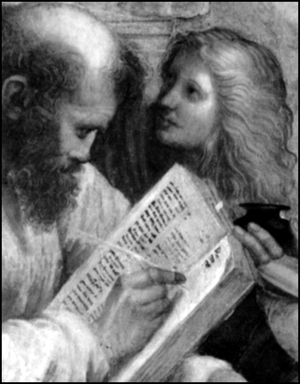
Sayıların babası Pisagor’a göre sayıların özel anlamları vardı. Sözgelimi 1, bütün varlıkların sonsuz kaynağı ve sarsılmaz ilkesiydi. 2, dişiliği temsil ediyordu. 3, uyum ve düzenle, maddenin kapsadığı üçlü öğeleri; ateşi, suyu, havayı sembolize ediyordu. 4, tanrısal güce karşılık gelirken, 5, evlenmeyi, 6, nesillerin devam etmesini, 7 ise akıl, ışık ve kuvveti simgeliyordu. 8, ahlak ve erdemi, 9, adaleti temsil ederken, 10 ise kutsal kareye denk geliyordu. Diğer bir deyişle; ilk yetkin tek ve çift sayıların toplamı (1+2+3+4=10) arasındaki kutsal dostluğa. Resim: Raffael’in hayal gücünden sayıların babası Pisagor.
Pisagor, temel eğitimini tamamladıktan sonra insanlık tarihinin ilk filozofu olarak kabul edilen Thales’in tavsiyesi ile hiç vakit kaybetmeden Mısır ve Babil’e giderek fen ve dini bilimler tahsili gördü. Mısır’da kahin ve rahiplerden aldığı eğitimin ardından Mısır’ın Babilliler tarafından işgali yüzünden matematik bilimleriyle ünlü Babil’e gitti. Burada aldığı eğitim, Pisagor’un matematiğin kutsallığına olan inancını pekiştirecekti. Mısır kahinleri ve Babil’deki rahiplerin ayinlerini müzik eşliğinde yapmaları ile müzik de Pisagor felsefesindeki yerini aldı. Otuz dört yılını söz konusu eğitimleri alarak geçiren Pisagor ülkesine dönünce dersler vermeye başladı. Ancak yönetimin baskısı ile M.Ö 529 yılında Güney İtalya’da daha çok Yunanlıların yaşadığı bir liman kenti olan Croton’a göç etmek zorunda kaldı.
Gezgin, kaşif, kahin ve bilim adamı kimliğiyle Croton’da ünü çok çabuk yayılan Pisagor, kendi adıyla anılan Pisagor Okulu’nu burada kurmuş ve üç yüz öğrenci toplamıştı. Bir bilim merkezi olan Pisagor Okulu, aynı zamanda bir dini topluluk hüviyetini de taşıyor ve zamanın meşhur ekolleri arasında yer alıyordu. Yarı mistik-yarı bilimsel, tarikatvari okulu iki gruptan oluşmaktaydı. Birinci grup, ‘matematikoi’ denen üst düzey kişiler beraber yaşıyorlardı ve birbirlerine yeminle bağlıydılar. İkinci grup ise okula devam eden öğrencilerden oluşuyordu. Pisagor ve müritlerine göre, sayılar arasında tesadüfî olamayacak kadar mükemmel bir harmoni vardı. Bu da aslında ilahi harmoninin yansımasıydı. Ne yazık ki, Pisagor’un hem bilimsel çalışmaları ve açılımlarından, hem de dini alandaki çalışmalarından rahatsız olan halk, bir süre sonra okulu ateşe verdi. Pisagor ve öğrencileri yanarak can verdiler. Ona ve kurucusu olduğu ekole ait pek çok belge de yangında kül olup gitti. Bu yüzden, Pisagor’dan günümüze çok fazla kaynak kalmamıştır.
Sayılar her şeyi belirler
Hayatını sayılara adayan Pisagor, sayılara tanrılık atfediyor, matematiğin ilkelerini dünya üzerindeki tüm sistemlerin temeli olarak kabul ediyordu. Ona göre her şey sayılarla ve matematikle açıklanabilirdi. Sayıları hayatının merkezine oturtan Pisagor, 1 sayısını tanrısal bir güç olarak kabul ediyor, 10 sayısının ise, tanrısal olanla hiçliğin ya da yokluğun mükemmel bir karışımını temsil ettiğini savunuyordu. Pisagor bununla da yetinmemiş, evrendeki bazı kavramların karşılığını sayılarla ifade etmişti. Ona göre, her bir şey bir tam sayı ile özdeşleşiyordu. Mesela 5 rengin, 6 soğuğun, 7 sağlığın, 8 aşkın sayısıydı. Sayılarla kavramlar ve nesneler arasında bağlantı kuran Pisagor, düzgün geometrik şekillerle kavramlar ve nesneler arasında da bir eşleştirme yaptı. Üstelik ateşin piramitten, yeryüzünün düzgün altı yüzlüden (heksahedron), havanın düzgün sekiz yüzlüden (oktahedron) ve suyun yirmi yüzlüden (ikosahedron) yaratıldığına inanıyordu.
Müziğin temelinde matematik var
Pisagor’un sayılarla, matematiğin dışında hayatın diğer alanları arasında kurduğu bağlantılar somut bir şekilde müzikte karşımıza çıkar. Sayılar ve oranlar üzerinden hareket eden Pisagor, matematiği müzikte de kullandı. Müzik araştırmaları yapan bilim adamı, telli çalgıda, telin kısalmasıyla çıkardığı sesin inceldiğini fark etmişti. İki telden birinin uzunluğu diğerinin iki katıysa, kısa telin çıkardığı ses uzun telin çıkardığı sesin bir oktav üstündeydi. Tellerin uzunluklarının oranı 3’te 2 oranındaysa, iki telin çıkardığı sesler beşli aralıklıydı. Örneğin müzik aletinde parmağımızı tellerden birinin ortasına bastırdığımız zaman, tele vurunca ortaya çıkan ses, telin boş olduğu zaman çıkardığı sesin bir oktav üstündedir. Yine parmağımızı telin 3’te 2 oranında bölen noktasına koyarsak, telin boş durumuna oranla beşlik aralık yukardan ses çıkacaktır.
Pisagor’un müzikteki bu önemli buluşu nasıl yaptığı ise bir hikayeyle anlatılır. Buna göre, bu buluşu için demircilerden ilham almıştı. Bir gün demirciler çarşısından geçen ünlü alim, bir dükkanın önünden geçerken, örse vuran çekiçlerin çıkardıkları sesler dikkatini çekti. Durdu ve sesleri dinlemeye başladı. Çarşıda beş ayrı demirci dükkanı bulunmaktaydı ve hepsinden de ayrı sesler geliyordu. Çünkü demircilerin kullandıkları çekiçlerin boyutları birbirinden farklıydı. Pisagor, çekiçlerin örse vuruşu sırasında çıkan düzenli seslerin bir müzik parçasını andırdığını fark etti. Her çekicin ağırlığının farklı olması, örse vurduğunda değişik notalardan ses vermesini sağlıyordu. Çekiç ne kadar ağırsa nota değeri o kadar düşüktü. Hatta aralarından bir çekicin ahengi bozduğunu bile fark etmişti. Bunun üzerine demircilerden çekiçleriyle deneme yapmak için izin istedi. Eline aldığı her bir çekici dikkatle tarttı. Yaptığı ölçümle ahengi bozan çekici buldu ve çıkardı. Yaptığı deney sonucu gördü ki, çekiçlerin ağırlıkları, bir sayı dizisi oluşturacak şekilde sıralanıyordu. Böylece bu farklı büyüklüklerdeki çekiçlerle bir müzik skalasını nasıl oluşturabileceğini keşfetmiş oldu.
Tamsayı egemenliğinin sonu
Matematiğin piri sayılan Pisagor, matematikte ‘ispat’ fikrini ortaya atan ilk bilim adamıydı. Ona göre, aksiyomlar ve postülatlar her şeyden önce gelmeliydi. “Başka bir önermeye götürülemeyen ve onunla kanıtlanamayan, böyle bir geri götürme ve kanıtı da gerektirmeyip, kendiliğinden apaçık olan ve böyle olduğu için öteki önermelerin temeli ve ön dayanağı olan temel önerme” anlamına gelen aksiyom kavramını getirmiş ve sonuçların bu aksiyom ve postülatlardan1 yararlanılarak elde edilmesi gerektiği düşüncesini yerleştirmişti. Çarpım cetvelinin bulunuşu ve geometriye uygulanması da Pisagor’a mal edilir. Bir matematik dehası olarak Pisagor’un bunlardan daha önemli ve kendisini tanınır kılan buluşuysa ‘Pisagor Teoremi’dir. Temelini, “Bir dik üçgende, dik kenarlar üzerine kurulan karelerin alanları toplamı, hipotenüs üstüne kurulan karenin alanına eşittir” düşüncesinden alan teorem, matematiksel olarak da c2 = a2 + b2 şeklinde ifadelendirilir. Bu teorem, bugün de kabul görmektedir. Ancak, bu buluşuyla Pisagor, hem bir yanlışını bulmuş hem de yeni bir keşif yapmıştır.
Sayılara büyük önem atfeden ve ‘Tanrı sayıdır’ ifadesini kullanan Pisagor, burada sayılardan bahsederken doğal sayıları, yani tam sayıları kastediyordu. Ancak, ortaya attığı teorem ile kendisiyle çelişkiye düştüğünü, tamsayıların hatta rasyonel sayıların bile matematik için yeterli olmadığını gördü. Ortaya çıkan sonuca bir süre tereddütle yaklaştı. Fakat sonunda yeni bir bilgiyi, yeni bir doğruyu bulduğunu kabul etmişti. Pisagor Teoremi sonucunda, matematikte sadece tam sayılar veya rasyonel sayılar olmadığı önermesini ortaya koyan durum ise şöyleydi: “Bir dik üçgende, dik kenarlar üzerine kurulan karelerin alanları toplamı, hipotenüs üstüne kurulan karenin alanına eşittir” teoreminden yola çıkarsak, hipotenüs uzunluğu ‘karekök 2’ ifadesiyle kendini bulur. Ama, o zamanki matematikte ortaya konduğu şekliyle, yani rasyonel sayılar arasında ‘karekök 2’ ifadesi yer almıyordu. Bu, ayrı bir sayı grubunun üyesidir; ‘irrasyonel sayı’dır. Bu gerçek, hipotenüs ya da diğer adıyla karenin köşegeni, Pisagor’un doğal sayılar kümesini altüst etmişti. Pisagorcular bundan o kadar korkmuşlardı ki, bu sırrı okul dışına bile çıkartmadılar. Çünkü kendi felsefelerini çökertmişlerdi. Fakat ortaya yeni bir gerçek çıkmıştı. Bu sonuçla birlikte, hiçbir zaman tekrar etmeyen sonsuz ondalıklı irrasyonel sayı keşfedildi.
Okul-cemaat arası Pisagor öğretisi
Pisagor’un Güney İtalya’da Croton’a göç etmesiyle birlikte, ilerleyen yaşlarında, hayatındaki öğrencilik dönemi kapanmış, sahneye bir bilge ve bir üstat çıkmıştı. Burada açtığı Pisagor Okulu’nda zengin, soylu ve zeki delikanlılardan üç yüz kişiyi bir çatı altında toplamıştı. Burada ders verdiği öğrencilerini, dinleyiciler ve matematikçiler olarak ikiye ayıran Pisagor, öğrencileri, okuluna dinleyici olarak alıyor ve başarılı olurlarsa okulda kalmalarına izin veriyordu. Matematikte kendini ispat edemeyenler bu okula giremiyordu.
Felsefi ve dini bir okul niteliği taşıyan Pisagor Okulu, diğer felsefi ekoller ve okullardan biraz farklıydı. Okulunda fizik, astronomi, matematik, müzik üzerine dersler veren Pisagor, aynı zamanda bir dini cemaat ve tarikat kurmuştu. Bu cemaat taraftarları hayatlarını belli bir öğreti etrafında şekillendirmişlerdi. Cemaat üyelerinin kesinlikle dikkat etmeleri gereken birtakım ahlâk kuralları vardı. Temiz ve namuslu bir yaşam sürmek, somut gereksinimlerden sakınarak ruhun bedene olan bağımlılığını önlemek, bu okulun önemli kuralları arasındaydı. Pisagor’un öğrencileri et yemez, keten elbise giyer, hayvan öldürmezler ve kurban kanı sunmazlardı. Bu yasağın sebebi ruh göçü kuralına dayandırılıyordu; diğer bir deyişle kesilen hayvanın, bu kılığa girmiş bir insan ruhu olabileceği ihtimali göz önünde tutuluyordu. Pisagor ve takipçilerinin et yemedikleri, dönemin halkı tarafından da bilinmekteydi. Bu yüzden 1842 yılına kadar ‘vejetaryen’ tabiri yerine ‘Pisagorcu’ ifadesi kullanılıyordu.
Etrafına topladığı cemaat ve benimsedikleri yaşam tarzından dolayı, Pisagor’un ‘ezoterizm’in2 de önde gelen öncülerinden biri olduğu kabul edilir. Mısır ve Babil’de bu yönde eğitim alan Pisagor, aslında Croton’daki okulunda kendi ezoterik ekolünü kurmuştu. Bu okulda dinler ve manevi bilimlerin yanı sıra maddi bilimler de öğretilmekteydi. Pisagor burada, günümüze ‘teknokratlar hükümeti’ olarak çevirebileceğimiz bir yönetim modeli üzerine de kafa yormuştu. Buna göre yönetici sınıf, liyakat esasına göre ve atamayla iş başına gelecek, daha sonra bu yöneticiler, kendilerinden sonra gelecek olan yöneticileri seçeceklerdi. Halkın oyu bu süreçte söz konusu olmayacaktı. Pisagor’un bu ‘seçkinci’ rejim modelinde yöneticiliğe uzanan yolda fırsat eşitliğinin sağlanması için devlet, kız ve erkek tüm çocukları eğitecekti…
Pisagor’un ‘insan bilgisinin tümünü kuşatan’ anlamında ‘matemata’lar adını verdiği terim, aynı zamanda matematik teriminin de çıkış kaynağıydı.
Meşhur matematikçi, tarihteki birçok bilim adamı ile aynı korkunç akıbeti paylaştı. Bir rivayete göre politikacılarla ters düşünce okuluyla birlikte yakıldı. Bir başka söylentiye göreyse Pisagor, önce Tarentum’a sürgün edildi. On altı yıl kadar sonra kendisine bağlılığını sürdüren idealist bir grup ile daha kuzeydeki bir sahil kasabası olan Metapontium’a kaçtı. Pisagor, Mısır’lı kahinlere verdiği söze sadık kalarak, hiçbir şey yazmadan, öğrencileri ile sohbetler ederek yaşlandı ve öldü.
NOTLAR
- Yunanistan’ın Samos (Sisam) adasında M.Ö 580 yılında doğduğu sanılıyor.
- Matematiğin nerede ve nasıl başladığı hakkında kesin bir bilgi yoktur. Ancak matematik sözcüğü, ilk kez, M.Ö 550’lerde, Pisagor okulu üyeleri tarafından kullanılmış, yazılı literatüre girmesi, Platon’la M.Ö 380’lerde olmuştu.
- Geometride Pisagor teoremini bilmeyen yoktur herhalde. Pisagor, kendi adını taşıyan teoremin yanı sıra matematiğe aksiyomatik düşünce ve ispat fikrini de getirmişti.
- Müziğin sayılarla ve oranlarla ilişkisini kurdu; diatonik skalayı keşfetti. Aynı zamanda müzikle tedavi çalışmalarıyla tıbba da katkıda bulundu.
- Dünya’nın yuvarlak olduğunu ve hem kendi hem de Güneş’in etrafında döndüğü fikrini ilk ortaya atan bilim adamı olduğu iddia edilir.
Yirmi asır boyunca tıbbı tekeline aldı; yemini ile doktorların vicdanı oldu / HİPOKRAT
(M.Ö 460-377)
“Ne tür bir insanın hasta olduğunu bilmektense,
insanın ne tür bir hastalığı olduğunu
bilmek daha önemlidir.”
Hipokrat
Kim derdi ki, Milattan Önce 460 yılında İstanköy’de (Kos Adası) doğan Hipokrat’ın (Hippocrates) adı, ölümünden binlerce yıl sonra bile, dünyanın dört bir yanında, doktorların mesleğe bağlılıklarını gösteren yemin ile birlikte kulaklarda çınlayacak. Her ne kadar ailesi tıbba yabancı insanlar olmasa da, muhtemelen yakın çevresinden hiç kimse, Hipokrat’ın, meşhur Hipokrat Yemini ile çağları aşan bir şöhret yakalayacağını hayal edememişti. Babası da bir hekim olan Hipokrat, Taşoz, Abdera (Güney Trakya), Larissa (Çanakkale Ezine civarında) ve Kyzikos’ta (Balıkesir Erdek civarı) baba mesleğini devam ettirmiş ve bir süre sonra İstanköy’e dönerek, ölene kadar burada hekimlik yapmıştı.
Hayatına dair bilinenlerin çoğu Efesli bir jinekolog olan Soranus kaynaklı olan Hipokrat ile ilgili bilgilere, 4. yüzyıldan kalma Aristo yazıtlarında da rastlıyoruz. Soranus’a göre Hipokrat’ın babası Heraklides de fizikçi bir hekimdi. Yunan dönemi boyunca sanatçı ve entelektüellerin ilk kez gerçeği aramaya başladıkları bu altın çağda yaşayan ailenin tümünün hayatı tıp eksenliydi. Öyle ki Hipokrat’ın iki oğlu Thessalus ve Draco ve damadı Polybus da onun izinden giderek hekimlik yaptı. Bir başka fizikçi Galen’e göre ise Hipokrat’ın mirasına gerçek anlamda sahip çıkan Polybus olmuştu.
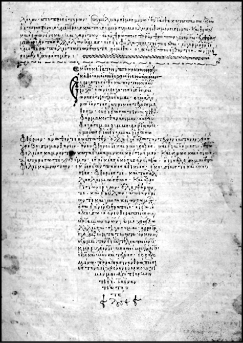
Üzerinde haç seklinde Hipokrat yemininin işlenmiş olduğu 12. yüzyıl Bizans yazması.
Soranus’un naklettiğine göre tıp fikrinin yeşermesi açısından elverişli bir ortamda yetişen Hipokrat, Trakyalı Fizikçi Herodikus’tan da ders almıştı. Hipokrat’ın İstanköy’de, 80, 90 yaşlarında öldüğü, yine bazı Yunan kaynaklarına göre de yüz yaşını devirdiği rivayet edilir. Kaç yaşına kadar yaşamış olursa olsun, şu bir gerçek ki; Hipokrat, yaptıkları ile tarihe Tıbbın Babası olarak ismini yazdırmıştır.
Tıbbı hurafelerden temizledi
Hipokrat, Kutsal Hastalığa Dair (On the Sacred Disease) isimli eserinde sara (epilepsi) hastalığı üzerine yaptığı “Bana kalırsa ‘gizemli’ olarak bilinen bu hastalığın diğerlerinden farklı olarak kutsal ya da bilinmez bir tarafı yok; onun da tıpkı diğerleri gibi doğal bir sebebi var. İnsanoğlu cehaletinden ve olağanüstülüklere düşkünlüğünden dolayı bu hastalığın doğasını kutsal kabul etme eğiliminde” tespitiyle de gösterdiği gibi, her zaman tıbbı hurafelerden ayıklamaya çalıştı. Ona haklı şöhretini kazandıran da budur. Batıl inançlardan kaynaklanan hurafelerin, hastalıkların gerçek sebebi olduğunu reddeden ekolün kurucusu olarak kabul edilen Hipokrat, aynı zamanda felsefe ile tıbbı müttefik haline getirmeye yönelik çalışmalarıyla da öne çıkmıştı. Her platformda hastalıkların tanrıların gazabından ziyade, insanların içinde yaşadıkları çevre şartlarının ve yaşam tarzından kaynaklanan alışkanlıklarının bir sonucu olduğunu savunan Yunanlı bilge, döneminin iki önemli tıp ekolünden biri olan ve hastalıklar söz konusu olduğunda insan vücudunu bir bütün olarak ele alan Kos ekolünün en önemli ismi olmuştu. Diğer bir ekol olan Knidos (Datça) ise, belirli hastalıklar üzerinde yoğunlaşıyor ve teşhise dönük çalışıyordu. Ama en büyük handikabı insan vücudu ile ilgili yanlış inanışlardı; zira o devirdeki Yunan akidelerine göre insan vücudunu kadavra olarak kullanmak yasaktı. Bundan dolayı hastalığın teşhisi yerine; dışarıdan vücudu analiz ederek, hastalığın gelişim sürecine, yani klinik gözleme yönelen Kos ekolü, pasif tedavi yöntemlerini başarıyla uygulayarak, klasik tıbbın da merkezi olacaktı.
Kadavra kullanamayan Hipokrat, bundan dolayı birçok defa yanlış teşhis koyup, yanlış tedavi uygulamış da olsa, ölümünden sonra daha da palazlanan Kos ekolünün tüm başarılı tedavi yöntemleri, kendisine mal edilmişti. Gerçekten de kan, lenf ve safra ile bağlantılı rahatsızlıklara dönük başarılı reçeteler sunan Hipokrat, geride bıraktığı ve kendi adını taşıyan külliyatı Hipokrat yazıları (Corpus hippocraticum) ile bu şöhretini haksız yere kazanmadığını göstermiş oluyordu.
Hekimlerin tırnak uzunluğuna bile dikkat etti
Hipokrat tıbbı, yüksek standarttaki profesyonelliği ile dikkat çekiyordu. Ünlü tıp bilgini, külliyatında doktorlara sürekli olarak temiz, düzenli, dürüst, soğukkanlı, anlayışlı ve ciddi olmalarını öğütlüyor; hasta kayıtlarının ve ateş, çarpıntı, ağrı, sızı gibi semptomlarla ilgili bulguların düzenli ve anlaşılır bir şekilde tutulmasını salık veriyor ve hatta doktorların tırnak uzunluğunun bile belli bir ölçüyü geçmemesi gerektiğini söylüyordu! Hastaların kendileriyle ilgili gözlemlerin yanında aile bireyleri ve yaşadıkları çevre ile ilgili gözlemlerin de tedavi sürecinin bir parçası olduğuna dikkat çeken Hipokrat, hiç şüphe yok ki, klinik tedavinin mimarı olarak anılmayı hak edecekti.
O çok meşhur yemine de beşiklik eden Hipokrat külliyatına gelirsek; bunların antik Yunan’dan kalma yaklaşık yetmiş kadar tıbbi yazıttan oluştuğunu söyleyebiliriz. Her ne kadar “Bunların hepsi Hipokrat tarafından mı kaleme alındı?” sorusunun cevabı havada kalmış olsa da, uzmanlara göre, külliyatın bir kısmı Hipokrat’ın, kalanı ise takipçilerinin elinden çıkmıştır. Zaten konuların çeşitliliği, farklı yazım stilleri ve üzerlerindeki tarihler de tüm külliyatın tek bir kalemden çıkmadığı iddiasını kuvvetlendiriyor. Bununla birlikte, içeriğinin ilham kaynağının Hipokrat olması, külliyatın, onun adı ile birlikte anılması için yetmekte. Bu arada külliyatın kendisi de, iddialara göre, ya İstanköy’deki bir kütüphanede bulunmuş ya da Milattan Önce 3. yüzyılda İskenderiye’de bir araya getirilmişti.
Hipokrat Yemini Hipokrat’ın mı?
Tıbbi uygulamaların ahlakına dair ufuk açıcı bir belge ve Hipokrat Külliyatının en önemli parçası olarak kabul edilen Hipokrat Yemini, her ne kadar son zamanlarda orijinalliği tartışılmaya başlansa da, Hipokrat’ın günümüz tıbbına yaptığı en büyük katkı olarak kabul edilir. Kendisi böyle mi düşünmüştü bilinmez, ama kabul edilen görüş şudur ki; Hipokrat, yaklaşık 2 bin 500 yıl önce tıbbın kendine has bir sanat olduğuna inandığı için, bu sanatı icra edecek olanları, hukuken olmasa da ahlaki açıdan birleştirecek bir metin etrafında bir araya getirmek istemişti. Son zamanlarda güçlenen bir görüşe göre ise, yemin, öğrencilerinden birinin kaleminden çıkmıştı. Bununla birlikte yemin, ülkeden ülkeye ufak tefek değişiklikler yapılarak, doktorluğa adım atmadan önce tıp fakültesi mezunlarına ettirilse de, orijinaline en yakın çevirisi şu şekildedir:
Hekim Apollon Aesculapions, Hygia Panacea ve bütün Tanrı ve Tanrıçalar adına. And içerim, onları tanık ve şahit tutarım ki, bu andımı ve verdiğim sözü gücüm kuvvetim yettiği kadar yerine getireceğim. Bu sanatta hocamı, babam gibi tanıyacağım, rızkımı onunla paylaşacağım. Paraya ihtiyacı olursa kesemi onunla bölüşeceğim. Öğrenmek istedikleri takdirde onun çocuklarına bu sanatı bir ücret veya senet almaksızın öğreteceğim. Reçetelerin örneklerini, şifahi bilgileri ve başka dersleri evlatlarıma, hocamın çocuklarına ve hekim andı içenlere öğreteceğim. Bunlardan başka bir kimseye öğretmeyeceğim. Gücüm yettiği kadar tedavimi kötülük için değil, yardım için kullanacağım. Benden zehir isteyene onu vermeyeceğim gibi, böyle bir hareket tarzını bile tavsiye etmeyeceğim. Bunun gibi gebe bir kadına çocuk düşürmesi için ilaç vermeyeceğim. Fakat hayatımı, sanatımı tertemiz bir şekilde kullanacağım. Bıçağımı mesanesinde taş olan muzdariplerde bile kullanmayacağım. Bunun için yerimi ehline terk edeceğim. Hangi eve girersem gireyim, hastaya yardım için gireceğim. Kasıtlı olan bütün kötülüklerden kaçınacağım. İster hür ister köle olsun erkek ve kadınların vücudunu kötüye kullanmaktan sakınacağım. Gerek sanatımın icrası sırasında, gerek sanatımın dışında insanlarla münasebette iken etrafımda olup bitenleri, görüp işittiklerimi bir sır olarak saklayacağım ve kimseye açmayacağım. Bu yemine sadık kaldıkça temiz bir hayat süreyim, herkesin saygısını, güvenini kazanayım, bunu yapmazsam her türlü felakete uğramayı hak etmiş olurum.
Mirası yirmi asır tıp dünyasına ışık tuttu
Bugün ölümünün üzerinden neredeyse 2 bin 500 yıldan fazla zaman geçti, ama Hipokratsız bir tıp jargonu hayal bile edilemiyor. Zamanında koyduğu ilkeler ve getirdiği yaklaşımlar öylesine sağlamdı ki, tıp dünyası, uzunca bir süre Hipokrat’ın mirası ile işini görmek durumunda kalacaktı. Hatta tıp tarihçisi Fielding Garrison’a göre Hipokrat’ın ölümünden sonra belli bir dönem tıp dünyası bir fetret devri yaşamış; bu bunalım, bir başka Yunan hekim Galen’in (M.Ö 200-129) Hipokrat Tıbbı’nı standartlaştırması ile aşılmıştı. Orta Çağ’da Araplar Hipokrat’ın yöntemlerini adapte etti. Avrupa’daki Rönesans hareketi ile birlikte Hipokrat yöntemleri tekrar canlanarak 18. yüzyıla kadar, neredeyse yirmi asır kadar yürürlükte kalmış, klinik teknikleri Sydenham, Heberden, Charcot ve Osler gibi birçok tıp alimine ışık tutmuştu. Belki de Hipokrat ile ilgili en güzel sözü Fransız hekim Henri Huchard söylemişti: “Orta Çağ tıbbı Hipokrat’tan ibarettir.”
NOTLAR
- İstanköy’de (Kos) doğdu, burada hekim oldu ve burada öldü.
- Hastalıkların tedavisinde temizliğin ve dinlenmenin önemine dikkat çekti.
- İnsan vücudun içindeki kan, lenf ve safra gibi sıvıların (dört unsur olarak bilinir) dengesinin bozulması ile vücut dengesinin bozulduğunu ve hastalıkların baş gösterdiğini savundu.
- Hastalıkların doğaüstü olayların değil, çevre faktörlerinin sonucu ortaya çıktığını savunan ve zatürre, epilepsi (sara) hastalıklarının belirtilerini ilk tanımlayan hekim oldu.
- Düşünce ve duyguların kalpten değil, beyinden kaynaklandığı fikrini ilk ortaya atan isim oldu.
- Egzersiz ve dinlenme ile birçok hastalığın önüne geçilebileceğini savundu.
- Adı ile anılan Hipokrat Yemini, kendisi tarafından değil, büyük bir ihtimalle öğrencilerinden biri tarafından M.Ö 5. yüzyılda kaleme alındı.
- Yunanlı filozoflar Platon ve Aristo da kendisinden büyük hekim diye bahsetmiş, külliyatı yaklaşık yirmi asır kadar tıp dünyasına ışık tutmuştu.
Geometrinin babası / ÖKLİD
(M.Ö 323- M.Ö 283)
“Doğanın kanunları,
Tanrı’nın matematiksel düşünceleridir.”
Öklid
Henüz Hz. İsa doğmadan önce günümüz geometrisinin temellerini atan Öklid, adeta bilinmek istemeyen bir alim gibi yaşadı. Geride, geometri alanında dördü sonradan kaybolan, biri de geometrinin temel kitabı olan on eser bırakmasına rağmen, yaşamı konusunda hiçbir iz bırakmadı.
Bugüne kadar geometri alanında ortaya atılan teoremlerin birçoğu, onun postulatları üzerine kuruludur. Kitabı 19. yüzyıla kadar okutulurken, aynı yüzyıl içinde geometriciler onun postulatlarına karşı yenilerini geliştirmek için uğraşıyorlardı. Antik Yunan döneminden bugünün bilim dünyasına bilgi aktaran bilim adamlarının arasına adını yazdıran Öklid, ‘Geometrinin Babası’ olarak anılmayı da fazlasıyla hak etmişti.
Yaşamı hakkında, eserine oranla daha az şey bilinse de tahminlere göre Milattan Önce 300 dolaylarında Mısır’ın İskenderiye kentinde yaşamıştı. Gençliğinde, Atina’da bulunan Platon Okulu’nda fizik, astronomi, matematik, geometri ve hatta müzik gibi alanlarda eğitim gördü. Daha sonra doğum yeri olan İskenderiye’ye giderek yaşamının büyük kısmını burada geçirdi. Burada bir matematik okulu kurdu. En ünlü eseri olan Elementler adlı kitabını da 40 yaşında iken burada yazmıştı. Okulundaki eğitimini bu kitap üzerine verdi.
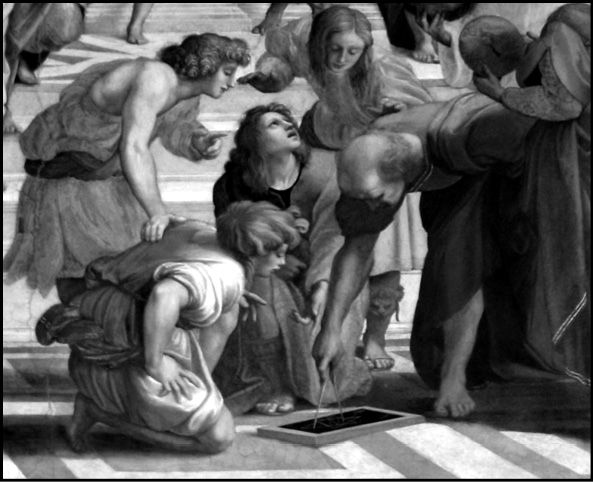
Rafael’in Öklid tablosu.
Kurduğu okulla ve öğretileriyle Makedonya Kralı Büyük İskender döneminden sonra, Yunan ilminin Yunan ve Makedon toprakları dışında yayılmasını sağladı. İskender öldükten sonra, onun Mısır’daki topraklarının idaresini alan generallerinden Mısır Kralı I. Ptolemy (I. Batlamyus) de okulunu ziyaret etti ve bir süre derslerine katıldı.
Uzun süre, kendisiyle aynı ismi taşıyan başka bir bilim adamından dolayı Yunan kenti Megara’da yaşadığı düşünüldü. Ancak zamanla, Megaralı Öklid’in felsefe ile uğraştığı ve İskenderiyeli Öklid’den 100 yıl kadar önce yaşadığı anlaşıldı. Tahminlere göre Milattan Önce 283 yılında öldü.
Elementler’le gelen şöhret
Bugüne kadar yaşamış tüm matematikçi ve geometriciler arasında adı geometriyle en çok anılan kişi olan Öklid’e bu ününü, Elementler isimli eseri getirmişti. O güne kadar geometri alanında yapılmış olan tüm çalışmaları ve kendi önermelerini, kırk yaşında kaleme aldığı bu eserinde derledi. Elementler, geometriyi ispat bağlamında aksiyomatik bir dizge olarak işleyen, o güne kadar yazılmış ilk kapsamlı eser oldu. Kitabı, 19. yüzyıla kadar bütün dünyada akademik çevrelerde ders kitabı olarak okutuldu.
Matematik tarihinin en başarılı eseri olarak kabul edilen Elementler’i daha önce hiçbir eserde rastlanmayan bir duruluk ve kesinlikle kaleme alan Öklid, içeriğinden çok konuları sunuşu açısından önemli olan eserinde önce bir takım tanımlar, aksiyomlar ve postulatlar verdi. Ardından teoremlerini de bunlara dayanarak oluşturdu. Kitabı boyunca bu postulatlarını teoremlerinde kullandı ve ispatlarını da çok düzenli bir şekilde sıraladı. Böylece Öklid, geometrisini belirli tanım ve ilkeler çerçevesinde yapılandırmış oldu.
Toplam on üç bölümden oluşan kitaba Milattan Önce 2. yüzyılda diğer bir İskenderiyeli matematikçi Hypsikles tarafından iki ayrı bölüm daha eklendi. Kitabı, kısaca şu bölümlerden oluşuyordu:
Birinci Bölüm: Benzerlik (üçgenlerin benzerliği, pergel ve cetvelle çizilen basit geometrik şekiller, bir üçgenin açılarına ve kenarlarına ilişkin eşitsizlikler), paraleller (paralel doğruların özellikleri ve paralelkenarlar) ve Pisagor Teoremi.
İkinci Bölüm: Geometrik cebir: Özdeşlikler, alan hesabı, altın kesim.3
Üçüncü Bölüm: Daireler ve açı ölçümleri.
Dördüncü Bölüm: Daire içinde ve dışında çizilen çokgenler.
Beşinci Bölüm: Geometrik olarak incelenen oran ve orantı kavramı (nesnelerin büyüklükleri ve miktarları arasındaki ilişki), kesirli, cebirsel denklemlerin geometrik çözümü.
Altıncı Bölüm: Çokgenlerin benzerlikleri.
Yedinci, Sekizinci ve Dokuzuncu Bölümler: Aritmetik (sayılar teorisinin geometrik olarak incelenmesi), eski sayılar teorisi.
Onuncu Bölüm: Orantısızlık: Ortak ölçüsü olmayan büyüklükler.
On Birinci, On İkinci ve On Üçüncü Bölümler: Uzay geometrisi (üç boyutlu cisimlerin özellikleri)
Milattan Önce 2. yüzyılda diğer bir İskenderiyeli matematikçi Hypsikles tarafından eklenen 14. ve 15. Bölümlerin içerikleri ise şu şekildeydi:
On Dördüncü Bölüm: Bir küre içine çizilen düzgün üç boyutluların karşılaştırılması.
On Beşinci Bölüm: Düzgün üç boyutluların birbiri içine nasıl çizileceği ve açı, kenar hesaplarının nasıl yapılacağı. Kitabın bu bölümünün Hypsikles değil de Miletli Isidore tarafından eklendiği de düşünülmektedir.
Öklid’in kanıt gerektirmeyen apaçık gerçekleri
Öklid, kitabında nokta, çizgi, yüzey ve cisim gibi geometrik kavramları tanımladıktan sonra kitaptaki derlemelerin tutarlı olmasını sağlamak için ‘kanıt gerektirmeyen apaçık gerçekler’ diye nitelediği beş aksiyomu sıraladı. Kitabındaki diğer tüm önermeleri de bu aksiyomlarına dayanarak öne sürdü. Öklid’in ‘doğruluğu açık ve seçik olan önerme’ demek olan aksiyomları şu şekildeydi:
1- Aynı şeye eşit olan şeyler birbirlerine de eşittirler.
2- Eğer eşit miktarlara eşit miktarlar eklenirse, elde edilenler de eşit olur.
3- Eğer eşit miktarlardan eşit miktarlar çıkartılırsa, eşitlik bozulmaz.
4- Birbirine çakışan şeyler birbirine eşittir.
5- Bütün, parçadan büyüktür.
Postulatlar
Öklid, aksiyomlardan sonra ‘ispat edilmeksizin doğru olarak benimsenen önerme, ön doğru’ anlamına gelen postulatlarını sıraladı. Öklid’in postulatları şöyleydi:
1- İki nokta arasını birleştiren en kısa yol bir doğrudur. (İki noktadan bir ve yalnız bir doğru geçer.)
2- Bir doğru, doğru olarak iki yöne de sonsuza kadar uzatılabilir.
3- Bir noktaya eşit uzaklıkta bulunan noktaların geometrik yeri bir çemberdir. (Bu noktalar kullanılarak bir çember çizilebilir)
4- Bütün dik açılar birbirine eşittir.
5- İki doğru, bir üçüncü doğru tarafından kesilirse, içte meydana gelen açıların toplamının 180 dereceden küçük olduğu yönde bu iki doğru kesişir.
Öklid’in uzayla da ilgili olan bu postulatlarından, kendisinin belirtmediği üç önerme daha çıkartılmaktadır:
1- Uzay üç boyutludur.
2- Uzay sonsuzdur.
3- Uzay homojendir.
Uzun süre, postulat olarak adlandırılan Öklid’in bu önermelerinin yapıları tam olarak anlaşılamadı. Öklid’in paraleller postulatı adıyla bilinen beşinci postulatı, matematikçiler tarafından sanki bir teoremmiş gibi kanıtlanmaya çalışıldı. Bazı matematikçiler de bu postulatı başka bir postulat ile değiştirmeye çalıştı. Öklid’in paraleller postulatı yerine konulan en tanınmış postulatlar şunlardır:
– Bir üçgenin iç açıları toplamı 180 derecedir.
– Bir doğruya, dışındaki bir noktadan yalnızca bir tek paralel çizilebilir.
Geometriyle olduğu kadar sayılar kuramı ve matematikle de ilgilenen Öklid, Thales ve Pisagor’un geniş matematik kültürünü ve bu matematikçilerin oluşturduğu matematiğin özünü ortaya çıkarıp, sistemli bir hale getirdi.
Elementler adlı eserinden başka Öklid, günümüze kadar ulaşmayı başaran beş, başaramayan dört eser daha kaleme almıştı. Öklid’in bugüne kadar gelmeyi başarmış eserleri şunlardır:
Data: Bu kitabında doğada ve geometride kabul edilen bilgilerin pratikteki uygulamasını inceledi. Kitabın konusu, Elementler ile birbirine çok yakındır.
Geometrik Şekillerin Bölünmesi Hakkında (On Divisions of Figures): Sadece, Arapçaya tercümesinin bir kısmı günümüze ulaşmayı başaran bu kitabında Öklid, geometrik şekillerin iki veya daha fazla eşit parçaya bölünmesini inceledi. İskenderiyeli Heron’un kitabıyla benzerlik gösterir.
Optik: Objelerin farklı açılardan ve uzaklıklardan bakıldıklarında nasıl göründükleri konusunda önermelerde bulunan ve perspektif alanındaki ilk Yunan eserlerinden biriydi.
Phaenomena: Öklid’in bu kitabı ise astronomların kullandığı küresel geometri alanındaydı. Autolycus tarafından yazılan Sphere/Küre adlı eserle benzerlik gösterir.
Catoptrics: Öklid’in, aynalar hakkındaki matematiksel teorilerini içerir. Özellikle de düzlemler ve küresel içbükey aynalarda oluşan nesneler üzerineydi. Ancak bu eserin Öklid’e ait olduğu kesin değil. İskenderiyeli Theon’a ait olması da muhtemeldir.
Aynı zamanda Öklid’e ait olduğu düşünülen; ancak günümüze ulaşmayı başaramamış 4 eser daha vardır.
Konikler (Conics): Kitap, adından da anlaşılacağı gibi konik bölmeler hakkındadır. Öklid’den sonra Pergalı Apollonius, bu eseri genişletmiş ve ünlü kitabını oluşturmuştu.
Porisms: Bu kitabın, Öklid’in konikler hakkındaki kitabının genişletilmiş hali olduğu düşünülmektedir. Ancak kitabın başlığının tam manası bilinmiyor.
Pseudaria veya Safsatalar Kitabı: Öklid’in bu eseri, muhakeme yolundaki yanlışları hakkında bir başlangıç kitabıdır.
Yüzey Yasaları (Surface Loci): Bu kitabın, yüzey yasaları veya mahrut yüzeyler hakkında olduğu düşünülür.
NOTLAR
- Mısır topraklarında Büyük İskender tarafından kurulan İskenderiye kentinde Milattan Önce 323’te doğdu ve burada Milattan Önce 283’te öldü.
- Temel eğitimini, kapısında “Geometriyi bilmeyen hiç kimse bu kapıdan içeri alınmaz!” levhası asılı olan Atina’daki Platon Akademisi’nde tamamladı.
- İskenderiye’ye dönerek kendi okulunu kurdu ve 40 yaşında yazdığı Elementler adlı eseri üzerinden eğitim vermeye başladı.
- Kendisini ziyaret eden ve derslerine katıldıktan sonra “Geometriyi öğrenmenin daha kısa yolu yok mu?” diye soran Mısır Kralı I. Ptolemy’e “Geometriye giden bir kral yolu yoktur!” cevabını verdi.
- Pisagor geleneğine bağlı bir ortamda yetişen Öklid için önemli olan, soyut düşünceler ve düşünceler arasındaki mantıksal bağıntılardı.
- Kendisinden önce yaşamış Thales, Pisagor ve Eudoxus gibi matematikçilerin çalışmaları üzerine kurduğu Elementler, 19. yüzyıla kadar akademik dünyanın temel ders kitaplarından biri oldu ve yaklaşık bin kez elden geçirilip basılarak kendi dalında bir rekor kırdı!
Hamama girdi; çıktığında tarihe geçmişti. Suyun kaldırma prensibini gözler önüne serip, geometriyi hallaç pamuğu gibi attı / ARŞİMET
(M.Ö 287-212)
“Fizikle matematiği başarıyla harmanlayan Arşimet,
kendisinden en az 2 bin yıl sonra yaşayan ve
matematiksel fiziğin babası olarak gösterilen
Newton ile eşdeğerdir.”
Alfred North Whitehead
Matematikçi ve Filozof
Adını okur okumaz zihninizde canlanan ‘hamamdan dışarı yarı çıplak fırlamış, elinde tasla koşturan adam’ görüntüsünü elinizin tersiyle itin. Zira Arşimet (Archimedes), sadece o görüntüden ibaret değil. Bilakis, tarihin şahit olduğu en büyük matematikçilerden biri. Ve daha birçok şey!
Matematiğe çağ atlattırdı. İntegral modelini geliştirdi. Hamamda keşfettiği (‘Eureka! Eureka! şeklinde bağırarak hamamdan çıktığı iddia edilir.’) suyun kaldırma kuvveti ile hidrostatiğin ilk kanununu hayata geçirdi. Kaldıraçların ve makaraların dilini o çözdü. Öyle ki mekanik icatları ile Marcellus’un Roma ordusunu bile şaşkına çevirdi.
Arşimet, astronom bir babanın oğlu, bir aristokrattı. Bununla birlikte yaşamının ilk safhalarına dair bilinenler azdır. Dönemin Yunan sömürgelerinden, kıyı kasabası Sicilya’da doğmuş. Bir süre Mısır’ın İskenderiye’sinde yaşamış. Eserlerinden bazıları, Yunanlılar ve Araplar tarafından Orta Çağ’a aktarılmış ve Romalı tarihçi Plutarch, hayatından bir takım sahnelerin günümüze kadar gelmesine kapı aralamış.
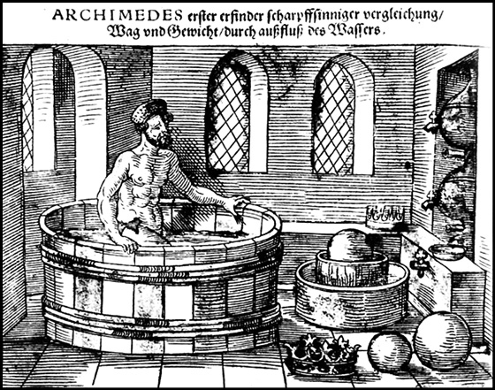
Arşimet’i hamamda gösteren bir çizim.
Arşimet neden önemli derseniz, bunun tek bir cevabı var: Matematik, statik ve hidrostatik alanlarında yaptıklarının üzerine, 1500 yıldan bu yana bir şey koymayı başarabilen olmadı!
Neler mi yaptı? ‘Çemberin Ölçümü’ isimli çalışmasında bir çember ile çapı arasındaki oranı gösteren o meşhur pi sayısını (3,142) çok küçük bir hatayla hesaplayan ilk kişi olmuş; silindir ve diğer geometrik şekillerin alan ve hacimlerinin nasıl hesaplandığını ortaya çıkarmış; günümüzde özellikle gemilerde biriken suları çıkarmak için kullanılan ve kendi adını taşıyan Arşimet vidasını tasarlamış; bitmedi mancınığı keşfetmiş (ki bu icadıyla özellikle Romalıları canından bezdirmiştir); ağır yükleri korkulu bir rüya olmaktan çıkaran makara ve kaldıraç sistemlerini geliştirmişti. Bu arada insanoğlunu, o meşhur suyun kaldırma kuvveti ilkesiyle tanıştırmış olmasını saymamıza gerek yok sanırım. Ve unutmadan; yaşadığı dönemin bilimsel verilerini kullanarak, evrenin kaç kum tanesi ile doldurulabileceğini bile hesaplamaya kalkıştığını da ekleyelim.
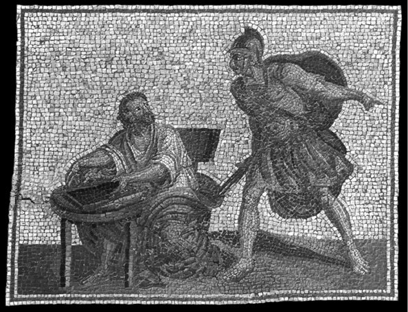
Arşimet’in ölümünü resmeden bir mozaik.
Makara ve kaldıraç düzeneklerini keşfetmesinin ardından övünmek için sarf ettiği ortaya atılan ‘Bana bir dayanak noktası verin, size dünyayı hareket ettireyim’ özdeyişi ile tarihe geçen Arşimet, her ne kadar dünyamızı sallayamasa da, yüzlerce işçinin denize indirmek için ter döktüğü koca koca gemilerin kolayca suya indirilmesini sağlamıştı.
Newton ve Gauss ile birlikte matematik liginin en iddialı oyuncularından biri olarak gösterilen Arşimet, kendi döneminde usta, bilge adam ya da büyük geometrici olarak anılıyordu. Üstelik filozof açısından mümbit olan Yunan medeniyetinin ender yetiştirdiği matematikçilerden biri olması da, onu çağdaşlarından ayırıyor.
Tüm vaktini problem çözmeye ayıran Arşimet, kendini rakamların dünyasına öyle kaptırıyordu ki, rivayetlere göre, çoğu zaman yemek yemeyi bile unutuyordu. Modern zamanların defter ya da tahta gibi imkanlarından mahrum olsa da, eline geçen her yeri, sönmüş bir yangından arta kalan küllerden, kumsallara kadar, her düz ortamı, geometrik şekillerle dolduruyordu. Öyle ki banyo sonrası masaj yapmak için vücuduna sürdürdüğü zeytinyağı üzerine de şekiller çizdiği aktarılır.
Günümüze ulaşan şöhretinin büyük bir kısmını Sirakuza (Syracuse, İtalya’nın güneyinde bir yerleşim bölgesi) Kralı Hierro ile dostluğuna borçlu olan Arşimet, kralın problemlerine çözüm bulduğu için sarayın iltifatına fazlası ile mazhar olmuştu. Öyle ki Romalı mimar Marcus Vitruvius’un, Arşimet’in ölümünden iki yüz yıl sonra aktardığı bir rivayete göre; bir gün, Kral, kuyumcusundan şüphelendiği için tacının saf altından yapılıp yapılmadığını öğrenmek ister ve Arşimet’in kapısını çalar. Yalnız bir şartı vardır; taca zarar gelmeden şüphelerinin giderilmesini istemektedir.
Soruna çözüm arayan Arşimet hamama gider. Hamamdaki teknelerden birine oturunca, taşan suyun miktarının, vücudunun suya daldırdığı kısmının hacmine eşit olduğunu fark eder. Sorunu çözmüştür! O heyecanla birlikte, yarı çıplak, bağıra bağıra evine doğru koşmaya başlar. Aynı işlemi evde tekrarlar. Tacın ağırlığına eşit saf altını ve tacı, ayrı ayrı suya batırarak, taşırdıkları suyun miktarını ölçer ve bunları birbiri ile karşılaştırır. Kral şüphelerinde haklıdır. Taşan su hacimleri eşit değildir. Böylelikle Arşimet’in bu bulgusu, ‘Suya kısmen veya tamamen batmış durumdaki bir cismin su içindeki ağırlığına eşit bir kuvvetle yukarıya doğru kaldırılması’ şeklinde özetlenebilecek ‘Arşimet Prensibi’ olarak tarihe geçmiş; Arşimet, hidrostatik biliminin mimarı olurken, kuyumcu da kellesinden olmuştur. Bazı kaynaklar ise Arşimet’in hamamda vücudunun değil, kurnada kullandığı tasın taşırdığı suyla söz konusu bulguya ulaştığını iddia eder…
Arşimet’in bulguları saymakla bitmez. Bununla birlikte en büyük katkısı Matematik alanında olmuştur. Elips, silindir, hiperbolid, parabolid, küre ve benzeri geometrik cisimleri tanımlamakla kalmayan Arşimet, aynı zamanda bunların hacimlerini de başarıyla hesaplamıştır. Hesaplamada kullandığı yöntemlerin belli bir sistematiğe kavuşması, ancak 18. yüzyılda Leibniz ve Newton gibi büyük matematikçilerin diferansiyel hesabının temel kavramlarını ortaya koyması ile olacaktır. Yunan rakam sisteminden hoşnut olmayan Arşimet, daha büyük rakamları daha kolay ifade edecek tarzda kendine özgü bir rakam sistemi geliştirmeyi de ihmal etmemiştir.
Sarayındaki bu bilim adamının olağanüstü buluşlarından fazlası ile etkilenen Kral, Arşimet’in potansiyelinden askeri amaçlı olarak faydalanmayı ihmal etmez ve himayesindeki bu bilgeden şehri savunmaya yönelik silahlar da geliştirmesini ister. Haksız da çıkmaz, hidrostatiğin ve matematiğin ustası, silahların da hakkını vermekte gecikmeyecektir. Milattan Önce 212’de Romalı General Marcellus, Sirakuza’yı ele geçirmek için hem karadan hem de denizden harekete geçer. Ama askerleri şehrin önlerine geldiğinde mıhlanmıştır adeta. Şehri savunan surların ardından Arşimet’in tasarımı olan mancınıklar Romalı askerlerin üzerine devasa taşlar savurmakta, yine parlak zekasının ürünü olan vinçler, Roma gemilerini balık gibi suda yakalayıp silkelemekte, (Bu arada tüm bu bilgilerin, tarihçi Plutarkhos’un abartılı anlatımlarından süzüldüğünü de hatırlatalım), surların içine yerleştirdiği yaylardan fırlayan onlarca ok Romalı askerleri tarumar etmekteydi. Şehri bir anda alamayacağını gören Marcellus, kuşatmada karar kıldı. Sekiz ay sonra şehre girmeyi başaran Romalı askerler, Arşimet’i yine kendinden geçmiş bir şekilde kumda figürler çizerken buldular. Götürmek istedikleri bilge, çalışmasına müdahale edildiği için askerleri tersleyince, içlerinden birinin kılıç darbesi ile oracıkta can verdi.
Bununla birlikte Plutarch, bilgenin ölümüyle ilgili iki farklı senaryo daha nakleder. Buna göre Romalı bir asker kılıcını çekip öldürmek için koşarak arkasından geldiğinde, Arşimet hiç aldırmadan çalışmasına devam etmiş ve kılıcın hedefi olmuş ya da güneşin büyüklüğünü hesaplamak için kullanacağı çemberler, açılar ve matematiksel aletlerle Sirakuza’nın yeni sahibi Marcellus’un huzuruna giderken, kendisinin mücevher taşıdığını sanan askerler tarafından öldürülmüştür. Rivayetler muhtelif. Bununla birlikte kesin olan şu ki; henüz Milattan Önce 250’de hayata geçirdiği ‘Küre ve Silindir Hakkında’ isimli çalışmasıyla küre ve silindirin hacimlerinin hesaplanmasına kapı açan formülü insanlığa sunan, ‘Yüzen Cisimler’ isimli eseriyle suyun kaldırma prensibini vücuda getiren, iki ve üç boyutlu geometride küre, çember ve spirallerle ilgili onlarca eser veren ve ancak kendisinden 2 bin yıl sonra resmen isimlendirilecek olan integral hesaplarının felsefesini henüz antik çağda kurmayı başaran Arşimet, günümüz medeniyetinin alkışı hak eden mimarlarından biri olmayı başarmıştı.
NOTLAR
- Antik dönemin en önemli matematikçi ve fizikçisi Carl Friedrich Gauss ile birlikte de tüm zamanların en büyük matematikçilerinden biri olarak bilinir.
- Zihinsel faaliyetlerle öylesine kendisinden geçermiş ki, çoğunlukla yemeyi içmeyi unutur, aylarca yıkanmadığı olurmuş.
- Mezar taşına, içinde bir küre olan bir silindir çizilmesini ve bunların hacimlerinin yazılmasını istemiş.
- Özel hayatına dair fazla bir şey bilinmiyor. Öklid’in etkisi altındaki bir grup arasında, Mısır’da eğitim gördü.
- Birçok silah geliştirdiği iddia edilir. Özellikle Sirakuza savunması esnasında kendi icadı olan mancınıklar ve vinçler kullanılmıştır. Aynalardan yansıttığı güneş ışınları ile Roma gemilerini yakması ise rivayet olarak kabul edilir.
- Yazılı bir eseri günümüze ulaşmamış olsa da, parabol, silindir, elipsler ve benzeri geometrik semboller ve hacimleri üzerine çok sayıda araştırma yaptığı bilinir.
- Her ne kadar, sıklıkla iddia edildiği gibi kaldıracı ilk bulan kendisi olmasa da, makara, kasnak düzeneğinin kullanılmasına ilk izahat getiren kişi olmuştur.
Cebiri hayatımıza sokan; ‘Sıfır’ın mucidi büyük İslam bilgini / HARİZMİ
(780-850)
“Sekiz diğer sekizden çıkınca geriye bir şey kalmaz.
boş kalmaması için bir dairecik koy!”
Harizmi (İlk kez sıfır rakamına izah getirirken)
Matematiğin iki önemli dalı/konusu olan cebir ve algoritmayı keşfeden ve iki alanın kendi bulduğu isimlerle anılmasını sağlayan beyin, Abbasi döneminde yaşamış Müslüman matematikçi El Harizmi’ydi. Daha birinci dereceden denklemlerin sırları tam çözülmemişken, ikinci dereceden denklemleri çözümleyerek matematikte yeni bir çığır açan Harizmi, sıfırı açıklayan ilk matematikçi olarak tarihe geçmişti. Bugün kullanılmakta olan ondalık sistemi Hintlilerden Avrupa’ya taşıyan Harizmi’nin, hemen hemen tüm eserleri Latinceye çevrildi ve Batı dünyasında okutuldu. Bu büyük İslam bilgini, matematiğin yanı sıra astronomi ve coğrafya gibi alanlarda da çalışmalarda bulunarak, asırlar öncesinden günümüze ışık tutmayı başarmış müstesna bir beyindi.
Alimimiz, bugünkü Özbekistan sınırları içerisinde bulunan Aral gölü yakınlarındaki Hive bölgesindeki Harezm kentinde tahminlere göre 780 yılında doğmuştu. Yaşamının ilk dönemleri hakkında çok fazla bilgi bulunmayan Harizmi, asıl eğitimini genç yaşta geldiği Bağdat’ta aldı. Burada Abbasi iktidarı tarafından da desteklenen Harizmi, Halife Memun’un, dönemin en iyi alimlerini topladığı Beyt’ül-Hikme’sinde yer aldı. Bağdat’ta Saray Kütüphanesi’nin yönetimi kendisine verildi. Abbasi halifeliği, diğer alimler gibi onun da ihtiyaçlarını karşıladığından kendini burada kolayca ilme verdi ve matematik, astronomi ve coğrafya gibi alanlarda çalışmalarda bulundu.
Bağdat’ta birçok ilimle ilgilenen Harizmi, asıl önemli çalışmalarını matematik, astronomi ve coğrafya alanlarında vermişti. Özellikle matematik alanında bazı temel kavramları ilk ortaya atan ve matematiğe yan dallar kazandırarak, gelmiş geçmiş en büyük matematikçilerden biri olarak anılmayı hak edecekti. Şimdi bu kıymetli değerin çalışmalarını mercek altına alalım.
Matematik: ‘Sıfır’ rakamının kullanımını açıkladı, ondalık sistemi geliştirdi, kendi adıyla anılacak olan ‘logaritma’ ya da ‘algoritma’yı ortaya çıkardı. Bugün Arap rakamları olarak da bilinen Hint Numaralama Sistemini tanıttı; kesirlerle, işlemler de içinde olmak üzere birçok aritmetik yöntem geliştirdi.
Tanjant fonksiyonlarının dış değerlerinin de yer aldığı trigonometrik tabloları detaylı bir şekilde açıkladı. Beyt’ül-Hikme’de dünyanın hacmini ve çevresini ölçmeye yönelik çalışmalara katıldı.
Astronomi ve Coğrafya: Geliştirdiği astronomik tablolarla astronomi üzerine de kafa yoran Harizmi, coğrafya alanında ise Batlamyos’un çalışmalarını inceledi, bunlara eklemeler yaptı ve dünya haritasında yaptığı bazı hataları düzeltti. Saatler, güneş saatleri ve usturlablar hakkında eserler kaleme aldı. Yetmiş bilim adamıyla birlikte çalışarak, 830 yılında yeni bir dünya haritası çizdi.
İkinci dereceden denklemlerin kapısını açtı
Harizmi’nin en önemli eserleri, matematik alanında çığır açan Kitabü’l Muhtasar Fi’l Cebr ve’l Mukabele ve Kitabü’l Muhtasar Fi Hisabü’l Hindi adlı kitaplarıydı. Kendisinden önce birinci dereceden denklemler ve kısmen de, hesaplama metotlarıyla ikinci dereceden denklemler çözümlenebiliyordu. Ancak henüz ne Doğu ne de Batı dünyasında ikinci dereceden denklemlerin köklerini bulma yöntemi ortaya konulmuştu.
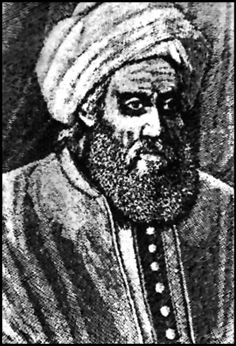
Bağdat’daki bilimsel çalışmalarıyla kısa sürede sivrilen büyük alim, Şam’da bulunan Kasiyun Rasathanesi’nde çalışmalar yapmış, aynı zamanda yerkürenin bir derecelik meridyen yayı uzunluğunu ölçmek için Sincar Ovası’nda çalışmalar yapan heyette bulunmuş, Hint matematiğini incelemek için Afganistan üzerinden Hindistan’a giden bilim heyetine başkanlık etmişti. Latinceye çevrilen eserlerinden ve ikinci dereceden bir bilinmeyenli ve iki bilinmeyenli denklem sistemlerinin çözümlerini incelediği El-Kitab’ul Muhtasar fi’l Hesab’il cebri ve’l Mukabele başlıklı eserine şöyle başlıyordu büyük alim: “Algoritmi şöyle diyor: Rabbimiz ve koruyucumuz olan Allah ‘a hamd ve senalar olsun.”
Harizmi, El Cebr ve’l Mukabele adlı kitabında ikinci dereceden denklemlerin çözüm yolunu sistemli olarak işledi. İkinci dereceden denklemlerin hangi durumlarda iki kökünün, hangi durumlarda çift kökünün olacağını ve hangi durumlarda denklemin reel kökü olamayacağını açık bir şekilde gösterdi ve bu kuralları da geometrik olarak kanıtladı. Binom çarpımları, çeşitli cebir problemleri ve miras hesabı gibi konuları ele aldı. Bugün hala cebirde uygulanmakta olan ‘kare ve dikdörtgen metodu’ olarak bilinen geometrik çözüm yolunu kullandı.
Bir önsöz, beş bölüm ve bir de ek bölümden oluşan kitabında birinci ve ikinci dereceden denklemlerin çözüm şekillerinin yanı sıra nazari ve tatbiki hesaplama şekilleri, zamanın hükümet işlerine ait hesapların yöntemleri, kanalların açılması ve bina yapımı üzerine bilgiler ile esnaf ve tüccarlar için faydalı tavsiyeler bulunuyordu.
Doğu bilim dünyasında cebir hakkında kaleme alınmış ilk eser olan bu kitap, 600 yıl boyunca cebirin ana kitabı olarak gösterildi. Batı’ya Endülüs medreselerinin vasıtasıyla ulaşan kitabın ilk Latince çevirisi 1183’te yapıldı. 1486 yılına gelindiğinde hala Leipzig Üniversitesi’nde ders kitabı olarak okutuluyordu ve 1598 -1599 yıllarında hala cebir ilminin tek kaynak eseriydi.
Cebir, Harizmi’nin bu eserine kadar matematik ve geometrinin bir parçası olarak görülüyordu. Harizmi bu kitabında: bir denklemdeki negatif terimin, eşitliğin öbür tarafına alınarak pozitif yapılması işlemine ‘cebir’ adını vermişti.
İkinci önemli eseri olan ve Arapça nüshası günümüze ulaşmayan ‘Kitab-el Muhtasar fi Hisab El Hindi’ (Hint Rakamları Hakkında) adlı eserinde Hint mahreçli sayıları ve algoritmayı inceledi. Günümüze ‘Algoritmi De Numero Indorum’ adıyla yayınlanmış Latince nüshası ulaşan eser, Adelard tarafından Latinceye çevrildi. Günümüzde hala kullanılmakta olan ‘logaritma’ terimi, Harizmi’nin bugün Cambridge Üniversitesi’nde bulunan bu eserindeki Latince, ‘algazizmi’ kelimesinden türetildi.
Harizmi, bu yapıtında, on rakamlı Hint rakamlama sistemi ile hesaplama sistemini inceledi. Batılı matematikçiler, Romalılardan bu yana yürürlükte bulunan harf rakam ve hesap sistemi yerine Hint rakam ve hesap sistemini kullanmayı bu yapıttan öğrenmişti. Bu hesaplama sistemine, daha sonraları ‘algorism’ denildi. On rakamdan oluşan rakamlama sistemi de, Harizmi tarafından tanıtıldığı için Arap Rakamları veya Hint-Arap Rakamları olarak anılır olacaktı.
Kitapları 12. yüzyıl başlarından itibaren Latinceye çevrilen Harizmi’nin astronomi ile ilgili tabloları da Çinceye çevrildi. Kitabü’s-Sureti’l-Arz başlıklı atlası da haritalarıyla birlikte tercüme edilirken Harizmi, Yahudi takvimi üzerine, ‘İstihrac Tarih’ül-Yahud’ adlı bir kitap ve usturlap hakkında iki kitap kaleme aldı. ‘Kitabü’r-Ruhname’ adlı, bugün kaybolmuş olan bir eseri de bulunan Harizmi, ‘Kitabü’l-Tarih’ isimli eserinde ise güneş saatlerini anlatıyordu.
Avrupa’da Al-Kourism olarak bilinen büyük alim, algoritmanın kurucusu olarak kabul edilir. Zaten yaygın kanaate göre de algoritma sözcüğü Harizmi’nin Avrupa’daki yazılışı al-Kourism’den türemişti. Avrupa onu, eserlerinin Latinceye tercüme edilmeye başlandığı 1145’ten itibaren büyük bir ilgi ile izlemişti. Zira Harizmi, gerek eserlerinde ilk kez sunduğu cebirsel işlem, teorem ve ispatlarla, gerekse de kendinden önce bilinenleri derleyip geliştirerek matematiğin istifadesine sunmak üzere eserlerinde bir araya getirmesiyle Avrupa’daki matematik bilincinin gelişmesine ilk elden katkıda bulunmuştu. Üstelik bazı Avrupalı tarihçiler, Avrupa’da Rönesans’ın öncülerinin, iddia edildiği gibi Grek uygarlığı değil, Harizmi ve ardından gelen Ömer Hayyam, Ebu’l Vefa, Gıyasüddin Cemşid gibi matematik alimleri olduğunu söylemişlerdir.
NOTLAR
- Tam adı Ebu Abdullah Muhammed bin Musa el Harizmi idi.
- Bugünkü bilgisayar bilimi ve dijital elektroniğin temeli olan 2’lik sayı sistemini ve 0’ı (sıfırı) buldu.
- Ahmed, Muhammed ve Hasan adlı üç çocuğu da Matematik üzerindeki ciddi çalışmalarıyla tanınır.
- 830 yılında Arapça kaleme aldığı ‘El’Kitab’ül-Muhtasar fi Hısab’il Cebri ve’l-Mukabele’ (Cebir ve Denklem Hesabı Üzerine Özet Kitap) adlı eserinde, analitik geometriye ait ilk bilgileri ortaya koydu.
- Cebir ilmini metodik ve sistematik olarak ilk defa ortaya koyarak, cebir kelimesini matematiğe kazandırdı.
‘İslam dünyasının Einstein’ı’ / EL KİNDİ
(800-873)
“Yavaş dediğimiz şey, uzun zaman içinde belli
bir mesafenin kat edilmesidir. Hızlılık ise kısa zaman
içinde yine aynı mesafenin kat edilmesidir.”
El Kindi
(İzafiyet Teorisi’ni kendince yorumlarken)
İslam dünyasının en büyük filozoflarından biri olan ve Orta Çağ Avrupa’sının, kendisini ‘Alchindus’ olarak tanıdığı El Kindi; Platon ve Aristo gibi felsefenin dev isimlerinin çalışmalarını bir sentez haline getirdi. Bilginin ilk basamağının ‘akıl yürütme’ olduğunu savunan Kindi, felsefenin yöntemini ispat etme, ispatın hedefini maddeyi şekillendiren ve anlamlandıran özleri anlama, felsefenin amacını ise Tanrı’ya ulaşma olarak açıkladı.
İzafiyet Teorisini bulan ilk kişi olan Kindi, akla büyük bir önem veren Meşşai felsefe akımını başlattı. Farklı alanlarda üç yüze yakın eser yazan Kindi’nin, on yedi eseri Latinceye, dördü de İbraniceye tercüme edildi.
Bugün Suudi Arabistan sınırları içerisinde yer alan Kufe’de 800 yılı civarında asil bir ailenin çocuğu olarak dünyaya geldi. Babası, dönemin İslam halifesi Harun Reşid’in yanında çalışan bir memurdu. Mensup olduğu kabile, sonradan Müslümanlığı seçerek Kufe’ye yerleşmiş bir kabileydi. Dedesi bu kabilenin lideri olan El Kindi’nin babası da uzun süre Kufe valiliği görevinde bulundu.
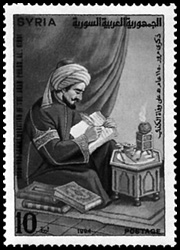
Kindi, ilk olarak Kufe ve Basra’da dil ve edebiyat alanında eğitim gördü. El Memun, El Mutasım ve El Mütevekkil ile aynı dönemde yaşayan Kindi, Abbasi Halifesi Memun’un 830 yılında kurduğu Beytü’l-Hikme’ye girdi. Burada tercüme heyetinde yer alan Kindi, Yunan ve Hint kültüründen, özellikle felsefe alanındaki eserleri Arapçaya tercüme etti. Bu dönemde tercümelere kendi fikirlerini de ekleyerek, kendine ait eserler de ortaya koymaya başladı. Yunan kuru nazariyeciliğini reddederek, düşünce sistemini matematiksel bir temele oturttu ve yeni fikirler üretti. Mütevekkil tarafından ise hattat olarak görevlendirildi. Ebu Ma’şer Ca’fer bin Muhammed Belhi, Hasneveyh, Naftuye gibi bilim adamlarını yetiştirdi.
Mutezile mezhebi mensupları tarafından desteklenen Kindi, Mütevekkil iktidarında saraydan ve Beyt’ül Hikme’den uzaklaştırıldı ve kitaplarına el konuldu. El-Mutamid’in hükümdarlığı döneminde 873’te öldü.
İki yüz yetmiş yedi eser kaleme aldı!
El Kindi, bir filozof olmanın yanı sıra bir matematikçi, fizikçi, astronom, doktor ve coğrafyacıydı. Felsefeden tıbba, matematikten astronomiye, ilahiyattan siyasete, psikolojiden diyalektiğe, astrolojiden kehanete ve optikten kimyaya kadar yirmi ayrı dalda olmak üzere tam 277 eser kaleme almıştı! Eserlerinden dolayı Arapların filozofu olarak anıldı. Şimdi, ter döktüğü alanlardaki çalışmalarına bir göz atalım isterseniz.
Matematik: Sayı sistemi üzerine 4 kitap yazdı ve modern aritmetiğin temelini attı. Astronomi ile ilgili çalışmalarında küresel geometriye de katkıda bulundu. Açıların pergelle ölçülmesi fikrini ilk defa o ortaya attı.
Fizik ve Kimya: Bazı metallerin değerli metallere dönüştürülebileceği fikrine karşı çıkarak kimyasal reaksiyonların elementlerde transformasyona yol açamayacağını savundu. Fizik alanında da geometrik optiğe katkı sağlayan Kindi, bu alanda bir kitap yazdı. Işığın yayılmasının zamanla sınırlı olmadığını keşfetti. Görme olayının, gözden koniksi olarak dağılıp genişleyen ve eşyayı saran ışık demeti sayesinde meydana geldiğini buldu. Sıvıların özgül ağırlıklarını hesapladı. Çekim ve düşme konularıyla alakalı deneyler yaptı.
Hava tahminleri üzerine de çalışmalarda bulunarak bu konuda eserler yazdı.
Bütün varlıkların fiziki olaylarının izafi olduğunu, zaman, mekan ve hareketin birbirlerinden bağımsız olmadıklarını ve hepsinin birbirine bağlı izafi olaylar olduğunu ortaya koyarak, Einstein’dan asırlar önce İzafiyet Teorisi’ni açıkladı. Cismin zamanla, zamanın cisimle, mekanın hareketle, hareketin de mekanla ve dolayısıyla hepsinin birbiriyle bağlantılı olduğunu ve müstakil olmadıklarını ve birbirlerine karşı bir önceliklerinin bulunmadığını savundu.
Tıp: O dönemde bilinmekte ve kullanılmakta olan tüm ilaçların, uygulanması gereken dozlarını belirledi.
Müzik: Armoni üretmek için bir araya getirilen çeşitli notaların her birinin belirli bir perdeye sahip olduğunu buldu. Perdesi çok düşük veya çok yüksek olan notalar kulağa hoş gelmediğinden armoninin derecesinin notaların frekansına bağlı olduğunu öne sürdü. Aynı zamanda bir ses çıkarıldığında, bunun havada kulak zarına çarpan dalgalar oluşturduğunu keşfetti. Perdenin belirlenmesi üzerine bir terkim usulü içeren bir kitap yazdı.
İslam felsefesinin temellerini atanlardan biri oldu
İslam’da felsefenin, onunla birlikte başladığı kabul edilen El Kindi, kendisinden bir asır sonra gelerek düşüncelerini geliştirecek olan Farabi ve İbn-i Sina ile birlikte İslam dünyasında felsefe kültürünü kuran kişiler olarak kabul edildi.
Akılcılığın, asla din ile çatışma halinde olmadığını, aksine uyumlu olduğunu dile getirdi. Din ile akıl çatıştığı yerlerde dini tercih etti. Buna gerekçe olarak da, hikmetini akıl anlamasa bile ilâhi kaynaklı olan dinin her zaman doğru olmasını gösterdi. Aklın, insan kaynaklı olduğundan yanılmaya ve hata yapmaya her zaman müsait olduğunu kaydetti.
Kâinatın Allah’ın hür iradesiyle sonradan yaratıldığını; bu açıdan da sonlu ve sınırlı olduğunu, Allah’ın ontolojik manada tarifinin ancak menfi şekilde mümkün olabileceğini öne sürdü.
Bilgi teorisinde Aristocu fikre yakın olan Kindi, hislerin ancak cüz’i ve maddi suretleri idrak edebileceğini; aklın ise makul alemi kavrayarak külli suretleri anlayabileceğini savundu. Ruhu ve nefsi, cismi olmayan bir cevher olarak tarif etti. Ahlâk sahasında ise İslam ahlakıyla Eflatun ve Stoacı ahlakı uzlaştırmaya çabaladı.
Toplam yirmi farklı alanda sayısız eser kaleme alan Kindi’nin eserlerinin konulara göre dağılımı şu şekildedir: Astronomi 16, Aritmetik 11, Geometri 32, Tıp 22, Fizik 12, Felsefe 22, Mantık 9, Psikoloji 5 ve Müzik 7. Bunların yanı sıra çeşitli biyografiler kaleme aldı; gelgitler, astronomi ile ilgili cihazlar, kayalar, değerli taşlar hakkında kitaplar yazdı.
Yunanca eserleri Arapçaya çeviren ilk tercümanlardan biri olan Kindi’nin kitaplarının büyük kısmı bugüne ulaşmayı başaramadı. Birçok kitabı Cremonalı Gherard tarafından Latinceye tercüme edildi. Orta Çağ’da Latinceye çevrilen kitapları arasında Risale der Tanzim, İhtiyarat’ül-Ayyam, İlahiyat-e-Aristu, el-Mosika, Met-o-Cezr ve Edviyeh Murakkaba gibi eserleri bulunmaktadır.
NOTLAR
- Tam adı Ebu Yusuf Yakub İbn İshak El Kindi’dir.
- Güney Arabistan’ın meşhur Kinde kabilesinden geldiği için Kindi ismiyle tanındı.
- 867 (H. 253) senesinde Bağdat’ta vefat etti.
- Einstein’dan asırlar önce izafiyet teorisini açıkladı.
- Açıları ölçmek için ilk kez pergel kullandı.
- Görme olayını açıkladı ve doğadaki ilaçların hangi dozda verileceğini belirledi.
- Eserlerinden dolayı ‘Arapların Filozofu’ olarak anıldı.
Geometrik kavramların mimarı; insanoğlunun yıldızlara açılan gözü oldu / BATTANİ
(858-929)
“Kendimi uzun bir süre astronomiye adadıktan sonra,
gezegenlerin hareketleriyle ilgili çalışmaların sürekli
birbiri ile çeliştiklerini ve birçok alimin gözlemlerini aktarıp,
bunlardan kurallar devşirirken hatalar yaptıklarını fark ettim.
Aynı zamanda eski ve yeni gözlemlere göre gezegenlerin
pozisyonları ve zamanlarının da değişiklikler gösterdiklerini;
bu değişikliklerin, yılların ve tutulmaların hesaplanmasını
etkileyen güneşin rotasının eğriliğinden kaynaklandığını
fark ettim. Bu meseleler üzerine yoğun ilgim, beni böylesi
bir bilimi iyileştirme yolunda teşvik etti.”
Battani
(Astronomi’ye olan katkısını izah ederken)
Paris İslâm Enstitüsü profesörlerinden Jacques Risler tarafından “Batı’ya trigonometriyi öğreten adam” olarak tanımlanan Battani, gelmiş geçmiş en büyük yirmi astronom arasında gösterilir. Çağının en büyük Müslüman astronomi âlimi olarak kabul edilen Battani, trigonometriye cebir ilmini uygulayan ilk bilim adamı olmuştu.
Bilginimiz, İslâmiyet’in insanlığa inmesinin ardından birçok bilim adamı ve filozofun yetiştiği ve dünyanın ilk üniversitesinin de kurulduğu bir coğrafyada; bugün Türkiye sınırlarında yer alan Harran’a bağlı Battan kasabasında tahminlere göre 859 yılında dünyaya geldi. Doğduğu yörenin halkının büyük kısmı Sabii inanışına mensuptu. Bu inanışa sahip kişiler, yıldızlara tapıyordu. Her ne kadar astronomiye ilgi duymasında bu inanışın etkisi olduğu düşünülse de, Battani Müslümanlığı tercih etmiş ve ilmini de yine dini amaçlarla geliştirmişti.
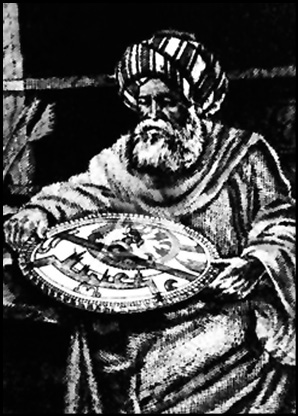
Çocukluğu ve gençliğini babasının yanında geçirdi ve ilk eğitimini ünlü bir bilim adamı olan babası Cabir bin San’an el-Battani’den aldı. Ardından eğitimini sürdürmek üzere Fırat nehri kenarında bulunan Rakka kentine gitti. Kırk yaşına kadar kaldığı Rakka’da eğitimini sürdürdü ve burada bir rasathane kurdu. Ardından bugün Irak sınırları içerisinde bulunan Samarra kentine gitti ve hayata gözlerini yumacağı 929 yılına kadar çalışmalarını orada devam ettirdi.
Sadece Müslüman dünyasının değil, Batı dünyasının da kabul ettiği ve gelmiş geçmiş tüm astronomlar arasında ilk sıralara rahatlıkla yerleştirilebilecek olan Battani, bilim dünyasına, matematik ve astronomi olmak üzere iki farklı alanda katkı sağladı. Samarra yakınındaki Kasralcis’te 929’da öldüğünde, geride görkemli bir miras bırakmış bulunuyordu.
Kopernik gelene kadar, yıldızlara giden yol oldu
Battani, astronomi alanındaki ilk ciddi çalışmalarına Rakka’da kurduğu rasathanede başladı. İlk olarak Güneş ve Ay’ın görünür çaplarında yıl boyunca meydana gelen değişiklikleri yeniden ölçtü ve kendinden önceki astronomların bulgularına yenilerini ekledi. ‘Sâbiî Cetvelleri’ adıyla bilinen yıldız kataloğunu hazırladı ve tam 489 yıldızı sınıflandırdı. Bu katalog, Kopernik dönemine kadar Avrupalı astronomlar tarafından kullanılacaktı. Bu cetvelde yıldızların hareketlerini Batlamyus’tan (Milattan Sonra 85-165) daha doğru olarak hesaplamış ve yanlışlarını düzeltmişti.
Hemen hemen aynı dönemde yaşadığı, diğer bir ünlü astronom olan Sâbit bin Kurrâ’nın, yörünge ve ‘yıldız yivi’ adı verilen farklı uzunluklara ait hesaplamalarındaki hataları da düzelten alimimiz, Dünya’nın Güneş etrafındaki dönüşünü iki ayrı metotla ölçtü. Kendisinden yarım asır önce yaşayan Hârizmî’nin yeni Ay’ın görülmesi, Güneş ve Ay tutulmaları konusundaki hesaplarına da yeni eklemeler ve düzenlemeler yaptı. Bununla da kalmadı, Güneş, Ay ve diğer gezegenlerin hareketleriyle yörüngelerini yeniden çizdi. Güneş’in Dünya’ya en uzak noktada bulunduğu sıradaki hareketini gözleyerek Güneş’in yörünge eğimini ve Dünya’nın dönüş eksenindeki değişme değerlerini hesapladı. Dünya’nın ekliptik eğiliminin, bugün bilinen halinden sadece yarım dakikalık sapmayla 23° olduğunu buldu. (Kopernik, Battani’den ancak tam bir asır sonra bu açıyı 23° 35 olarak hesaplayabilecekti!)
Tespitlerini yaparken, kendi geliştirdiği ve ‘Zat’ül Hak’ adını verdiği güneş saatini kullandı. Yine kendi geliştirdiği ‘Kadran’ ve ‘Zât’üş-Şubeteyn’ (triguetum) gibi aletlerle Güneş ve Ay tutulmalarını inceledi ve yeni Ay’ın görülme şartlarının tespit edildiği yeni bir yöntem geliştirdi.
Battani, yaptığı hassas ölçümler sonunda Güneş’in dünya etrafındaki bir dönüşünün süresini, 365 gün 5 saat 46 dakika 32 saniye olarak, bugünkü değerinden çok az bir farkla hesaplamayı başarmıştı! Güneş’in en uzak (yeröte) boylamının Batlamyus’tan beri 16° 47’ artmış olduğunu belirledi ve çok az bir sapmayla mevsimlerin uzunluğunu ve Güneş’in gerçek ve ortalama yörüngesini belirledi.
Kıblenin farklı coğrafyalarda tayinine yönelik çalışmalarda da bulunan Battani, Mekke’nin boylam ve enlemini tespit etti. Ardından kıblenin belirleneceği yerin ölçümleri ile Kâbe’nin ölçümleri arasındaki farkı bulup, kıble doğrultusunu belirledi. Hazırladığı cizlere, usturlablara ve rubu tahtalarına kıble cetvellerini ekledi.
Matematik, alimin aktif olduğu bir diğer alandı. Özellikle trigonometri konusunda çalışmalarda bulundu. Bugün trigonometrinin gerçek mucidi olarak da nitelendirilen Battani, astronomi çalışmaları sırasında matematik ve trigonometriden faydalanan ilk kişi olarak tarihe geçti. Küre ve düzlem trigonometrisi üzerinde araştırmalar yaptı. Yunan kirişlerini sinüslerle değiştirdi ve Yunan kirişi yerine sinüsleri kullanan ilk kişi oldu. Yine ilk kez kotanjant kavramını geliştirdi ve dereceli bir tablo oluşturdu.
Trigonometri alanında Batı bilim dünyasının sahip olduğu ilk bilgiler kendisine ait olduğundan, Batı’ya trigonometriyi öğreten kişi olarak da bilinen Battani, trigonometrik bağıntıları bugün kullanılan şekliyle formülleştirdi.
Matematik alanında kaleme aldığı eserleri başka dillere tercüme edildikten sonra ‘sinüs’ kavramı, bütün milletlerin matematik literatürüne girdi. Sinüs ve kosinüs tabirlerini ilk kullanan kişi olan Battani, bu tabirleri Güneş saati hesaplamasında kullandı ve güneşe ‘uzayıp giden gölge’ adını verdiği doğruya da ‘tanjant’ denildi.
Batı dünyası onu, Ay’a verdiği isim ile andı
Astronomi ve trigonometri üzerine çok sayıda kitap yazan Battani’nin 12. yüzyılda Yıldız Bilimi ve Yıldızların Hareketlerine Dair (De Scienta stellarum - De numeris stellarum et motibus) adlı Latinceye çevrilen eseri, en fazla ses getiren çalışmalarından biri oldu. Eski bir çevirisi bugün hala Vatikan’da bulunan bu kitabında yer alan tablolar, dönemin başka uzmanları tarafından hazırlanan diğer tablolardan çok daha doğru hazırlanmıştı. Astronomi hakkındaki eserleri birkaç dile çevrildi ve Rönesans’a kadar Avrupa’da birçok akademide başucu kitabı oldu.
Batı dünyası, Orta Çağ’da eserleri Lâtinceye çevrilen ilk Müslüman ilim adamı olan Battani’nin astronomideki hizmetlerinin değerini ortaya koymak için Ay’a onun adını verdi. Ay haritalarında Ay’ın adı, Batı dünyasının ona taktığı isimle Albategnius olarak yer aldı. Batı dünyasında hala bu isimle bilinen Battani’nin bazı önemli eserlerine göz atalım şimdi de.
Kitab’ül-Zic: Hazırladığı astronomi cetvellerini içeren 57 konuluk kitabında Battani, diğer kitaplarda gördüğü yanlışlık ve farklılıklardan yola çıkarak gök cisimlerinin hareketleri konusundaki teorileri geliştirdi ve neticeleri yeni gözlemlere dayanarak yeniden kaydetti. En hacimli, en fazla bilinen ve günümüze kadar ulaşan tek kitabı olan bu eseri, özellikle hesap ve rasatların neticelerini içine alan bir yıllık özelliği taşımasından dolayı Orta Çağ Avrupa’sında ve Rönesans’ın ilk devirlerinde küre trigonometrisi sahasında önemli bir kaynak olarak kullanıldı. Battani, bu eserinde tespit edilmiş her yıldızın uzaydaki yerini, yörüngesini ve hareketlerini hesapladı.
İspanya Kralı X. Alfonso, 12. yüzyılda kitabını Arapçadan İspanyolcaya tercüme ettirdi. Aynı yüzyılda Piato Tiburtinus tarafından da Latinceye çevrildi.
Tycho Brahe, Ricioli, Kepler ve Galileo gibi pek çok uzman bu eserinden faydalandı. Kitap, 20. yüzyılın başlarında Arapça aslıyla birlikte yeniden basıldı.
Kitâb ü Mârifeti’l-Metâlii’l-Bürûc fî mâ Beyne Erbaati’l-Felek: Battani, bu eserinde 12 burcun gök küresinin dörtte birindeki doğuş noktalarından, Ay ve yıldızların doğuş yerlerinden ve Ay’ın tutulmasından, ay ve yıldızların doğuş yerlerinden bahsetti. Bu eseri aynı zamanda, boylamları 0°’den 36°’ye denk gelen yıldızların doğuş yerlerini gösteren ilk katalog olma özelliğini taşır.
Risâletü’n fi Tahkik-i Akdari’l-İttisalat: Battani, bu kitabında yıldızların yan yana gelmesi konusunda ölçümlerini kaydetti. Yıldızların ışıklarını iletmesini, enlemlerden ve küre trigonometrisinden faydalanarak açıkladı.
Amerikalı bilim tarihçisi Georges Sarton’a göre çağının en önemli astronomu ve İslam dünyasının yetiştirdiği en önemli alimlerden olan Battani, astronomi, cebir ve trigonometriye getirdiği açılımların yanı sıra, gezegenler ve yıldızlara dönük bilinmezlerin üzerindeki perdeleri kaldırmakla da, insanlığa eşsiz bir hazine sunmuştu.
NOTLAR
- Asıl adı Muhammet bin Cabir bin Sinan er-Rakki el-Harrani’ydi.
- Güneş yılını, en son bulgulara oranla çok az bir sapmayla 365 gün, 5 saat, 46 dakika ve 24 saniye olarak hesapladı.
- Ay’ın hareketlerini tespit etti.
- Güneş’te bir yıl, Ay’da ise bir ay zarfında gözlenen değişiklikleri hesapladı.
- Dik üçgenleri inceleyerek geometrideki temel kavramlardan sinüs, kosinüs, tanjant, kotanjant, sekant ve kosekantın tariflerini yaptı ve bunları ilk kullanan isim oldu.
- Gerçek astronomik cetveli (zic, yıllık) hazırlayan ilk bilim adamı oldu.
- Sıfırdan 90 dereceye kadar açıların trigonometrik değerlerini hesapladı.
- Orta Çağ Batı dünyasında eserleri Lâtinceye çevrilen ilk Müslüman bilim adamı oldu.
- Batı dünyasının bilim adamları, yıllarca Ay’ı onun ismi ile (Albategnius) ile andı.
Işığın sırlarını Batı’dan altı asır önce çözen İslam alimi / İBN HEYSEM
(965-1040)
“Her daim bilginin ve gerçeğin peşinde oldum.
Ve Yaradana yakın olmak ve aydınlığa kavuşma
söz konusu olduğunda, bilginin ve gerçeğin peşinde
olmaktan daha iyi bir yol olmadığına inandım.”
İbn Heysem
Optik biliminin batıdaki süvarilerinden Roger Bacon, ki kendisi aynı zamanda bir filozoftur da, onu, üstadı olarak kabul edip, aşmaya çalışmıştı. Işık konusunda kaleme aldığı Kitab-ül-Menazır (Optiğin Hazinesi), önce doğuyu, ardından da çeviriler yoluyla batıyı aydınlatmış, Bacon ve Witello gibi ilim şövalyelerine ışık tutmuştu. Doğudan yükselip batıyı da aydınlatan bu İslam alimi, Batılıların Alhazen adıyla tanıdıkları Ebu Ali el-Hasen ibn-Heysem’den başkası değildi. Ortaçağın yetiştirdiği en büyük İslam fizikçilerinden olan Heysem, Basra’da doğmuş, Bağdat’a giderek matematik, fizik, mühendislik, astronomi alanlarında ustalığa erişmiş, ilmi şöhretini parlatan çalışmalarını ise Fatımi hanedanlarından El-Hakim idaresindeki Mısır’da yapmıştı. Optik ve ardından da matematik alanında kat ettiği mesafe ile felsefenin de sınırlarını zorlayan Heysem’in ışık üzerindeki araştırmalarının kendisini şüpheciliğe götürdüğü iddia edilse de, bunu doğrulayan bir veriye ulaşılmış değildir. Bilakis inançlı bir Müslüman olduğu bilinmektedir, ilim söz konusu olduğunda ise, şüpheci bir yaklaşım benimsenmesinin fayda olacağını savunmuştur.
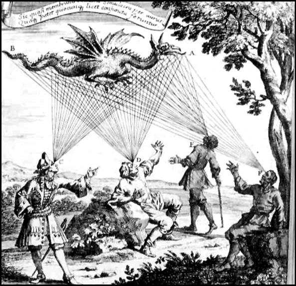
İbn Heysem’den önce batılılar, insanoğlunun nesneleri gözden çıkan ışınlarla gördüğüne inanıyordu.
Heysem’i bu kadar değerli kılan ve ölümünden nerdeyse bin yıl kadar sonra kitaplara konu eden neydi, derseniz; cevaben, ışık ve görme duyusu ile ilgili olarak ‘insanoğlunun gözünü’ ilk açan isim olmasıdır, diyebiliriz. Evet Heysem, o güne dek inanıldığı şekli ile ışığın gözümüzden çıkıp eşyaya gitmesiyle nesneleri gördüğümüz inancına karşı çıkarak, bilakis, nesnelerden yansıyan ışığın gözümüze gelmesiyle onları gördüğümüz fikrini ortaya atmıştı. Göz konusundaki ilk ilmi tasvirleri yapan da yine o olmuştu. Üstelik çalışmaları bununla da sınırlı değildi. Işığın havada kırılması ile ilgili çığır açan çalışmalar yapmış, tek ve çift gözle görme üzerine bilimsel çalışmalara imza atmış, ışıkla ilgili çalışmalarda karanlık bir odayı kullanma fikrini, ilk o hayata geçirmişti.
Heysem, çekim ve havanın yoğunlaşması ile ilgili çarpıcı fikirler geliştirmişti. Atmosfer tabakasını da geniş ilgi menziline sokan Heysem, yerküremizi saran atmosferin kalınlığını da hesaplamaya çalışmış; Güneş ve Ay’ın, atmosferin etkisiyle, ufuk çizgisine yakınken normalden daha büyük göründüklerini de tespit etmişti. Ayrıca atmosferin ağırlığı ve yoğunluğu ile bunların maddelerin ağırlığına tesir etmesi arasındaki ilişkiyi inceleyen âlimimiz, havanın yoğunluğunun ışığın kırılması ile doğru orantılı olduğunu ve bu yoğunluğun yükseklikle birlikte değiştiğini keşfetmişti. Geometri ile mantık arasında da köprü kurmaya gayret eden âlimimiz, Öklid ve Apollonius’un geometrik ve sayısal uygulamalarını geliştirerek, inşaatlarda olduğu gibi, günlük hayatta nasıl uygulanabileceklerine de ışık tutmuştu.
Aynı zamanda felsefeye de el atan Heysem, bu alanda da, Aristo ve Batlamyus’un eserlerindeki hataları ortaya koyacak kadar mertebe kat etmişti! Sözgelimi Aristo ve Batlamyus, ‘Dünya, kâinatın merkezindedir’ derken, Heysem, buna karşı çıkarak, kâinatın dünyayı merkeze alacak kadar küçük olmadığını, bilakis uzayda başka sistemlerin olabileceğini söyleyerek, güneş sistemi yaklaşımını dile getiriyordu. Bununla birlikte Heysem, fikirlerini çürüttüğü bu âlimlerin eserlerini Arapçaya çevirerek de ilme hizmet etmekten geri durmayacaktı.
Ölümünden asırlar sonra ilim bayrağını devralan, İbn-i Şatır, Batruci, Newton ve Kepler gibi âlimler de, Heysem’in Güneş Sistemi yaklaşımını benimseyerek, dünyayı, olması gereken yere oturtacaklardı.
Burada biraz soluklanıp, Heysem’in en önemli eseri sayılan Kitab-ül-Menazır üzerine bir şeyler söylemekte fayda var. Heysem, bu eseriyle neredeyse günümüzden bir milenyum önce, ışığı ve onunla ilgili tüm boyutları masaya yatırmıştı. Yedi kısımdan oluşan kitabında sırasıyla, görme hadisesini izaha çalışmış, gözün ve ışığın özelliklerini, aydınlatmanın nasıl gerçekleştiğini, görülebilen nesneleri ve nasıl görüldüklerini, görme esnasında meydana gelen yanılmaları, görme esnasında yaşanan yanılmaların bilgi, düşünce ve araştırmalarda ne tür etkiler yaratabileceğini, görüntü ve hayalleri, aynaları ve türlerini, bunlardan yansıyan ışıkların görmeyi nasıl etkilediğini, ışınların şeffaf nesnelerden geçişini ve ışın demetlerini masaya yatırarak, neredeyse dört dörtlük bir ışık külliyatını gözler önüne sermişti.

İbn Heysem, nesnelerin gözden çıkan ışınlarla görüldüğü tezini reddetti, bilakis nesnelerden yansıyan ışınlar sayesinde insanın onları gördüğünü savundu.
Heysem’in bu görkemli eseri, layık olduğu değeri görecek ve kıtalararası bir misyona soyunacaktı. Eser, Orta Çağ boyunca beş kez Latinceye çevrilip, uzun yıllar Avrupa üniversite ve ilim merkezlerinde referans kitabı olarak kullanıldı. Alman matematikçi Friedrich Risner, 1572’de söz konusu eseri Opticae Thesaurus Alhazeni Arabis Libri ismiyle Latinceye çevirerek, İspanya’da bastıracak, bir başka İslam âlimi Kemaleddin Farisi ise eseri kendi görüşleriyle de genişleterek Kitab-ül-Menazir adıyla Hindistan’da bastıracaktı.
Heysem’den sonra da, özellikle Polonyalı bilim adamı Witello başta olmak üzere, optiğe meraklı birçokları, bu alanda yeni sayfalar açmaya çalışmış, ama hiçbiri onun çalışmalarının ötesine geçen bulgulara ulaşamamıştı.

İbn Heysem’in gözlerin yapısını incelediği çizimi.
Buluşları ile bilimsel yöntem ve optikte çığır açmış olan Heysem, hiç şüphe yok ki sadece İslam dünyasının değil, ortaçağın da önde gelen âlimlerinden biriydi. Bulguları ve özellikle deneye dayanan gözlemleri ile altı asır boyunca ilim dünyasını fener gibi aydınlattı. Bilim tarihindeki katkılarından dolayı kimileri onun geliştirdiği bilimsem yöntemi, ikinci milenyumun en önemli bilimsel gelişmesi olarak kabul eder. Söz gelimi Nobel ödüllü fizikçi Abdus Salem, “Heysem, tüm zamanların en önemli fizikçilerindendir. Optik alanında yaptığı deneysel katkılarla çıtayı en yükseğe çıkarmış, Fermat, Newton ve Roger Bacon gibi alimlere deniz feneri olmuştur.” derken, bilim tarihçisi George Sarton Bilim Tarihine Giriş (Introduction to the History of Science) isimli eserinde, “Heysem sadece İslam dünyasının değil, her halükarda tüm ortaçağın en önemli ilim adamıdır” diyerek, ustayla ilgili son noktayı koymuştur.
NOTLAR
- Işığın yansıması konusundaki çalışmaları ile fizik ve optik alanında getirdiği yenilikler, altı asır boyunca hem doğuda hem de batıda bilim dünyasının referans kaynağı oldu.
- Gökkuşağının ve üzerindeki renklerin nasıl oluştuğunu izah eden ilk alimdi.
- Matematik, geometri, cebir, felsefe, ay ve güneş tutulmaları, optik, kıble hesaplaması, kainatın düzeni, görme, göz ve yapısı, fizik ve astronomi gibi farklı sahalarda yüze yakın kitap yazdı.
- Kainattaki sistemi izah ettiği Kitabun fi Hayat-il-alem isimli eseri, İspanyolca, Latince ve İbraniceye çevrildi.
- Biruni ve İbn-i Sina ile çağdaştı.
- Gölgelerin oluşumunu incelediği Risaletün fi Keyfiyet-ül-Ezlal isimli eseri 1907’de Almancaya çevrildi.
- Yunanlı filozoflara ve onlardan etkilenen kelamcılara reddiye olarak Kitabun fihi Rüdûd alel-Felasifet-il-Yunaniyye ve Ulema-il-Kelam isimli bir eser kalem aldı.
- Astronomideki bulguları ile de ses getirmişti. Ay yüzeyine inen Apollo astronotları, aydaki kraterlerden birine onun adını verdiler.
Dünyaya dair olan her şeyi inceledi; bir asra adını verdi… / BİRUNİ
(973-1048)
“Sizin aleyhinizde olsa bile gerçeği bulup ortaya
çıkartın. Hangi kaynaktan gelirse gelsin,
gerçeği kabullenmekten kaçmayın.”
Biruni
UNESCO, kendisi için, 25 dilde yayın yapan Courier dergisi tarafından hazırlanan özel sayıda Biruni’yi şu şekilde sunuyordu: “1000 yıl önce Orta Asya’da yaşayan evrensel bir deha: Biruni. Astronom, tarihçi, botanist, farmakolog, jeolog, ozan, filozof, matematikçi, coğrafyacı ve hümanist.”
Kolomb’dan önce yeni kıtalardan, Newton’dan önce yerçekiminden söz eden Biruni, yaşadığı çağın kendi adı ile anılmasını sağlayacak yetkinlikte bir dehaydı. İbni Sina ile aynı dönemde yaşamasına rağmen çağın en büyük bilim adamı olarak nitelendirildi. Bugün matematikten astronomiye, tıptan botaniğe kadar pek çok bilim alanında, insanlık olarak Biruni’ye çok şey borçluyuz. Kimdi peki bu ‘Biruni Asrı’nın kahramanı?
973 yılında Harezmlerin başkenti Kas (Ket) şehrinde dünyaya gelmişti. Küçük yaştan itibaren devrin önemli âlimlerinden dersler aldı. Aynı dönemde babasını kaybetmesine rağmen, Harzemşah hanedanı ve sarayıyla yakın irtibat kurdu. Hayatı boyunca da yaşadığı yerlerde hakim olan iktidarlarla yakın ilişkide bulundu. Ünlü matematikçi Ebu Nasr Mansur Bin Ali Bin Irak, Abdüssamed bin Samet El Hâkim ve İbn-i Sina’dan dersler aldı.
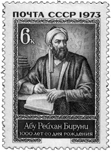
Ünlü Rus Türkolog Vasily V. Bartold tarafından ‘En büyük İslam bilgini’ olarak tanımlanan Biruni’nin Arapça yazdığı kitaplarında sık sık Türkçe kelimeler kullanması, onun Türk olduğu iddialarına yol açsa da, önemli olan kökeninden ziyade, insanlığa yaptığı hizmetti. İsmi Muhammed bin Ahmed el Birunî el- Harezmi olan bilginimiz, Biruni ya da Beyruni ismiyle tanınacak, Batı’da ise Ali Boron olarak literatüre geçecekti. (Sovyetler’in, bugünkü Özbekistan topraklarında doğduğu için sahiplendiği Biruni’nin, 1000. doğum yılında bastırdıkları anma pulu.)
Güneşin kendisine bakamayınca aksine bakarak inceleme yaptı
17 yaşındayken deney ve gözlemlerine başlayan Biruni, ilme olan ilgisinden dolayı gözlerini kaybetme tehlikesiyle karşı karşıya geldi. Kâs yakınlarında bir köyde incelemek için uzun süre çıplak gözle güneşe bakınca gözleri rahatsızlandı. Yine de pes etmedi ve ilginç bir yola başvurdu. Güneş hakkındaki daha sonraki çalışmalarını, güneşin sudaki aksine bakarak sürdürdü!
Bağdat’ın büyük matematikçilerinden Beû-l Vefâ ile beraber çalışarak Kas şehrinin boylamını buldu. Ardından Kas ile Gazne’yi başlangıç kabul ederek meyl-i külli (bir gökcisminin yörüngesinde tam olarak sapması) ölçümleri yaptı. Bu çalışmalarıyla jeodezi ilminin temellerini atmış oluyordu.
Sarayla ilişkileri öyle kuvvetliydi ki; Kas idarecisi Ahmed bin Irak 995 yılında öldürülünce, olayın etkisiyle ‘dünya makam ve mevkilerini’ terk ederek kendini ilme verdi. Daha sonra yine Harzemşahlara bağlı Cürcan idarecisi Memun bin el-Memun’un yanında vezir olarak bulundu. Ardından Kas’tan Rey’e, oradan da Buhara’ya gitti.
Doğu Harezm’in Batı Harezm’i işgal etmesiyle zor günler yaşayan bilginimiz, Harezm’in Gazneliler tarafından ele geçirilmesiyle Gazneli Mahmut’un himayesine girdi. Gazneli Mahmut’tan sonra oğlu Mesut ve torunu Mevdud’dan da büyük destek görecekti. Gazneli Mahmut Hindistan’ı ele geçirdikten sonra, yanına giderek hazinesinin başına geçti. Hindistan’dayken İbn-i Sina ile mektuplaştı. Burada Hind dili üzerine de eşsiz çalışmalar yapacaktı.
Dünyanın yarı çapını ölçtü
Harezm ile Cürcan arasında bulunan Oğuzlar bölgesinde dünyanın yarı çapını incelemek için hesaplamalar yapan Biruni, ilk başta sonuca ulaşamadı. Ancak Hindistan’da Gazneli Mahmud’un yardımlarıyla Nendene şehrinde bulunan bir kalede çalışmalarına devam edince, başarıya ulaştı.
Hindistan’da bulunduğu süre içerisinde Sankstritce öğrendi, Hint kültürü, ilmi, örf ve âdetleri konusunda incelemelerde bulundu. Birçok alanda çalışmalar yapan Biruni, Hindistan’da ayrıca matematik, astronomi, fizik, tabiî ilimler ve coğrafya üzerinde çalışmalarda bulundu, tıp ve deneysel fizikle de uğraştı. Arkasında 120’den fazla eser bırakan Biruni, 1051’de Gazne’de hayatını kaybetti.
Arapça, Farsça, İbranice, Rumca, Süryanice, Yunanca ve Çince arasında bulunduğu birçok dile vakıf olan büyük alim, matematik, astronomi, geometri, fizik, kimya, tıp, eczacılık, tarih, coğrafya, filoloji, etnoloji, jeoloji, dinler ve mezhepler tarihi üzerine araştırmalar yapmış ve otuz kadar önemli eseri insanlığın ortak hafızasına armağan etmişti. Çalışmalarına biraz daha yakından bakarsak, yaşadığı çağa adını vermiş olmasında şaşılacak bir şey olmadığını göreceğiz. İşte Biruni’nin karnesi:
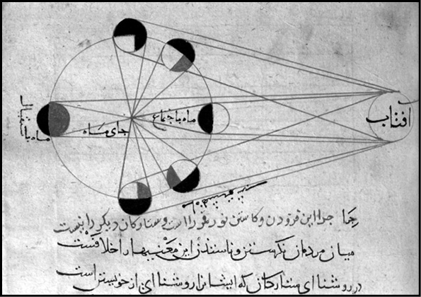
Biruni’nin ay tutulmasını inceleyen çalışması.
Matematik: Trigonometriyi astronomiden ayırıp, yeni kavramlarla zenginleştirerek bağımsız bir ilim haline getirdi. Descartes’e dayandırılan fonksiyonlar fikrini, ilk kez gündeme getirdi. Tahdît adlı eserinde ceyb-i kullîyi (sinüs) 60’tan başlattığı halde Karûn-u Mes’ûdî adlı eserinde sinüsü 1’den başlatarak, yüzyıllar sonra ancak gündeme getirilebilen trigonometrik fonksiyonların sayı olduğuna işaret etti. Trigonometriye sinüs, kosinüs, sekant, kosecant ve kotenjant fonksiyonlarını ekledi. 1 derecenin sinüsünü 18 ondalığa kadar, pi sayısını ise 12 ondalığa kadar doğru bir şekilde hesapladı. Hint-Arap rakamlarıyla ve bir açının üç eşit kısma bölünmesiyle uğraştı. Bir sayının devamlı olarak iki katını almak için yeni bir metot geliştirdi.
Astronomi: Uzmanlık alanı astronomi olan Biruni, dünyanın düz olamayacağını, aksine yuvarlak olduğunu delillerle ispatlamayı başarmıştı. Kuzeydeki Bulgar’la (Bulgaristan), Güneydeki Aden’i karşılaştırarak bu iki bölgede güneşin doğuşuyla batışı arasında iki saatlik bir fark olduğunu ortaya koydu. “Dünyanın enlemi boyunca çizilen bir çizgi düz de, içbükey de olamaz. Çünkü Kuzeye giden gözlemciye, yıldızlar az görüneceği yerde aksine artmaktadır. Bu, meridyenin dışbükey olduğunu göstermektedir. Bu enlem için de geçerlidir, boylam için de.” diyerek Dünya’nın yuvarlak olduğunu ortaya koydu. Bu yuvarlaklığı dağların bozamayacağını savundu. Dünya’nın yuvarlak olduğunu ortaya koyarken, ayrıca dünyanın Ay’a vuran gölgesini de kullanmıştı.
Dünyanın çapını ve çevresini ölçtü. Üstelik bunu yaparken, neredeyse günümüz teknolojisi ile ulaşılabilen sonuçların aynısına ulaşmayı başarmıştı. Bugün 6 bin 338,9 km olarak tespit edilen Dünya’nın yarıçapını, 6 bin 338,8 km olarak hesaplamıştı. Çok az bir farkla bu hesabı yapmasından dolayı ölçüm yaparken koyduğu kural esas kabul edildi ve ‘Biruni Kuralı’ adıyla anıldı.
Biruni ayrıca Güneş’in batış anındaki eğimini ölçtü, yıldızların hareketlerini gösteren küreler hakkında eserler yazdı. Gazne Sultanı Mesud’a astronomi tabloları hazırladı.
Coğrafya: Batlamyus ve Ceyhânî gibi bilim adamlarını karşılaştırarak bir dünya coğrafyası yazmaya çalıştı. Bazı coğrafi bölgelerin enlem ve boylamlarını tespit etti. Ancak bu hesaplamaları Harzem’de kayboldu. Güney Asya’daki sanayi, porselen ve çinicilikten; demir, altın gibi madenlerin imalatından, çay ve bambu üretiminden bahseden eserler kaleme aldı.
Güney Doğu Asya ve ürünlerinin yanı sıra Malay ve Cava adalarında kullanılan paralar, ölçü birimleri ve dilleri hakkında bilgiler aktardı. Eserlerinde Ümit Burnu’nun varlığından bahseden Biruni, Kuzey Asya ve Kuzey Avrupa hakkında da geniş bilgi sahibiydi. Amerika kıtasının ve Japonya’nın varlığından ilk defa söz eden de yine Biruni oldu.
Fizik: Newton’dan asırlar önce yerçekiminin varlığından bahsetti. Dünya döndüğü halde dünya üzerindekilerin etrafa saçılmamasını, ‘merkezde bir çekim olabileceği’ teorisine bağladı. On sekiz kadar maddenin özgül ağırlığını doğruya yakın bir şekilde hesapladı. Birleşik kapları, hidrostatik prensibinden faydalanarak da kaynak suları ile artezyen kuyularının çalışmalarını açıkladı.
Optikle de ilgilenen Biruni, ışınların görülen cisimden yansıdığını ve göze doğru geldiğini savundu. Işığın da bir hızı olduğundan bahsederek, bunun sesten daha fazla olabileceğinden bahsetti.
Jeoloji: Bugünden yaklaşık on asır önce karaların kuzeye doğru kaydığı fikrini ortaya attı. Ebu Sehl ile birlikte Dünya’nın hareketi ve kara parçaları hakkında eserler kaleme aldı. Bugünkü Arabistan çölünün, denizin çekilmesiyle meydana geldiğini savundu, delil olarak da burada bulduğu taş ve fosilleri gösterdi. İndus Vadisi’nin de alüvyonlarla dolmuş eski bir deniz havzası olduğunu kaydetti.
Botanik: Geometriyi botanik ilmine de uygulayan Biruni, bitki ve hayvanlarda üreme konularıyla ilgilendi. Çiçeklerin yapraklarının sayılarını inceledi ve ‘çiçek yapraklarının 3, 4, 5, 6 yahut 18 olabileceği; ancak asla 7 veya 9 olamayacağı’ gibi ilginç teoremler ortaya attı.
Tarih: Kendinden önceki tarihçilerden farklı metotlar kullandı ve Gazneli Mahmut, Sebüktekin ve Harzem’in tarihlerini kaleme aldı. Orta Asya’daki Türk kavimleri, Hint ve İran kültür ve tarihleriyle ilgili bilgiler aktardı. Tarihî olayları, sebep ve benzerliklerine dikkat çekerek objektif bir şekilde inceledi. Kronolojik esaslarla olayların tarihini kontrol etti, doğruluğunu teyit etti. Bilgilerini de ya yazılı kaynaklara ya da şahitlere dayandırdı.
Çalışmalarının çoğu dinler tarihi üzerine olan Biruni, mukayeseli dinler tarihinin temelini attı. Eserlerinde Hinduizm, Budizm, Zerdüştlük, Maniheizm, Sâbiilik, Eski Yunan dini, Yahûdilik, Sâmirilik, Hıristiyanlık ve İslâmiyet üzerine bilgiler verdi.
Eserleri ile asrını aydınlattı
Yüz kırk ile yüz seksen arasında eser yazdığı tahmin edilen Biruni’nin kitaplarından ne yazık ki sadece otuz ikisi günümüze ulaşmayı başardı. Eserlerinin toplamda on üç bin sayfayı geçtiği tahmin ediliyor. Şimdi de günümüze kadar gelen eserlerinden bazılarına bir göz atalım:
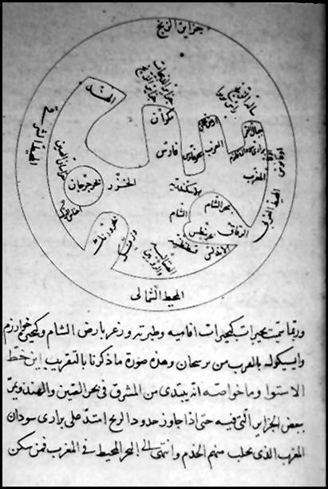
Biruni’nin denizler ve karaların dağılımını inceleyen çalışması.
El Asâr’ıl Ani- Kurûn’il-Hâlıye: Arapça olan ve Curcan Emiri Kabus bin Vasmgir’e ithaf ettiği eserinde eski milletlerden kronolojik bilgiler verdi, astronomiden bahsetti. Eser bugün Beyazıt Devlet Kütüphanesi’nde bulunuyor.
El Kanûn’ül Mesûdî: Biruni, en büyük eseri olan bu kitabını Sultan Mesud’a ithaf etti. Astronomi-astroloji ansiklopedisi türündeki eser, kronoloji, astronomik coğrafya, jeodezi, meteoroloji konusunda birçok yenilik ve buluşu içermekte. Bu eser bugün İstanbul Veliyyeddin Efendi Askeri Müzesi ve Konya Yusuf Ağa Kütüphânelerinde bulunuyor.
Kitâb-ül Tahkîk Mâli’l Hind: 1030’da tamamladığı Hint kültürü, coğrafyası ve tarihi hakkındaki kitabı. Eserini Hindistan’da 40 yıl gezdikten sonra kaleme almıştı.
Tahdîd-ü Nihâyât-i Emâkın Li Tashîh-i Mesâfeti’l Mesâkın: Biruni, bu eserinde şehirler arasındaki enlem ve boylamları bulma, kıbleyi tayin etme ile ilgili bilgilerin yanında, tarihî, coğrafî, astronomik, astrolojik, jeolojik bilgilere de yer verdi. Eser, İstanbul Kütüphânesinde bulunuyor.
Kitâb-ül Cemâhır Fî Ma’Rifeti Cevahir: Sultan Mesud’un oğlu Mevdud’a ithaf ettiği bu eserinde psikoloji, fizyoloji, sosyoloji, tıp, tarih, ahlâk, fıkıhla ilgili bilgilere yer verdi. Ayrıca mineraloji, madencilik, fizik, kimya, tıp, tarih, etnoloji gibi enteresan konuları işlemekle kalmamış, yirmi üç katı cismin ve altı sıvının özgül ağırlıklarını günümüzdeki değerlerine çok yakın bir şekilde tespit etmişti.
Kitab’üs-Saydale Fi’t-Tıb: Biruni, üzerinde uzun yıllar çalıştığı ve 80 yaşında tamamladığı bu eserinde tıp ve eczacılıkla ilgili bilgiler verdi. İlaçların ve şifalı otların isimlerini Arapça, Farsça, Türkçe, Harzemce, Süryanice ve Sanskritçe kaydetti. Eser, 1930’da Bursa’nın Kurşunlu Cami Kütüphânesinde bulundu.
Kitâb-ı İstihrac El Evtar Fi’d-Dâıre Bi Kavsil Hatt’il Müntani-il Vâkı Fihâ: Biruni, bu eserinde çember yaylarıyla kirişlerden bahsetmiş, yeni teoriler ve problemler ortaya koymuş, çözümlerini göstermişti.
Kitâb-ı Tasdihi’s-Suver ve Tahtihi’l-Kuver: Geometri hakkında olan bu kitabında, projeksiyon metotlarının tamamını incelemiş ve yeni bir metot ortaya atmıştı.
Kitâb’ül-Istıâb Fi Sanat’il-Usturlab: Usturlabın (Yıldızların Dünya’ya olan uzaklığını ölçmeye yarayan alet) şekli ve çalışması hakkında uzun bilgi verdiği bu kitabın el yazma bir nüshası Süleymâniye Kütüphânesi’nde bulunuyor.
Kitab’ül-Tefhîm Evâlli Sınaat’it-Tencîm: Soru-cevap şeklinde yazdığı ve 1029 yılında tamamladığı yıldızlar hakkındaki eserinin Arapçasını Harzem emirlerinden Ebû-l Hasan Ali’ye ithaf etti. Kitabın Farsça bir nüshası Nuruosmaniye Kütüphânesi’nde bulunuyor.
Çalışmaları ile Batı dünyasına da ilham kaynağı olan Biruni, bilimsel çalışmalarından hurafeleri ayıklamaya çalışması ve bu tür boş inançlara prim vermemesiyle de, Orta Çağ bilgini olmaktan ziyade bir Yeni Çağ bilgini olarak kabul edildi. Özellikle Kitabü’l Camahir fi Marifeti’l-Cevahir (Cevherlerin Özellikleri Üstüne) isimli eserinde, doğa olaylarını açıklamak için kullanılan klasik hurafeleri eleştirerek, İslam dünyasının daha o çağlardan itibaren bilim ile hurafe arasına net bir çizgi çekmiş olmasının en güzel örneğini sergilemişti.
NOTLAR
- Asıl adı Muhammed bin Ahmed el Birunî el- Harezmi idi.
- Doğumunun 1000. yılında Sovyetler Birliği, Türkiye, Suudi Arabistan, Pakistan, Afganistan, İran ve Libya adına pul bastırdı.
- Hayatı Özbekistan’da filme alındı.
- Bilim tarihçisi Amerikalı George Alfred Leon Sarton, kendisinin yaşadığı dönemi ‘Biruni Asrı’ olarak adlandırdı.
- Isının metaller üzerindeki genleşme etkisini; altın, cıva, bakır, demir, yakut, akik ve zümrüt gibi pek çok elementin özgül ağırlıklarını keşfetti.
- İlk sezaryen doğumunu günümüzden 1000 yıl önce gerçekleştirdi.
- Eserlerinde sıklıkla Kuran ayetlerine başvurarak, bunları çeşitli ilimler açısından yorumlamaya çalıştı.
- Bilimsel kaynaklara dayanma, deney ve tecrübeyle ispat etme şartı, onunla birlikte kurumsallaştı.
- Tahkik ve Kanunı Mes’udi isimli eserlerinde trigonometri üzerine sergilediği görüşleri ile günümüzdeki bilimsel seviyeyi, yüzlerce yıl öncesinde yakalamıştı.
- Newton ve Piscard’ın ‘ekvatorun çapı 25 bin mildir’ şeklindeki bulgusuna, ikiliden 7 asır önce, Pakistan’daki çalışmaları sonucunda ulaşmıştı.
Tıbbın ‘Kanun’unu yazan ve ‘mikrobu’ ilk kez gören ‘Hekimlerin Hakimi’ / İBN-İ SİNA
(980-1037)
“Bilgiyi elde etmek önemlidir. Bilinebilenleri elde etmek,
akılcı ruhun ahiretteki kaderini de belirler. Bu yüzden
insanoğlunun faaliyetleri açısından elzemdir.”
İbn-i Sina
Doğudan yükselen bilim yıldızlarının en parlaklarından biri de oydu. Pers topraklarında doğmuş, tıp adamı, astronom, kimyager, hafız, mantıkçı, matematikçi, şair, psikolog, bilim adamı, asker, devlet adamı ve teoloji uzmanı gibi onlarca ünvanı başarı ile taşımıştı. Bugün tıp denince sadece Doğu’da değil, Batı’da da ilk akla gelen isimlerden biri olma özelliğini hiç kaybetmedi. Küçük yaşta kendini gösteren üstün zekasını, özellikle tıp ve felsefe4 alanında yoğunlaştırarak bu alanlarda büyük çığırlar açmış olan bu bilim adamı; Batı’da Latince ismi ile ‘Avicenna’ olarak şöhret yapmış İbn-i Sina’dan başkası değildi.
Tıp alanında yazdığı eserler 19. yüzyılın başlarına kadar birçok ülkede ders kitabı olarak okutuldu. Felsefe alanında, getirdiği yenilikler ve özellikle Aristo, Farabi ve Yeni Platoncuların düşüncelerini sentezlemesiyle derin bir iz bıraktı. Din, varlık, metafizik ve mantık gibi kavramlara yeni açıklamalar getirerek İslam felsefesinin temelini atanlar arasına adını yazdırdı.
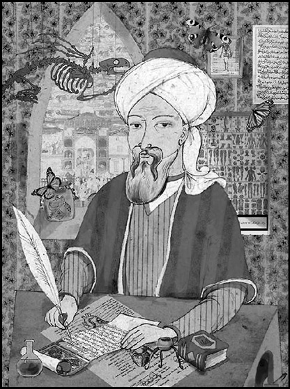
İbn-i Sina, tıp alanındaki şaheseri olan ve Kanun diye de bilinen El Kanûn Fi’t-Tıb’da fizyoloji, hıfzısıhha, tedavi ve ilâç bilimi konularında hala geçerliliğini koruyan bilgilere yer vermiş ve henüz mikroskop denen cihazın esamisi bile okunmazken, ilk kez bu eserinde, ‘mikrop’ kavramına ve bunun hastalıkların yayılmasındaki rolüne açıklık getirmişti. Kanun, 17. yüzyılda Latinceye çevrildi. Kitabı, 19. yüzyıla kadar Avrupa’daki tıp fakültelerinde başucu kitabı olarak kullanıldı.
Büyük İslam bilginlerinden İbn-i Sina, 980 yılında Buhara yakınlarındaki Hormisen’de doğmuştu. Çocukluğunda kendini gösteren parlak zekası, ileride bilim ve felsefe dünyasına yapacaklarının işaret fişeğiydi adeta. On yaşındayken Kuran’ı ezberledi. On sekizine geldiğinde, dönemin birçok ilmine vakıf olmuştu bile.
İlk eğitimini, Belh’ten göçerek Buhara’ya yerleşen ve Samanoğulları hükümdarlarından II. Nuh döneminde sarayla ilişki kurarak yüksek görevlerde bulunmuş olan babası Abdullah’tan aldı. Eğitimini devrin önde gelen alimlerinden Natilî ve İsmail Zahid’ten mantık, matematik ve astronomi dersleri alarak sürdürdü. Çalışmalarını ve öğrenimi özellikle tıp üzerine yoğunlaştırdı ve hastalıkların ortaya çıkış nedenlerini ve salgın hastalıkların nasıl yayıldıklarını inceledi. Babasının ölümünün ardından en büyük desteği Cürcan’da Şirazlı Ebu Muhammet’ten gördü ve en ünlü eserini Cürcan’da yazdı.
Tıp alanında gösterdiği üstün başarılarla bir anda sivrilmesi, saraya yakın olmasının da etkisiyle II. Nuh’un dikkatini çekti. Daha on altı yaşındayken II. Nuh’un özel doktorluğuna getirilerek, adını duyuracaktı. 997 yılında rahatsızlanan II. Nuh’u iyileştirince, saray kütüphanesinin kapıları sonuna kadar açılmış; bir anda kendisini eşsiz bir bilgi deryasının ortasında bulmuştu. Nitekim bunun hakkını verecekti de.
Saray kütüphanesinde vaktinin büyük kısmını okumak ve yazmakla geçirdi. Yirmi yaşındayken hükümdar öldü. Bunun üzerine Buhara’dan ayrıldı ve Harzem’e gitti. Diğer bir büyük İslam alimi olan Biruni ile çalıştı. Ancak burada fazla kalamadı ve sonunda Hemedan’a gelerek çalışmalarını burada sürdürdü.
Hayatını kaybettiğinde elli yedi yaşındaydı ve geride çoğu kendi sağlığında Almanca ve Latinceye çevrilmiş yüz elliden fazla eser bırakmış, antik Yunan’ın felsefe ve düşüncesini Batı’ya yeniden tanıtan filozof olarak kayıtlara geçmişti.
Geometride Öklid geometrisi üzerine çalışan; mantık, fıkıh, tıp, fizik alanlarında çalışmalarda bulunan İbn-i Sina, Farabi’nin aracılığıyla Aristo felsefesini de öğrendi.
Sahip olduğu derin ilmini felsefe, matematik, astronomi, fizik, kimya ve tıp gibi alanlarda yoğunlaştıran bu büyük alim, matematiksel terimlerin tanımları üzerine çalışmalarda bulundu. Astroloji ve kimyaya fazla ilgi göstermemesine rağmen astronomi alanında hassas gözlemler yapmıştı. Dönüşüm Kuramı’nın (metallerin birbirlerine dönüşebilirliği) doğruluğunu deneylerle kanıtlamaya çalıştı ve sonuçta yanlış olduğu hükmüne vardı. Her elementin sadece kendine özgü niteliklere sahip olduğunu ve daha değersiz metallerden altın ve gümüş gibi daha değerli metallerin elde edilmesinin mümkün olmadığını savundu.
Mekanik alanında yaptığı çalışmalarda, Aristoteles’in, cismi hareket ettiren kuvvet ile cisim arasındaki etkileşim ortadan kalktığında, cismin hava sayesinde hareket ettiğini öngören düşüncesini eleştirdi. Yaptığı deneylerle hava ile rüzgârın güçlerini karşılaştıran İbn-i Sina, Aristoteles’in haklı olabilmesi için havanın şiddetinin rüzgârın şiddetinden daha fazla olması gerektiği sonucuna ulaştı. Bir nesneye belirli bir kuvvet uygulandıktan sonra, kuvvet ortadan kalksa bile nesneyi hala hareket ettiren şeyin, ‘kasri meyil’ diye tanımladığı güdümlenmiş eğim (nesneye kazandırılan hareket etme isteği) olduğunu öne sürdü. Bu isteğin de bir kez kazanıldıktan sonra bir daha kaybolmayacağını savundu. Nesnelerin özelliklerine göre kazandıkları güdümlenmiş eğimlerin de değişik olacağını ileri sürdü.
Tıbbın kitabını yazdı…
Her ne kadar birçok alanda çalışmış olsa da asıl uzmanlık alanı tıp olan İbn-i Sina, bu konuda birçok eser yazdı. Diğer bir deyişle, dehası doktorluğundaydı. Öyle ki, çok uzun bir süre Batı dünyasında ‘Hakim-i Tıb’ (Hekimlerin Hakimi) kabul edilmiştir. Yazdığı eserler arasında en dikkat çekeni, kalp ve damar sistemi ile ilgili kaleme aldığı çalışmasıydı. En ünlü ve adıyla özdeşleşen ve beş bölümden oluşan eseri ‘Kanun’ (Al-Qanun fi’l-tibb) 19. yüzyıl başlarına kadar dünyanın birçok yerinde ders kitabı olarak okutulmuş, tamamen deneylere dayanması açısından oldukça önemli bir kaynak olarak kabul edilmişti. Latinceye çevrilen bu eser, Orta Çağ’da dört yüz yıl boyunca, Batı üniversitelerinde ders kitabı olarak okutulmuştu.
Ansiklopedi tarzında kaleme aldığı bu en ünlü eserinde sırasıyla anatomi ve koruyucu hekimliği, basit ilaçları, patolojiyi, ilaçlarla ve cerrâhî yöntemlerle tedaviyi ve çeşitli ilaç terkiplerini anlatıyordu. Kitabında bazı hastalıkların bulaşmasında ve yayılmasında gözle görülmeyen birtakım varlıkların etkisi olabileceğini öne sürerek, bugün mikrop olarak bilinen canlı hakkındaki ilk tespiti gerçekleştirmişti. Mikroskobun henüz bilinmediği bir zamanda, bazı hastalıkların bulaşmasında gözle görülmeyen varlıkların etkisi olduğunu açıklaması o zaman için çok ilginç karşılanmıştı. Günümüzde de son derece önemli sayılan tıp ahlakı konusunda da (deontoloji) çok temel ilkeleri, ilk kez o dile getirmişti.
Ameliyatı son çare olarak görüyordu…
Kendisi de bir cerrah olduğu halde, cerrahiye her zaman için son çare olarak başvurulmasını, önemsiz hastalıklar için ilaç verilmemesini öğütlemişti. Tıpta en önemli şeyin doğru teşhis olduğunu, teşhisin doğru yapılabilmesi için de hastanın gerektiği ölçüde ve hassasiyette gözlem altında tutulması gerektiğini vurgulamıştı. Bugün halen Paris Tıp Fakültesi’nin büyük konferans salonunda İbn-i Sina’nın portresi yer alır. Ayrıca Ingolstadt Üniversitesi Tıp Fakültesi’ndeki en büyük amfiye de Batı’da anıldığı şekliyle Avicenna ismi verilmiştir. Aynı fakültenin doktora yönetmeliğine göre sınavda İbn-i Sina’dan bir soru sorulması zorunludur.
Bu büyük tıp dehası “İlmi tıbbı iki satırda topluyorum.” diyerek şu ünlü vecizesini dile getirmişti: “Sözün güzelliği kısalığındadır. Yediğin zaman az ye, yedikten sonra beş saat daha hiçbir şey yeme. Midenin üçte birini havaya, üçte birini suya, üçte birini de yemeğe ayır.” Bu tavsiyesi, günümüzde de geçerliliğini korumakta.
Felsefe ile de yakından ilgilenen ve aynı zamanda bir filozof da olan alim, bilimleri madde ve biçim bakımından üçe ayırıyordu:
Doğa bilimleri ya da aşağı bilimler (El İlm’ül-Esfel); Maddesinden ayrılmamış biçimlerin bilimi,
Metafizik (Mabad’üt-Tabia); Mantık ya da yüksek bilimler maddesinden ayrılan biçimlerin bilimleri,
Matematik ya da orta bilimler (El İlm’ül-Evsat); Ancak insanın zihninde maddesinden ayrılabilen, bazen maddesiyle birlikte, bazen ayrı olan biçimlerin bilimi.
Hayatı boyunca dört yüz elli civarında eser kaleme alan İbn-i Sina’dan geriye, tıp ve felsefe üzerine yazdıkları olmak üzere, iki yüz elli eseri kalmıştı. Kitaplarının hepsi başta Latince olmak üzere birçok dile çevrilmiş olan alimimizin başlıca eserleri ise şöyleydi;
Kitab’ül-Necat (Kurtuluş Kitabı)
Risale Fi-İlm’ül-Ahlak, (Ahlak Konusunda Kitapçık)
İşarat ve’l-Tembihat, (Belirtiler ve Uyarılar)
Kitab’üş-Şifa (Şifa Kitabı)
Kitab’üş-Şifa adlı eserini bir felsefe ansiklopedisi şeklinde kaleme alan İbn-i Sina, Kitâbü’l-İnsâf’da ise Aristo felsefesine yeni açılımlar getiriyordu. İlmi araştırmalarının yanı sıra şiir de yazan İbn-i Sina, diğer kitaplarını ağırlıklı olarak Arapça yazmasına karşın şiirlerinin çoğunu Türkçe yazmıştı.
On sekiz ciltlik Kitab’üş-Şifâ’da tıptan ziyade matematik, fizik, metafizik, teoloji, ekonomi, siyaset ve musiki konularını incelemiş, aynı kitapta dağların oluşumu ile ilgili orijinal saptamalarda bulunmuştu.
İbn-i Sina’nın aynı zamanda matematik, fizik, kimya ve astronomi alanında da çalışmalar yaptığını biliyoruz. Öyle ki yerin çapını ve boylamlarını hesaplaması sırasında ulaştığı değerler, bugünki modern astronomide kullanılan değerlere çok yakındı. Kimya alanında da geniş çaplı araştırmalar yapmış olmasına ve çalışmaları zamanında çok değer görmesine rağmen İbn-i Sina, astrolojiye hiç itibar etmemiş olmasıyla da dikkat çeker.
Hayatının son on dört yılını İsfahan’da geçirmiş ve dönemin hükümdarı Alau’-Devle’den ve saray çevresinden büyük saygı görmüştü. Hükümdara eşlik ettiği bir sefer sırasında hastalanınca, her ne kadar kendi kendini tedavi etmeye çalışsa da, Tıbbın Hakimi, bağırsaklarındaki kolik sancılara ve aşırı bitkinliğe daha fazla dayanamayıp 21 Haziran 1037’de Hemedan’da bu dünyayı terk etmişti. Geride onlarca insanın hayatını dolduracak kadar bilimsel bir külliyat bırakarak…
NOTLAR
- Tam adı Ebu’l-Ali el-Hüseyin b. Abdullah İbn Sina’dır.
- Buhara yakınlarında Hormisen’de doğdu, 21 Haziran 1037’de Hemedan’da mide hastalığından öldü.
- Aristotelesçi felsefe anlayışını İslam düşüncesine göre yorumlayarak, yaymaya çalıştı. Akılcı yöntemin gelişmesine katkı sağladı.
- El Kanun Fi’t-Tıb kitabında hastalıkların bulaşmasında ve yayılmasında gözle görülmeyen birtakım varlıkların etkisi olabileceğini öne sürerek, mikroskobun bulunmasından asırlar önce mikrobun varlığından bahsetti.
- Buharla damıtmayı ilk kez o kullandığı için, Aromaterapi’nin de babası olarak kabul edilir.
- Kanun isimli kitabı, 19. yüzyıla kadar Avrupa’daki tıp fakültelerinde başucu kitabı oldu.
- Hayatına ilişkin en önemli bilgiler, ölümüne kadar yanından hiç ayrılmayan öğrencisi El-Cuzcani’nin, hocasının hayatı hakkında kaleme aldığı kitaptan elde edilmişti.
- Hava sıcaklığını ölçmek için deneylerinde hava termometresini kullanan ilk isim olmuş, gök kuşağının oluşması ile ilgili doğruya yakın çıkarımlarda bulunmuş ve aynı zamanda ışık hızı ile ilgili şaşırtıcı tespitler yapmıştı.
- Çok az uyur, her fırsatta okurdu. Öyle ki at üstündeyken bile yazmaya devam ettiği söylenirdi.
- Uğradığı bir iftira üzerine kapatıldığı Ferdecan Kalesi’nde de boş durmamış ve üç eser kaleme almıştı.
Horasan’ın yıldızı; İran’ın ve Irak’ın dahisi, alimlerin prensi / ÖMER HAYYAM
(1048 - 1131)
“Yaşamın sırlarını bilseydin ölümün sırlarını da
çözerdin; Bugün aklın var, bir şey bildiğin yok:
Yarın, akılsız, neyi bileceksin?”
Ömer Hayyam
Selçuklu döneminin önde gelen alimlerinden biriydi. İran’da doğmuştu. Özellikle matematik sahasında yaptıkları, İslam dünyasında bir çığır açmış olmasına karşın, asırlar sonra, ‘şarap, zevkü seva ve gününü gün etme’ gibi kavramlarla adının anılması, bu büyük beyin için ne büyük bir talihsizlik olmalı. Her ne ise, ‘Herkesin Hayyam’ı kendine’ deyip, İslam topraklarının yetiştirdiği bu önemli alime, İranlı Giyaseddin Ebu’l Feth Bin İbrahim El Hayyam’a dönelim.
Tüm dünyada kısaca Ömer Hayyam olarak tanınan bu keskin beyin, çadırcı bir babanın oğlu olarak dünyaya geldi. Soyadı da ‘çadırcı’ anlamına gelen Hayyam, belki babasının işini devralmayacak, ama neredeyse yaşadığı toprakların üzerine bir bilim çadırı kuracaktı.
Yaşadığı dönemde, İbn Sina’dan sonra İslam topraklarından çıkan en büyük alim olarak resmedilen Hayyam, tıp, fizik, astronomi, cebir, geometri ve yüksek matematik gibi alanların altından girip üstünden çıkmış, ama ne yazık ki çalışmalarının büyük bir bölümünü yazılı olarak geride bırakmamıştı.
Peki, daha sonra şairliğinin gölgesinde kalacak olan bilim adamı kimliği ile diktiği çadırın altında neler vardı diyorsanız, sıkı durun. Zira neredeyse yok yoktu!
Denklemlerin altını üstüne getirdi
Bilimin bir çok alanında at koşturan Hayyam, bu iştahı ile ‘zamanının tüm bilgilerini bilen’ sıfatı ile anılmış ve aralarında Risale fi’l Barehin alâ Mesailü’l-Cebr ve’l- Mukabele (Cebir ve geometri üzerine), Muhasar fi’l- Tabiiyat (Fiziksel bilimler alanında bir özet), Muhtasar fi’l - Vücud (Varlıkla ilgili bilgi özeti), El- Kevnn ve’t Teklif (Oluş ve Görüşler), Mizan-ül Hikem (Bilgelikler Ölçüsü), Ravzat-ül- Ukul (Akıllar Bahçesi) ve Öklid’in teoremlerine cevap olarak yazdığı Fi Şerh-i ma eşkel men Mosaderhât-e Ketâl-e Oklides olmak üzere, geride on kitap ve otuz monografi bırakmıştı. Özellikle bahsi geçen son kitabında Öklid’in kaldığı yerden sazı eline alarak, onun paralel doğrular teorisine katkıda bulunmuş, getirdiği yeni yorumla bugün Öklid dışı geometride kullanılan ‘geniş, dar ve dik açı hipotezleri’ ile ilgili biçimlere ulaşmıştı. Yine Öklid üzerine yaptığı çalışmalarda irrasyonel sayıların da tıpkı rasyonel sayılar gibi kullanılabileceğini kanıtlayarak, matematik tarihinde çığır açtığı da kabul edilir.
Hayyam’ın en büyük bilimsel çalışması ise Cebir Risalesi’ydi. On bölümden oluşan bu eserinde Hayyam, kübik denklemleri incelemiş ve bilim tarihinde bu denklemleri sınıflandıran ilk kişi olmuştu. Cebiri, sayılar ve geometri üzerindeki sır perdesini kaldıran araç olarak tanımlayan alim, 3. dereceden 13 farklı denklem tanımlamış, bu denklemleri çoğunlukla geometrik metot kullanarak çözmüş ve bunları gayet akılcı olarak seçtiği konikler üzerine inşa etmişti.
Denklemleri, köklerinin varlık koşullarına varıncaya kadar masaya yatıran Hayyam’ın, aynı zamanda Binom Teoremi’ni kullanan ilk isim olduğu da iddia edilir. Bununla birlikte Pascal Üçgeni kavramının ve Öklid dışı geometrinin mimarının Hayyam olduğunu öne sürenler de yok değildir.
Yine de tüm bunlara rağmen, tabiri caiz ise, Hayyam’ı Hayyam yapan, Rubaiyat (Dörtlükler) isimli eseri olacaktı. İlginçtir, şairliği asıl uğraşı olarak görmeyen, bilakis yaşamın hoşluğunu ve yaşamaktan aldığı keyfi göstermenin bir yolu olarak gören Hayyam, bugün bile gözde olan rubailerinin hakkını öylesine vermişti ki, kaleme aldığı iki yüz civarındaki rubai ile doğu edebiyatının küçük parçalarından; 4 satırlı ve kendine özgü aruz kalıpları olan bir şiir türü olarak kabul edilen rubainin kurucusu olarak kabul edilecekti. Batı’da ise İngiliz şair Edward Fitzgerald’ın başarılı çevirileri ile ün yapan Hayyam, ilk çevirinin 1859’da Londra’da yayınlanmasıyla birlikte edebiyat dünyasına bomba gibi düşmüş, birçok Batı şehrinde çevirileri yayınlanmış ve hatta Londra’da, girişinde kendisine ait dörtlüklerin bulunduğu bir Hayyam Kulübü de kurulmuştu.
Siyasete hayır, bilime evet…
Adını bilim dünyasına geçiren Cebir Risalesi’ni İslam dünyasının bilim merkezlerinden Semerkant’ta kaleme alan alimimiz, İslam tarihinin önemli isimlerinden, ünlü devlet adamı Nizamülmülk ve kurduğu suikast timi ile meşhur olacak olan Hasan Sabbah ile de tanışmıştı. Reşidüddin, Cami-üt-Tevarih isimli eserinde bu üçlünün okul arkadaşı olduğunu öne sürer. Dönemin ünlü hakanı Melikşah’ın gözde veziri Nizamülmülk, Hayyam’daki bilgeliği fark ederek, kendisine devlet işlerinde rol almayı teklif etse de, Hayyam, bilime siyaset karıştırmamakta kararlıdır, teklifi nazikçe reddeder.
Bununla birlikte Hayyam, sultanın siyasetinden uzak durmuş olsa da, takvim ile ilgili çalışmalarına başkanlık etme fikrine hayır dememişti. Öyle bir takvim yaptı ki, ‘Ömer Hayyam Takvimi’ olarak tarihe geçen bu çalışması (ki günümüzde Celali Takvimi olarak bilinir) 5 bin yılda bir gün hata verirken, bugün kullandığımız Rumi takvimi ise 3 bin 330 yılda bir gün hata veriyor. Büyük ustanın neredeyse asırlar önce günümüz sistemini yakalamasına ramak kalmış!
Hayyam, takvimi ile sadece gün ve ay gibi klasik takvim unsurlarını tespit etmekle kalmamış ayı zamanda mevsime göre yaşanacak iklim değişikliklerini de büyük bir isabetle tahmin etmişti. Ortadoğu ve Bizans’ta çok uzun bir süre kullanılacak olan bu takvimi için Hayyam, o ünlü rubailerinden birinde şöyle yazacaktı:
Ah, diyor ki benim hesaplamalarım
Yılı insan pusulasına uydurdu, ha?
Eğer öyleyse takvimden
Doğmamış yarını ve ölü dünü koparalım.
Hayyam ateist miydi?
Her ne kadar çağdaşı diğer alimler gibi sıkı bir İslami eğim alsa da, Hayyam’ın din ile ilişkisi her zaman mesafeli oldu. İnanç yerine insan sevgisini ikame etmiş pozitivist bir şairdi de diyebiliriz. Bununla birlikte Hayyam için ateist idi, demek de çok iddialı bir yaklaşım olacaktır. Zira şair, dörtlüklerinde ima ettiği üzere mutlak bir yaratıcı fikrini inkar etmemekle birlikte, imanın şartlarına şüpheci yaklaşımı ile dikkat çekmiştir. Rubailerini inceleyenler de, Hayyam’ın;
Rahmetin var, günah işlemekten korkmam;
Azığım senden, yolda çaresiz kalmam;
Mahşerde lütfunla ak pak olursa yüzüm
Defterim kara yazılmış olsun, aldırmam.
Hak er geç cimrilerin hakkından gelir;
Cehennem ateşleri onlar içindir.
Ne der, dili inciler saçan Muhammed:
Cömert gavur, cimri Müslüman’dan yeğdir,
satırlarında şairin, Yaradanı kabul etmekle birlikte, kitaba uygun davranmayan Müslümanlara olan kızgınlığını yansıttığını, buradan hareketle de gündelik hayatında dini pratikler ile arasına mesafe koyduğunu öngörebiliriz.
Bilim ile şairlik arasında savrularak benliğini bulamamakla eleştirilmiş, ‘zevkü sefa meraklısı’ ile ‘dahilik’ arasında gidip gelmiş ve yaşadığı dönemde bilime yaptığı katkılarla sivrilmiş olsa da, Doğu edebiyatının en doyumsuz örneklerini sergilediği rubaileri Hayyam’ı, İslam dünyasının en büyük şairlerinden biri yapmış, eserlerinin çevirisiyle birlikte bu ünü, tüm edebiyat dünyasına yayılmakta gecikmemişti. Hayyam’ın, şair kimliği zihinlerde nakşolmuş olsa da, bilim dünyasındaki katkıları ile çağını aşan bir düşünce insanı olduğu gerçeği değişmeyecek.
NOTLAR
- Selçuklu döneminin yetiştirdiği büyük matematikçi ve astronomlardandı. Tıp, tarih, hukuk ve astronomi konularında geniş bilgiye sahipti.
- Felsefe, tasavvuf ve fıkıh üzerine yazsa da, devrindeki ününü, matematik alanında sergilediği dehaya borçluydu. Günümüzde ise daha çok şiirleri ile tanınıyor.
- Fıkıh, ilahiyat, kıraat, edebiyat, tarih, fizik ve astronomi okuttuğu ama hocalıkta pek de başarılı olamadığı söylenir.
- Rubaileriyle Batıda da çok meşhur oldu. Eserleri Türkçeye; Rubaiyat-i Hayyam, Hayyam’ın Rubaileri, Ömer Hayyam ve Rubaileri, Dörtlükler adıyla da çevrildi.
- İsfahan’da üç yıl uğraşarak kurduğu rasathanede çalışmalar yapmış, denilene göre kendi doğum tarihini de kendisi tespit etmiş, ayrıca kendi kurduğu bir düzenekle, o devirde inanıldığı şekilde kainatın dünyanın çevresinde dönmediğini ispat etmişti.
- Rubailerden birinin, kapağı mücevherle kaplı kopyalarından biri 1912’de ünlü Titanic transatlantiği ile birlikte battı. Romancı Amin Maalouf, Semerkant isimli ünlü eserinde bu konuyu işlerken, aynı zamanda romanın baş karakteri olarak da Ömer Hayyam’ı kullandı.
- 1970’de Aydaki kraterlerden birine ismi verildi.
- Doğu’da matematik dünyasında uzun yıllar etkili olan Cebir Risalesi 1851’de F.Woepeke’nin çevirisi ile batılı matematikçilerle de tanıştı.
- Denklem çözümlerinde ‘bilinmeyen’ kavramını ‘şey’ ile açıkladı. İspanyollar bunu ‘xay’ şeklinde kendi dillerine çevirdi ve bugün matematikte ‘bilinmeyen’ sembolü olarak kullanılan X ortaya çıkmış oldu.
Sibernetik biliminin babası; / EL CEZERİ
(1136-1208)
“Mühendislik tarihinde El Cezeri’nin bu çalışmasının
önemini göz ardı etmek imkansızdır. Eser bizlere
tasarım notları, üretim ve makinelerin monte
edilmesine dair servet değerinde bilgiler sunuyor.”
İngiliz mühendis Donald Hill
(Cezeri’nin ‘Mekanik Hareketlerden Mühendislikte
Faydalanmayı İçeren Kitap’ isimli eseri üzerine)
Bugün insanoğlunun en vazgeçilmez ihtiyaçlarından biri haline gelen bilgisayarın temelleri, bundan yaklaşık dokuz asır önce Müslüman bir bilim adamı tarafından atıldı. Küreselleşmenin en büyük etkenlerinden olan haberleşme ve insan hayatını kolaylaştıran mekanik ve elektronik aletlerin ilk örneklerini de yine bu Müslüman bilim adamı verdi. Yaptığı buluşlar ve ortaya çıkardığı yeniliklerle, sibernetiğin kurucusu, bilgisayarın babası unvanını kazanan; su saatleri, su robotları, otomatik termos gibi yeryüzündeki ilk robot çalışmalarını geliştiren Anadolu’nun bu dahi mühendisi 1136-1208 yılları arasında yaşayan El Cezeri idi.
Hayatı hakkında çok fazla bilgi olmayan ve yaşamı konusunda bilinenler de kendi kitabına yazdığı bir önsözden elde edilen El Cezeri, 1136’da Cizre-Diyarbakır’da doğdu. Adından anlaşıldığı üzere Dicle ve Fırat nehirleri arasında o zamanlar ‘Cezire’ adı verilen bölgede doğmuş olan El Cezeri, kendi ifadesine göre 1181-1206 yılları arasında, o zamanki adı Amid olan Diyarbakır’da Artuklu hanedanının himayesinde bulundu. Kendisi de Artuklu Türklerinden olan Cezeri, 1205’te tamamladığı tek kitabını da Artuklu Emiri Nasirüddin Mahmud’un talebi üzerine yazdı.
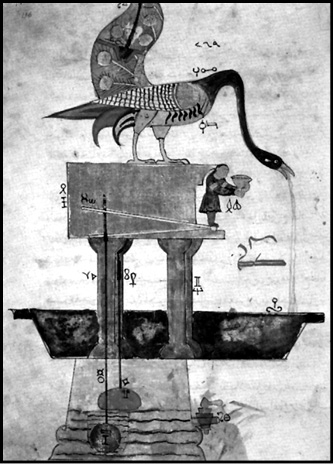
Kitab-ı Hiyel’den.
Artukoğulları’nın sarayında 32 yıl Reis’ül Amal (başmühendislik) görevinde bulunan Cezeri, Artuklu emirlerinden Nureddin Muhammed (1167) ve oğulları Kutbeddin Sökmen (1185) ile Nasüriddin Mahmud (1201) zamanında da saraydan ayrılmayarak çalışmalarını sürdürdü.
Sarayda bulunduğu dönemde bir robot yaparak Artuklu hükümdarı Mahmud bin Mehmed’e sundu. Kendi kendine harekete eden robotu hayranlık ve takdirle karşılayan Mahmud bin Mehmed, buluşlarını bir kitap haline getirmesini istedi. Bunun üzerine Cezeri de 50’den fazla cihazın kullanım esaslarını, yararlanma olanaklarını çizimlerle gösterdiği en önemli eseri olan ‘Kitab-ül-Cami Beyn El İlmi vel-Amel-in-Nafi fi Sınaat-il-Hiyel’ (Mekanik Hareketlerden Mühendislikte Faydalanmayı İçeren Kitap) adlı eserini kaleme aldı.
Sibernetik biliminin temellerini attı
Cezeri, en önemli çalışmalarını haberleşme, denge kurma ve ayarlama, insanlar ile makinelerde bilgi alışverişi ve kontrolünü sağlama gibi konuları kapsayan Sibernetik alanında yaptı. Bilgisayarın dayandığı sistemin ve sibernetik biliminin temellerini atan Cezeri, sibernetiğin babalarından sayılan İngiliz Nöroloji Profesörü Dr. Ross Ashby’nin 1951’de ‘Üstün Denge Durumu’nu ortaya atmasından sekiz yüz yıl kadar önce otomatik sistem kurmakla yetinmeyip, otomatik çalışan sistemler arasında denge kurmayı başardı.
Bilim Dünyasında Çığır Açan Eseri: Kitab-ı Hiyel
Cezeri’nin en önemli eseri, o güne kadar tasarladığı sibernetik ve elektronik sistemle ilgili robotları ve makineleri anlattığı kitabı ‘Kitab-ül-Cami Beyn-el-İlmi vel-Amel-in-Nafi fi Sınaat-il-Hiyel’dir. Kısaca ‘Kitab-ı Hiyel’ olarak da bilinen ve bugün beşi Türkiye’de olmak üzere on beş kopyası olan, Arapça kaleme aldığı bu eserinde, elli farklı aletin plan ve işleyişini anlattı. Bu aletler arasında otomatik cihazlar, kendi kendine öten tavus kuşları, robot filler, otomatik saatler, ele su döken robot insan ve insan ve mühendislikle ilgili birçok alet bulunmakta. İlk 4 kısmında 10, son 2 kısmında da 5’er şekle yer verdiği 6 bölümden oluşmakta olan kitapta, her aletin şeklini renkli mürekkeplerle çizen Cezeri, şekillerde Arap harfleri kullanarak bazı parçalar işaretledi ve açıklamalarının kolayca anlaşılması için metinde bunlara göndermeler yaptı. Bazı yerlerde ise bu Arapça harflerin ebcet hesabına göre değerlerini kullandı, bazılarında ise bugün hala anlaşılamamış olan gizli bir harf sistemini kullandı. Eserinde tasarladığı sistemleri ve mekanizmaları anlattıktan sonra bu aletlerin montajı ve nasıl çalıştırılacağı hakkında bilgi verdi.
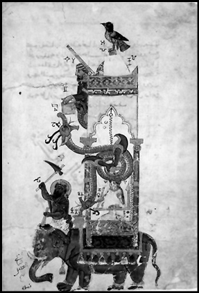
Kitab-ı Hiyel’den.
Eserde yer alan bütün şekilleri bizzat çizen, renklendiren ve yaldızlayan Cezeri’nin 6 bölümden oluşan kitabında kısaca şunlar yer almaktadır:
Birinci Bölüm: Cezeri, kitabının ilk bölümünde su saati, kadranlı su saati, saat-i müsteviye ve saat-i zamaniye hakkında 10 şekil vererek çalışmalarını anlatır.
İkinci Bölüm: Bu bölümde çeşitli kapların yapılışını, tasarladığı 10 şekille dillendirir.
Üçüncü Bölüm: Bu bölümde kan alınması (hacamat) ve abdest alınması ile ilgili ibrik ve tasların yapılmasını yine 10 faklı şekilde göstererek anlatır.
Dördüncü Bölüm: Bu bölümde havuzları ve fıskiyeleri anlatır.
Beşinci Bölüm: Bu bölümde derin olmayan bir kuyudan veya akan bir nehirden suyu yükselten aletleri tasvir eder.
Altıncı Bölüm: Kitabın bu son bölümünde birbirine benzemeyen 5 farklı makineyi ortaya koyar.
Cezeri’nin bu meşhur eseri, 1974 yılında Donald R. Rill tarafından İngilizceye çevrildi ve “Al Jazari’s Book of Knowledge of Ingenious Mechanical Devices” adıyla yayınlandı.
Buluşları ile çağına ışık tuttu
Cezeri’nin tasarladığı özellikle su ve kandil saatleri gibi aletler, çok karmaşık bir yapıya sahipti. O dönemde elektrik gücü, manyetik güç, foton etkisi veya elektromanyetik güçler olmadığı için Cezeri, aletlerini yerçekimi kuvveti, su gücü ve basınç tesirinden faydalanarak çalıştırıyordu.
Saatler: Cezeri, saatler hakkındaki sistemlerini aynı mil üzerindeki bir gösterge ve onun üzerinden ucuna ağırlık asılı bir kayış geçen kasnak biçiminde tasarladı. Ağırlığın düşüş hızı yüzen bir cisimle kontrol ediliyordu. Kayışın öbür ucuna bağlanmış olan bu cisim ve içinde bulunduğu kap ağır ağır boşaltılıyordu. Belirli süreler içerisinde içi su dolu bir kova devriliyor, devrilince bir mandala dokunarak dişlinin bir diş ilerlemesini sağlıyordu. Cezeri, mandal dişli, palanga ve kaldıraçlardan oluşan bu sistemde, bugün motorlu araçlarda kullanılan krank milini ilk defa kullanmış oldu.
Tavus Kuşu Saati: Cezeri, kitabının birinci bölümünde yukarıdakinden başka on farklı saatin nasıl yapıldığını gösterdi. Bunlardan en önemlisi ve göze çarpanı, cephesi 420 santimetre yüksekliğinde olan ve 3 diş içerisinde anne, baba ve yavru tavus kuşları bulunan “tavus kuşu saati”dir. Cezeri’nin bu saatinin işleyişi şu şekildeydi: Her yarım saatte bir, sabit seviyeli bir kaptan akan su kayık şeklindeki kaba doluyordu. Suyla dolan kap devriliyor ve bu şekilde boşalan su bir çarkın dönmesini sağlıyordu. Çark dönünce alttaki tavus kuşu da dönüyor, yavrular kavga etmeye başlıyor, üstteki anne tavus kuşu ise 180° geri dönerek eski yerine geliyordu. Boşalan kap tekrar dolmaya başlayınca kabın içerisindeki şamandıra yükselerek anne tavus kuşunu yavaş yavaş döndürüyor, anne tavus kuşunun gagası da böylece dakikaları gösteriyordu. Bu olay her yarım saatte bir tasarlandığından saatin ön yüzündeki on deliğin yarısının açılması yarım saatin geçtiğini gösteriyordu.
Fil Saati: Yine birinci bölümde anlattığı fil saati ise daha kompleks bir mekanizmaydı. Bu sistem de tavus kuşunda olduğu gibi her yarım saatte bir ejderhanın ağzına bir top düşüyor, bir filin üzerinde oturan adam bir sopa ile file vuruyor, elindeki sopa da saati gösteriyordu.
Aynı şekilde çalışan başka bir saat ise elinde tuttuğu bir balıkla karşısındakine bardak veren “balıklı adam” diye isimlendirilen bir robottu.
Hacamat Makinesi: Cezeri’nin tasarladığı diğer bir alet ise kan aldırırken, (hacamat) alınan kanın miktarını ölçmek için kullanılan bir aletti. Şamandıralar yardımıyla kan miktarının ölçüldüğü bu sistem, elinde çubuk tutan bir kadın simgesinin kanın hacmini göstermesi şeklinde çalışıyordu.
Cezeri’nin, bunlar dışında tasarladığı bazı aletler de şunlardır: Otomatik yüzen kayık ve çalgıcılar, Birbirine şerbet ikram eden iki şeyh, Dört çıkışlı iki şamandıralı otomatik sistem, İki bölümlü testi (termos), Otomatik su akıtma, İkramda bulunma ve kurulama makinesi, Su çarkı kepçe mekanizması, Motor-kompresör mekanizması, Su çarkı ve su dolabı.
Tasarladığı aletlerin büyük kısmı pratik faydalar içermekte olduğu gibi eğlendirme amaçlı aletler de tasarladı. İçinde su varmış gibi görünen ancak suyu boşaltılamayan su kapları ve boş gibi görünüp içinde su akıtan kaplar bunlardan bazılarıdır.
Cezeri, yapacağı aletlerin önceden kağıttan maketlerini inşa etmesi açısından da önemli çalışmalarda bulundu. Maketleri yaparken geometriden de faydalanan El Cezeri, ilk hesap makinesinden asırlar önce aynı sistemle çalışan benzer bir mekanizma da geliştirdi ve bunu bir saat tasarımında kullandı.
NOTLAR
- Tam adı Bediüzzaman Ebu’l-İzz İsmail Bin El Rezzaz El Cezeri’dir.
- Orijinali günümüze ulaşmayan ‘Kitab-ı Hiyel’in, bilinen on beş kopyasından onu Avrupa’nın farklı müzelerinde, beşi de Topkapı ve Süleymaniye kütüphanelerindedir.
- Leonardo Da Vinci’den yüz elli yıl önce yaşamış ve mekaniği ondan daha iyi kullanmıştır.
- Cizre’de doğmuş, Diyarbakır’da yaşamış ve Cizre’de vefat etmiştir. Mezarı da Cizre’dedir.
- Elektrik kullanmadan, sadece su ve mekanik parçalarla çalışan makineler yapmış ve günlük hayata geçirmiştir.
- Kitabında anlattığı su saatlerinden biri, Dünya İslam Festivali için Londra Bilim Müzesi’nde örneğe uygun olarak yapılıp çalıştırıldı.
- İTÜ Bilim ve Teknoloji Tarihi Enstitüsü, Cezeri’nin kitabındaki şekillerin aslına sadık kalarak, tavus kuşu su saatini yapmayı başardı.
Güneşi ‘yerine’ oturttu; kilisenin doğmalarını yıktı / KOPERNİK
(Nicolaus Copernicus)
(1473-1543)
“Tüm keşifler ve fikirler arasında hiçbiri,
Kopernik Doktrini kadar insanoğlunun
üzerinde etki uyandırmamıştır.”
Goethe
24 Mayıs 1543’te memleketi olan Polonya’da hayata gözlerini kapadığında, ailesinden geride kalanlara tam olarak ne bıraktığı bilinmiyordu; ama insanlığa oldukça önemli bir bilgi birikimi bıraktığı inkar edilemezdi. Astronomi için çarpan kalbinin şiddetine rağmen o, biraz da hayata karşı iddialı bir duruşu olmayışından olsa gerek, kendisine biçilen rollere razı olmuş, ömrünün hatırı sayılır bir kısmını, başpiskopos olan amcasının tesiriyle din adamı olarak görev yaptığı kilise duvarları arasında geçirmişti. Kasvetli kilise koridorları arasında turlarken dudaklarından dualar dökülse de, zihninde gezegenler ve onların ortasındaki güneş fink atıyordu. Bu arada kariyerinde sadece din adamlığı değil, aynı zamanda doktorluk ve hukukçuluk da vardı. İtalya’da tanışmış olduğu astronom Domenico Noworra, onun içindeki astronomi aşkının patlamasına yol açan kapıyı açmıştı.
Kopernik’i (Copernicus) bu kadar özel yapan neydi derseniz, cevabı gayet yalın olacaktır. O, uzay çalışmalarından asırlar önce, keskin gözlemleriyle bilediği zihnini adeta bir uydu yapıp uzaya fırlatmış ve dünyamızın, diğer gezegenlerle birlikte güneşin etrafında döndüğü fikrini ortaya atarak, tüm astronomi felsefesini temelinden sarsmıştı! Evet, Kopernik’in bu fırtınalar koparan tezi duyulmadan önce astronomi, daha çok, Aristo’nun (Aristoteles) ‘yerküre durağandır’ görüşü ile Batlamyus’un (Ptolemaios) ‘yerküre evrenin merkezindedir’ görüşünün ipoteği altındaydı. Üstelik bu teoriler neredeyse kilise tarafından bir doğma haline getirilmişti.
Bununla birlikte, dünyanın ve diğer gezegenlerin güneş etrafında döndükleri gerçeğini ilk fark eden Kopernik’in, bu tespitini dillendirmesi bir hayli zaman alacaktı; zira mensubu olduğu kiliseden çekiniyordu! Neden mi? Döneminin kabul gören din anlayışına göre İsa Peygamber güneşe sabit durmasını emretmişti ve güneş de buna itaat ediyordu. Aynı zamanda yerküre, bir tepsi kadar düzdü. Kilise destekli bu ‘bilimsel’ dogmaların aksini iddia edenlerin, cehennemi boylamayı, ondan önce de ateşte yakılmayı göze alması gerekiyordu ki; dediğimiz gibi Kopernik, zihnindeki kozmik fırtınalara rağmen, uysal bir kişiliğe sahipti. Öte yandan tam olarak fikirlerinden emin olamaması da, bunları kamuyla paylaşmasını, neredeyse ömrünün son demlerine kadar geciktirecekti.
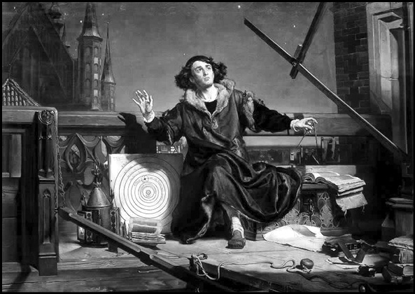
Ömrünün sonlarına kadar güneş sistemi ile ilgili yeni teorilerini dile getirmekten sakınan Kopernik’in, ölüme yaklaştıkça, üzerindeki çevre ve kilise baskısı azalmıştı. Yerleşik düzeni sarsacak olan fikirlerini dile getirdiği kitabının taslağını Papaya gönderirken yanına iliştirdiği mektubunda da şöyle diyordu: ‘Aziz Papa hazretleri, görüşlerimi okuyanların vakit geçirmeden reddedeceklerini biliyorum. Ömrüm boyunca etrafımdakilerin düşüncelerini dikkate almadan, fikirlerini sıkı sıkıya savunan biri olamamışımdır. Bilakis tepki alırım endişesiyle fikirlerimden geri adım atmaya niyetlendiğim de olmuştur. Yine de çekingenliğimi bastırarak, çalışmalarıma devam ettim…’ Foto: Jan Matejko’nun 1872 tarihli ‘Astronom Kopernik; Tanrı ile Sohbet’ isimli çalışması.
Kopernik, Güneş’i kainatın merkezine koyduğu teorilerini ilk olarak ‘Gökcisimlerinin Devinimine İlişkin Varsayımlar Üzerine Yorum’(Commentariolus, 1510-1514) adını verdiği kısa eserinde dile getirmiş; kitabını yakın dostlarına dağıtmıştı, ama teorilerini dile getirmesi zaman alacaktı. Kendisine bağlı bu din adamının, kainatın ‘kabul edilmiş’ temel prensiplerine kafa tutan yorumlarından Papa VII. Clemens’in haberdar olması ise, 1533’Te olacaktı. Kopernik’in görüşlerinden etkilenen Papa, görüşlerin kitap haline getirilmesine yeşil ışık yakacaktı. Bununla birlikte muhalefet harekete geçmekte gecikmedi. Hıristiyanlığın parlak isimlerinden Martin Luther, “Bu budala, astronomi bilimini karıştırma arzusunda. Oysa kutsal kitabımız bize dünyanın değil, güneşin döndüğünü söylüyor. Halkın bu çiçeği burnunda astrologa inanması olacak iş mi?” diyerek, yerkürenin astronomideki başrolünü sorgulayan Kopernik’e karşı bayrak açınca, Kopernik geri adım atmak zorunda kaldı ve bir süre daha görüşlerini kendine saklamaya karar verdi. Aralarında öğrencisi, Alman matematikçi Georg Joachim Rheticus’un da bulunduğu dostlarının telkini ile görüşlerini kitaplaştırmaya karar verirdi ve hazırladığı taslağı Rheticus eliyle 1540’da Nürnberg’e gönderdi. Lakin Luther’in başını çektiği reformcular yine sahneye çıkınca, Rheticus, taslağı din adamı Andreas Osiander’e bıraktı. Taslağı 1543’te, ‘Göksel Kürelerin Dönüşleri Üzerine’ (De Revolutionibus Orbium Coelestium) adıyla bastıran Osiander, Güneş’i merkeze yerleştiren ve oldukça kesin bir dil kullanan bu eserin çekebileceği tepkilere karşı tedbiri elden bırakmamış, imzasız bir önsöz yazarak, kitapta öne sürülenlerin, gezegenlere ilişkin hesaplamaları kolaylaştıran bir varsayım olarak ele alınması gerektiği notunu düşmüştü.
Milattan Önce 3. yüzyılda bugün Güneş sistemi olarak kabul ettiğimiz düzenin merkezinde dünyanın değil, güneşin yer aldığını öne sürüp, bağnaz çevrelerin baskısı ile susturulan Aristarcus isimli bilgin gibi, Kopernik’in açtığı bu kapıyı daha önce de zorlayanlar olmuş, ama içeri girmek, ona nasip olmuştu. Görüşleri kabul görmekte gecikmedi. Çünkü döneminin bir sürü düşünürü de, bilimsel ilerleyişi engellediğini düşündükleri dogmatik kainat sisteminin elden geçirilmesi gerektiğini düşünüyordu.
Güneş Sistemini asırlar önce fotoğrafladı!
O zaman için devrim kabul edilecek görüşler dile getiriyordu. Daha sonradan bunlar, ispatlanacakları ana kadar, Kopernik Teorisi olarak isimlendirilecekti. Peki Kopernik ne diyordu dersiniz; yine kendisine kulak verelim:
* Gök cisimleri aynı biçimdedir, ölümsüzdürler, daireseldirler.
* Evrenin merkezinde Güneş vardır.
* Güneş’in etrafında sırasıyla Merkür, Venüs, Dünya, Ay, Mars, Jupiter, Satürn ve diğer sabit yıldızlar dizilmiştir.
* Dünyanın günlük ve yıllık döngüsünün yanı sıra bir de yıllık eğimi vardır.
* Gezegenlerin doğudan batıya devinimi dünyanın hareketi ile izah edilebilir.
* Dünyadan Güneş’e olan mesafe yıldızlara olan mesafeye kıyasla küçüktür.
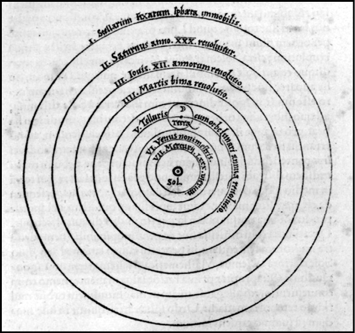
Kopernik sistemine göre; güneş sisteminin merkezinde güneş vardı, dünya da dahil olmak üzere tüm gezegenler belirli bir yörünge izleyerek hem güneşin hem de kendileri etrafında dönüyorlardı. Üstelik yeryüzünün ekseni de hareketliydi. Bugünkü çağdaş güneş sistemi bilgisini yaklaşık olarak açıklayan Kopernik’in teorisi, 1610’da Galileo’nun dürbünü icat etmesiyle doğrulanacaktı. Geliştirdiği teorisi ile felsefi bir devrim yaratan Kopernik, evren bilimi ile teoloji arasına bir çizgi çekmiş oldu. Foto: Kopernik’in heliocentrik (güneş merkezli evren) teorisini ete kemiğe büründürdüğü taslağı.
İnsanlığın uzaya çıkıp dünyaya dışardan bakmasına daha asırlar var ve Kopernik, keskin gözlemleri ve bilgisayar gibi çalışan zihni ile neredeyse güneş sistemimizin şu anki fotoğrafını çekiyor. Daha ne olsun!
Kopernik neyi değiştirdi?
Güneş’i merkeze taşıyan Kopernik bir çığır açmış, evrenin boyutları da tartışılmaya, sorular havada uçmaya başlamıştı. Mademki dünya güneşin etrafında dolaşıyordu; neden yıldızlar hep sabit kalıyordu? Kopernik buna, yıldızların bulunduğu kürenin (uzay boşluğu) dünyadan çok uzak olmasıyla açıklık getirince; evrenin daha önce sanıldığından çok daha büyük olduğu kabul edilmeye başlanacaktı.
Kopernik’in surda açtığı bir diğer gedik de, cisimlerin düşmesiyle ilgili idi. Kendisinden önce geçerli olan Aristocu öğretiye göre cisimler, ‘evrenin merkezi olan dünyaya’ doğru düşüyordu. Madem merkez yerküreydi, o halde öyle olması gerekiyordu. Ama Kopernik, öyle olmadığını ortaya koyunca, cisimlerin düşmesiyle ilgili yeni tartışmalar başlayacak, bu beyin fırtınaları, kendisinden yüz elli yıl sonra, Newton’un evrensel yerçekimi kavramını ortaya koymasıyla sonuçlanacaktı.
Kopernik’in yerkürenin yerine güneşi ikame etmesiyle değişen evren algısının felsefi yankıları da oldu haliyle. Yerküre, yaradılış inancının başrolünden indirilmiş, diğerleri gibi sıradan bir gezegen olarak kabul edilmeye başlanmıştı. Kopernik’in teorisini açıkladığı zamana kadar geçerli kabul edilen bu inanç sisteminde yarattığı sarsıntılar, kendisinden sonra gelecek alimler tarafından “Kopernik Devrimi” olarak isimlendirilecekti.
Peki büyük usta Kopernik neden güneşi merkeze almıştı derseniz, buna verdiği felsefe kokulu cevabı, gelin kendi ağzından dinleyelim: ‘Evrenin ortasında güneş taht kurmuştur. Bu görkemli tapınakta, çevresindeki her şeyi bir anda aydınlatan ‘güneş’ dediğimiz nur kütlesi için daha saygın bir konum düşünülebilir miydi? Bundan dolayıdır ki güneş bazıları tarafından evrenin lambası, bazıları tarafından beyni ve yine bazıları tarafından da yöneticisi olarak isimlendirilmişti.’
NOTLAR
- Kopernik’den önce, dünyanın güneş sisteminin merkezinde olduğuna ve güneş ve diğer gezegenlerin, onun etrafında döndüğüne inanılıyordu.
- Çağdaşları tarafından astronom olmasından ziyade, Frauenburg Katedrali’nin papazı ve doktor olarak tanınıyordu.
- İtalyan fizikçi ve astronom Galileo, 1600’lerin başında Kopernik Teorisini gündeme getirmek istemiş ama sapkınlıkla suçlanmıştı.
- Güneş merkezli teorisi ancak, ölümünden yaklaşık 100 yıl sonra kabul edilebildi.
- Teorisini dillendirdiği, Göksel Kürelerin Dönüşleri Üzerine (De Revolutionibus Orbium Coelestium) isimli eseri, sapkın olduğu iddiası ile Katolik Kilisesi tarafından 1835’e kadar yasak kapsamında tutulmuştu.
- Bugün kullandığımız takvim sistemi, Kopernik’in dünyanın ve gezegenlerin hareketi üzerine yaptığı çalışmalar sonucu şekillenmiştir.
- Papa II. John Paul, 1999 Haziranında Polonya’daki Kopernik Üniversitesi’ni ziyaret ederek, Kopernik’in bulgularını övmüş, dönemin Katolik kilisesi tarafından astronoma gösterilen tepkinin, yanlış olmakla birlikte, din ile bilim arasındaki uzun soluklu gerginliğin yansıması olduğunu ifade etmişti.
Farmakoloji ve İlaç kimyasının babası, isyankar ruh, modern tıbbın mimarı / PARACELSUS
(1493-1541)
“Bir gün gelecek, tıp dünyasını sarsacak ve
etkisi altına alacak üç şey olacak; beden,
hastalık ve bunu iyileştirecek olan ilaç.”
Paracelsus
Gözlerinden yansıyan ateşle bir canavarı andıran orta yaşlı adam, gerçek anlamda bir ejderha olarak da kabul edilebilirdi. Evet, kendince, eskiye; daha doğrusu, o güne dek devam etmiş olan eski tıp sistemine karşı savaş açmış, ağzından olmasa da zihninden çıkan alevlerle, eski düzene dair ne varsa yakıyordu. Elinde tuttuğu İbn-i Sina, Hipokrat ve Galen gibi büyük beyinlerin eserlerini, öğrencilerinin yaktığı ateşe atan bu adam, 16. yüzyıla damgasını vurmuş ve yaptıkları ile modern tıbbın kurucularının önde geleni olarak anılmaya hak kazanmış Alman bilim adamı Phillipus Theophratus Bombastus von Hohenheim’dan başkası değildi. Ama bizler onu, daha sık kullanılan adı ile Paracelsus olarak anacağız.
Yenisini kurmak istediği tıp düzeninin eski ustalarına ait kitapları ateşe atarak, tıptaki dogmalara savaş açtığını ilan eden Paracelsus, 1493’te Zürih yakınlarında doğdu. 20’li yaşlarında maden ocaklarında çalışmaya başladı. Bu dönemde simyacılığa ilgi duyuyordu. İlk hocası olan babası da doktordu. Üniversitede tıp okumak istiyordu ama akademik dünyayı, temsil ettiği geleneksel değerlerden dolayı sıkıcı buluyordu. Her şey ona banal geliyor, okulda aldığı geleneksel tıp eğitimi, zihninde kopan fırtınaları, öğrenmeye olan açlığını ve de yeniliklere olan iştahını dindirmiyordu. Viyana Üniversitesi’nde tıp eğitimini tamamladı. Ardından Ferrara Üniversitesi’ne gitti ve o dönemin ustalarının ve simyacıların kıyasıya eleştirildiği bir ortamla karşılaştı. Muhtemelen bu dönemde, kendisini simyacılıktan kimyagerliğe yönelten yolculuğuna başlamıştı. Ona göre simyacılar altın peşinde koşmaktansa, insanlara faydalı karışımlar üretmeliydi. Ferrara’da da fazla barınamadı ve değişik bilim merkezleri arasında mekik dokudu; nereye gitse sıkılıyordu. Sorun şuydu: öğretilenler fena halde demodeydi ve bir şeyler yapılması, tıpta yeni bir sayfa açılması gerekiyordu. İleride ‘çılgın’ olarak anılmayı göze alarak, o sayfayı açmayı kafasına koymuştu.
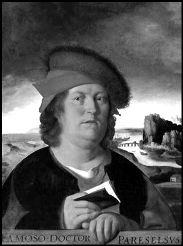
Osmanlı dönemi tıp alimlerinden ve saray hekimlerinden Bursalı Ali Münşi Efendi, Paracelsus’tan çok etkilenmiş ve Cerrahname isimli eserinde Paracelsus’un fikirlerine fazlasıyla yer vermişti.
Eski düzene savaş açan Paracelsus, günün tedavi şekline, otoritelerin tıbbi kuramlarına karşı çıkmış, isyankârlığı ile akademik çevrelerde sembol haline gelmiş ve tıp eğitiminde Latincenin hegemonyasına son vererek, derslerinde ve kitaplarında Almancayı kullanmıştı. Bu arada adını da değiştirmiş ve Celsus’dan daha üstün anlamına gelen Paracelsus takma adını almıştı. Kim bilir böylelikle belki de Milattan Önce 1. yüzyılda yaşamış Roma’nın ünlü tıp tarihçisi Celsus’a meydan okumak istemişti. Aralarında Osmanlı İstanbul’unun da bulunduğu birçok şehir ve ülke gezdi; değişik bölgelerde araştırmalar yaptı. Son nefesine kadar aykırı olmaktan vazgeçmedi. Aşırı eleştirel ve dobra tutumundan dolayı, gittiği hiçbir yerde iki yıldan fazla kalamadı. 48 yaşında, 1541’de Salzburg’da hayata veda ettiğinde, ardında İatrokimya (İlaç kimyası) gibi bir akım bırakmış ve zihinlerde tıbba dair ne varsa değiştirmişti.
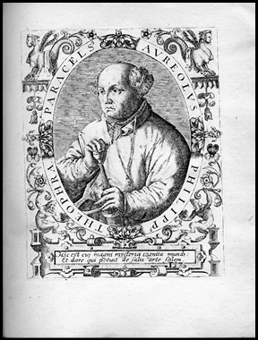
Peki neydi bu İatrokimya? Paracelsus’a göre bütün varlıkların temeli ortaktı. O vakitler revaçta olan inanca göre varlıkların ateş, hava, toprak ve su gibi dört temel elementten oluştuğu varsayılıyordu. Paracelsus, bunlara, Archidoxa isimli eserinde, ‘Öncelikli Üç’ (Tria Prima) olarak isimlendirdiği (Bazı kaynaklarda materia prima (öncelikli maddeler) olarak da geçer) tuz, cıva ve kükürdü de ekleyerek, bu elementlerin doğadaki, canlı ya da cansız, tüm varlıkların özünü oluşturduğunu savunmaya başladı. Öte yandan İbni Sina da, Paracelsus’dan asırlar önce, elementlerin kendine ait özelliklerinin olduğunu ve bunların birbirleri ile karıştırılması ile diğerlerinin elde edilemeyeceğini öne sürdüğü Transformasyon Teorisi kapsamında, cıva ve kükürdün iki temel element olduğundan bahsetmişti.
‘Cansızlar için geçerli olan canlılar için neden olmasın?’
Paracelsus’a göre ağır, akışkan ve uçucu özelliklere sahip cıva ruhu temsil ediyordu ve aşırı dozda alınması felce yol açabilirdi. Yanıcı özelliklere sahip olan kükürt ise yaşamı temsil ediyordu ve fazlası sıcaklığı arttırabilirdi. Çözünürlük öğesi olan tuz da bedeni temsil ediyordu.
‘Mademki öz olarak aynıdırlar, o halde aynı şekilde fonksiyon gösteriyor olmalılar’ diyen Paracelsus, o zamana dek sadece cansızlar üzerinde etkili olduğu ileri sürülen kimyasal ilkelerin, aynı zamanda canlılar için de geçerli olabileceğini savunmaya başladı. Özetle; ‘Her hangi bir canlı, kimyasal bir yapıya sahipse, bu canlıda meydana gelecek rahatsızlıklar da kimyasal kökenlidir. O halde bu rahatsızlığı yine kimyasal maddelerle düzeltebiliriz.’ diyor ve neredeyse bin 500 yıldır devam eden simyacılığın karşısına, İatrokimya’yı koyuyordu.
İatrokimya’dan hareket eden Paracelsus, bedenin fonksiyonlarını da aynı doğrultuda izaha girişti. Sözgelimi midenin işleyişi buna harika bir örnekti. Ona göre insan midesi, besinleri, ısıtıp, ıslatıp ve yaptığı bazı hareketlerle parçalayarak sindirmiyor, bizzat salgıladığı bazı sıvılarla besinleri kimyasal değişikliklere uğratıyor ve biz de bunu sindirim olarak isimlendiriyorduk. Paracelsus bu yaklaşımıyla ve ardından yaptıkları ile farmakolojinin de (ilaç bilimi) temellerini atmış oluyordu. Öncelikle hastalıkların tedavisinde kullanılması gereken ilaçların metaller, ametaller ve bunların bileşiklerinden oluşan saf maddelerden oluşması gerektiğine inandığı için bakır, cıva, kurşun, arsenik ve antimonu ilaç yapımında kullanmaya başlamış, dönemin ölümcül hastalıklarından frenginin tedavisi için cıva kullanılması gerektiğini öngören ilk isim olmuş ve içme suyundaki kurşunun guatr hastalığına yol açtığını ortaya çıkarmıştı. Aynı zamanda yine dönemin ölümcül hastalılardan vebaya karşı da, hasta dışkılarından aldığı parçalarla geliştirdiği haplarla tedavi geliştirmeyi başarmıştı.
Paracelsus’un kimyasal ilaç merkezli bu yaklaşımı birçok bilim adamını etkiledi. Ardından gelenler mide salgılarını inceledi. Bunlardan Flaman kimyager John Baptist van Helmont özellikle sindirim ve solunum sistemlerini incelemiş, karbondioksit gazını bulmuştu.
Paracelsus, Galileo, Descartes ve Steno gibi alimlerin kendisinden asırlar önce öne sürdüğü ‘fizik ilkelerinin canlı yapının açıklanmasında kullanılması’ yaklaşımını ele alarak daha da geliştirmiş, bu yaklaşım da iatrofizik olarak isimlendirilmişti. İatrokimya ve iatrofizik zamanla bir noktada birleşecek ve canlı ya da cansız bütün varlıkların özünün ve işlevlerinin birbirine benzediğini; fiziksel ve kimyasal olayları açıklamak için kullanılan prensiplerin biyolojide de geçerli olduğunu kabul eden mekanik okulun ortaya çıkmasında rol oynayacaktı. Bunun sonucu olarak mekanik okula tabi olan bilim adamları, canlı varlıkların da maddeler gibi, laboratuarlarda incelenebileceği fikrini savunmaya başlamış ve bu yol bizleri, deneysel yöntemin biyolojide, dolayısıyla da tıpta yaygın olarak kullanıldığı günümüz tıp ortamına taşımıştı.
‘Hekim her şeyi bilmelidir!’
Paracelsus, tıbbın sadece maddi boyutu ile değil manevi boyutu ile de ilgilenmişti. Ona göre, tıp ve cerrahi sadece bilimi değil aynı zamanda felsefeyi de göz önünde bulunduran bir bilim dalı olmalıydı. Tıp oldukça dinamik bir alandı ve her gün gelişiyordu, o halde hekimler de gözlerini dört açmalı ve bütün hastalıklar ve yaraların tedavisi üzerine kendilerini yetiştirebilmeli, her şeyi sorup öğrenmeliydi. ‘Doktor soru sormaktan utanmaz. Her şeyi Galen ve Hipokrat’ın eserlerinde bulamazsınız!’ diyordu. Modern tıbbın babasının cerrahlara da bir çağrısı vardı. Kendisinden asırlar önce yaşamış İbn-i Sina gibi o da cerrahi müdahalede anatomi bilgisinin elzem olduğuna dikkat çekiyor ve ‘İnsanın sadece bedeninin dışını bilmek olmaz, aynı zamanda, sinirlerinden kemiklerine varıncaya kadar, tüm içindekileri de bilmek zorundayız.’ diyerek, tüm cerrahların anatomi konusunda uzmanlaşmaları gerektiğini savunuyordu.
‘Bir şeyin zehir mi yoksa ilaç mı olduğunu dozajı belirler’
Zehir bilimi olarak bilinen toksikolojinin de altını kaldırıp baktığımızda yine aynı ismi görüyoruz: Paracelsus. Zehirli olarak bilinen elementlerin, dozuna göre bedene faydalı olabileceğini öne sürerek, aşırı tüketilmesi durumunda suyun bile insanı öldürebileceğini hatırlatan Paracelsus’un zehri tanımlarken kullandığı ‘Her madde zehirdir. Zehir olmayan madde yoktur; zehir ile ilacı ayıran dozdur.’ şeklindeki ifadesi, günümüzde modern toksikolojinin de çıkış noktası olarak kabul edilir.
Aynı zamanda vücuttaki kan, lenf ve safra gibi sıvıların dengesinin bozulması ile hastalıkların baş gösterdiği tezini savunan Hipokrat ve Galen gibi tıpçıların bu tezini de çürütmüş olan Paracelsus, buradan hareketle, kendisinin zehir olarak tanımladığı dış etkenleri hastalıkların gerçek sebebi olarak göstermiş ve bu zehirlere karşı geliştirdiği kimyasal tedavi yöntemleri ile deney, kimyasal ilaç tedavisi ve anatomi bilgisine dayanan günümüz tıbbının da temellerini atmıştı. İşte bu nedenledir ki, bir çoğumuz farkında olmasak da, hasta olduğumuzda derdimizi anlattığımız her doktor, aslında biraz da Paracelsus’tur…
NOTLAR
- İlaç kimyasının ya da daha sık kullanılan tabir ile farmakolojinin babası sayılır. Alkol gibi bazı terimleri Arapçadan aldığı söylenir.
- Cabir İbn Hayyan ve İbn-i Sina gibi İslam alimlerinin kendisinden asırlar önce geliştirdiği civa-kükürt kuramını benimsemişti.
- Döneminin geleneksel tıbbına başkaldırıp, eski alimlerin kitaplarını yakarken, ‘Sakalım sizden, sizin yazarlarınızdan daha çok bilir, ayakkabımın tokası Galen ve İbn-i Sina’dan daha alimdir’ dediği rivayet edilir.
- Felsefeyle de yakından ilgilendi. Felsefeyi, doğayı anlamanın aracı olarak görüyor, küçük evrenin büyük evrenin bir yansıması olduğunu savunuyordu.
- Deneysel tıbba inandığı için sürekli halkın arasında dolaşıp, özellikle berberler, ebeler, hamamcılar, çingeneler, falcılar ve cellatlarla arkadaşlık etti.
- Aşırı kendine güveni, etrafı ile sağlıklı ilişkiler kurmasını engellediği için sürekli sürgün hayatı yaşadı. Bununla birlikte deliliklerin şeytanla ilgisi olmadığını, beyin zedelenmelerinden meydana geldiğini ileri sürecek kadar da çağına göre öngörüsü yüksek bir alimdi.
- Osmanlı dönemi tıp alimlerinden ve saray hekimlerinden Bursalı Ali Münşi Efendi, kendisinden çok etkilenmiş ve Cerrahname isimli eserinde Paracelsus’un fikirlerine fazlasıyla yer vermişti.
Jeolojinin babası; madenlerin sihirbazı / GEORGIUS AGRICOLA
(1494-1555)
“Kendi gözümle görmediğim ya da güvendiğim
birinden duymadığım her şeyi inkar ettim.
Görmediğim ya da okuduktan ya da duyduktan
sonra dikkatle üzerinde düşünmediğim
hiçbir şey hakkında yazmadım da…”
Agricola
Ünlü Fransız kimyager Antoine Laurent de Lavoisier ile birlikte kimya bilimine en çok katkı yapan ve bu alanın isminin ‘simya’dan kimyaya dönüşmesini sağlayan isimlerden biri de Alman Georgius Agricola’ydı. Madenler üzerine yazdığı ve ölümünden sonra 1556’da yayınlanan Madenler Üzerine( De Re Metallica) adlı eseri asırlar boyunca madenciliğin ana kitabı olarak kabul edildi. İlginçtir, asıl eğitimini tıp üzerine almış olmasına rağmen, madencilik alanında yaptığı katkılar, o zaman daha doğum aşamasında olan metalürji biliminin temelini oluşturacaktı.
Agricola, 24 Mart 1494 yılında Almanya’nın Saxony eyaletindeki Erzgebirge bölgesinde bulunan Glauchau kasabasında boyacı ve yünlü kumaş yapımcısı bir babanın oğlu olarak dünyaya geldi. Asıl ismi George Bauer olan Agricola, ilk eğitimini Glauchau ve Magdeburg kasabalarındaki okullarda tamamladı. O dönemlerde üniversitelere girme yaşı 12 – 15 olmasına rağmen, 20 yaşına kadar herhangi bir üniversiteye girmemişti. Yirmisinde Büyük Zwickau Okulu’na girdi. Burada 2 yıl kaldıktan sonra 1506 yılında Leipzig Üniversitesi’nde Tıp Fakültesi’ne girdi. Burada dönemin ünlü hümanistlerinden olan Peter Mosellanus ile beraber çalıştı. Kimya, tıp ve fizik alanında dersler aldı. Bauer, 1515’te Leipzig’den mezun oldu. Ancak doktorluk yerine Yunanca öğretmenliği yapmaya başladı. Bu dönemlerde isimlerini Latinceleştiren bilim adamlarına uyarak George Bauer olan ismini ‘Agricola’ şeklinde değiştirdi. Agricola, Almanca’da çiftçi anlamına gelen Bauer’in Latince karşılığıydı.
Kendisine her konuda büyük destek olan hümanist dostu Mosellanus’un ölmesi üzerine, Latincesini geliştirmek ve eğitimini devam ettirmek amacıyla İtalya’ya gitti. 1524 – 1526 yılları arasında iki yıl kaldığı İtalya’da antik Yunan’dan kalma felsefe ve tıp alanındaki klasik eserleri okudu. Doğum yeri olan Erzgebirge’de bolca bulunan madenlerin tedavi amaçlı kullanabileceği düşüncesini, ilk kez burada antik eserleri okuduktan sonra edindi.
İtalya’da eğitimini tamamladıktan sonra 1527’de Zwickau’ya döndü ve Joachimsthal kasabasında doktorluk yapmaya başladı. Günümüzde Çek Cumhuriyeti sınırları içerisinde olan Joachimsthal’da en yaygın meslek dalı madencilikti. Bölgede bolca bulunan gümüş madeni işleniyordu. Buradaki madenciler, gümüşten yaptıkları paralara ‘thalers’ adını vermişlerdi. ABD’nin para birimi olan ‘dollar’ da bu isimden türedi.
On bin nüfuslu küçük bir kent olan Joachimsthal’da yaşayanların çok büyük bir kısmı sadece madencilikle ve onunla ilgili mesleklerle uğraşıyordu. Doktorluğu sırasında madenlere girip çıkan, madencilerden bu konuda birinci elden bilgi edinen Agricola, madencilik ve metalürji hakkındaki asıl çalışmalarına ve araştırmalarına burada başladı. Sahip olduğu filoloji ve felsefe bilgisi, onun sistematik bir düşünce yapısı oluşturmasına yardımcı oldu. İlk makalelerini 1728’de yayınlamaya başladı.
1530’da Saxony eyaleti Prensi Maurice tarafından resmi tarihçiliğe (vakanüvisliğe) atandı ve kendisine maaş bağlandı. Joachimsthal’den diğer bir maden kenti olan Chemnitz’e taşındı. 1533’de kent halkı tarafından kent doktoru olarak seçildi. Aynı yıl antik Yunan’ın ölçü birimlerini anlattığı ‘De Mensuis et Ponderibus’ adlı kitabını yayınladı. Koyu bir Katolik olmasına rağmen Protestanların yaşadığı Chemnitz’e belediye başkanı seçildi; ancak bu görevi kısa süreli oldu. Katoliklikle olan bağlantısından dolayı bu görevinden uzaklaştırıldı.
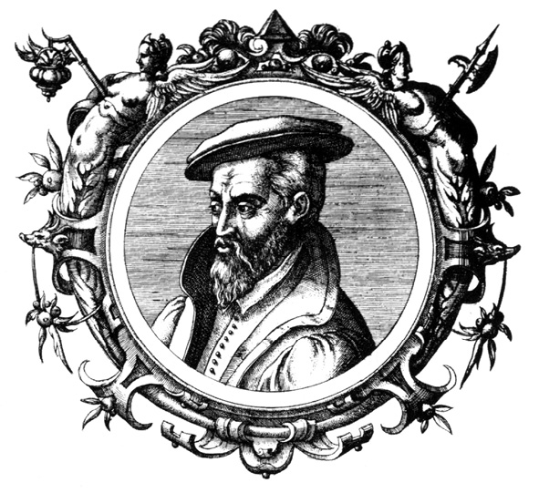
Georgius Agricola, yazdığı ünlü kitabı De Re Metallica ve diğer araştırmalarının yanı sıra paleontoloji bilimine de katkıda bulunduğu bir eser kaleme aldı.
Buradaki görevinden ayrıldıktan sonra kendisini, devrin akımlarından tamamen soyutlayarak öğrenmeye verdi. En büyük ilgi alanı hala metalürji idi; ancak tıp, matematik, teoloji ve tarih alanındaki araştırmalarını da sürdürdü. Georgius Agricola, 21 Kasım 1555’te Chemnitz’te yaşamını yitirdi. Ölümüne kadar da sıkı bir Katolik olarak kalan Agricola’nın, hayatını kaybetmesine yol açan, bir Protestan ile girdiği dini münakaşadan sonra geçirdiği kalp rahatsızlığı oldu. Kent halkı Chmenitz’e gömülmesine izin vermediği için elli kilometre uzaklıktaki Zeitz kentine gömüldü.
Metalürji Alanında Devrim: ‘De Re Metallica’
Agricola’nın en ünlü eseri ve madencilik ile metalürji alanındaki temel kitaplardan biri olan ‘Madenler Üzerine’ (De Re Metallica) adlı kitabı ancak ölümünden sonra 1556’da yayınlandı. Agricola, devrin ünlü hümanistlerinden Erasmus’un önsöz yazdığı, kardeşine adamış olmasından dolayı 1550’de bitirdiği tahmin edilen ve 200 yıl boyunca madencilik ve metalürji alanlarında çalışanların el kitabı olacak olan 12 ciltlik bu eserinde, dönemin madenlerinden, madencilik tekniklerinden ve sektörün en ince ayrıntılarından bahsediyordu. Maden ocaklarının yapımı, maden filizlerinin ocaklardan çıkarılması ve ocaklarda biriken suyun boşaltılması gibi konuların yanı sıra metal işletmeciliğine de değiniyordu. Temel olarak kimya ile değil metalürji ile ilgilenen Georgius Agricola, kitabında sadece çevresinde gördüğü madenlerden ve bu konuda edindiği izlenimlerden değil, ağaç filizlerinin kökenleri, erozyonun oluşumu ve önlenmesi gibi önemli konulardan da bahsetti. O dönemde bilinmekte ve işlenmekte olan madenlerin listesine yenilerini ekledi.
Kitaplarında yer verdiği ve bir çığır açan diğer bir konu ise madencilik ve endüstri alanındaki teknikleri yayınlaması oldu. Bu tür teknikler o zaman gizli tutuluyordu ve belli bir sınıf veya uzmanların dışında, halkın bunları öğrenmesine izin verilmiyordu. Bu yüzden Agricola, sadece Almanya’da değil tüm Avrupa’da yayılmasını istediği bu bilgileri içeren kitabını Latince yazdı ve bu eseri yaklaşık 200 yıl boyunca değerini yitirmedi.
Avrupa’da Orta Çağ sonlarına doğru kimyasal üretimin en önemli dallarından biri metalürji idi. Georgius Agricola da ‘De Re Metallica’ ile o zamana değin simyacıların sahip oldukları birçok yanlış bilgiyi değiştirdi. Kitabında özellikle deney yöntemini savunan Agricola, kitabına, nasıl maden inşa edileceğini gösteren ve kendisinin de uzun yıllar anılmasını sağlayacak resimler çizdi. Kitabında mineralleri topraklar, taşlar, katılaşmış özsular (tuzlar), metaller ve bileşikler diye sınıflandıran Agricola, ayrıca madenlerin ve minerallerin bulunabilecekleri yerler hakkında da bilgiler verdi. Kitabında çizdiği resimlerle cevher arama çalışmalarını anlattı, gizli maden yataklarının bulunması için çatal şeklinde bir değnek kullanılmasını tavsiye etti. Bu değnekler hakkında bilgi verirken de gümüş için fındık ağacından, bakır için dişbudak ağacından; kurşun, altın, kalay ve demir için ise köknar ağacından değnekler yapılmasını önerdi. Kitabında bugün hala madenlerde uygulanmakta olan bazı pompalar ve düzenekleri, yine resimler yoluyla anlattı. Denektaşı üzerinde derişik halde bulunan nitrit asit ile deneme yapma ve yirmi dört çeşit altın-gümüş alaşımıyla karşılaştırma gibi işlemleri en küçük ayrıntısına kadar verdi.
Tüm bunlara dayanılarak kimya teknolojisinin özgün yaratıcılarından biri olarak kabul edilen Agricola’nın anısına 1926 yılında Münih’teki Deutsches Museum’da “Agricola Derneği” kuruldu. De Re Metallica Almancaya çevrilerek 1935’te Düsseldorf’da yeniden basıldı.
De Re Metallica’nın İngilizce tercümesi ise ilk olarak 1912 yılında yapıldı ve Londra merkezli The Mining Magazine dergisi tarafından yayınlandı. Kitabın İngilizce tercümesi ise ünlü bir maden mühendisi olmasına rağmen daha çok, ABD Başkanlığı yapmış olmasıyla tanınan Herbert Hoover ve eşi Lou Henry Hoover tarafından yapıldı.
De Re Metallica, yakın zamanlarda ise dünyadaki madenlerin tüketilmemesi gerektiğini savunan ve tarihçi Carolyn Merchant’ın ‘doğanın ölümü’ diye tanımladığı ‘mekanik azalma’ isimli akım tarafından eleştirildi. Ancak Agricola, kitabında madencilik yoluyla ‘Dünya Ana/Doğa Ana’yı (Mother Earth) ihlal ettiği için kendisinden özür dilemişti.
Agricola’nın Fosil Bilimine Katkısı
Georgius Agricola, ‘De Re Metallica’ ve diğer araştırmalarının yanı sıra paleontoloji bilimine de katkıda bulunduğu bir eser kaleme aldı. 1546’da yayınladığı ‘Maden Bilimi’ (Natura Fossilium) adlı eserinde fosil kelimesini ilk kez ‘topraktan çıkarılan nesne’ anlamında kullanarak tarihe geçti. Daha önce Leonardo Da Vinci, toprak altında canlı kalıntıları bulduğundan bahsetmiş ancak bu bilgilere o zaman itibar edilmemiş; 1726’da Johannes Beringer adlı bilim adamı fosilleri, Allah veya şeytanlar tarafından insanın îmânını denemek için dünyaya yerleştirilen nesneler olarak betimlemiş ve çalışma sahası toprağın altı olan paleontoloji, ancak 20. yüzyıldan sonra ayrı bir ilim sahası olarak görülmeye başlanmıştı.
NOTLAR
- Avrupa’daki Rönesans bilimsel gelişmesinin öncülerinden biri oldu. Eserleri ile kendisinden sonra gelen jeologlara ilham verdi.
- Madenler üzerine yazdığı ve ancak ölümünden sonra yayınlanan ‘Madenler Üzerine’ (De Re Metallica) adlı eseri asırlar boyunca madenciliğin ana kitabı olarak kabul edildi.
- Devrin ünlü hümanistlerinden Erasmus’un önsöz yazdığı 12 ciltlik bu kitabı, dönemin madenlerinden, madencilik tekniklerinden ve onların en ince ayrıntılarından bahsetti.
- Bilginin, sadece Almanya’da değil tüm Avrupa’da yayılmasını istediğinden kitaplarının çoğunu Latince yazdı.
- De Re Metallica’nın İngilizce tercümesi 1912 yılında ABD eski Başkanlarından Herbert Hoover ve eşi Lou Henry Hoover tarafından yapıldı.
- 1546’da yayınladığı Natura Fossilium adlı eserinde fosil kelimesini ilk kez ‘topraktan çıkarılan nesne’ anlamında kullanarak tarihe geçti.
Gezegenlerin seyrüseferini inceleyerek güneş sisteminin mekanik dilini çözen, Kopernik’i doğrulayan ve Newton’a ilham veren büyük astronom / JOHANNES KEPLER
(1571-1630)
“Gezegenler birer mıknatıstırlar ve Güneş tarafından
manyetik bir güçle idare edilirler; sadece Güneş canlıdır.”
Kepler
Bilim dünyası, bugün astronomi alanındaki bilgilerinin önemli bir kısmını, bir bilim adamının ısrarlı arayışlarına borçludur. Hiç kimsenin inanmadığı bir dönemde Kopernik’in hipotezlerini doğru kabul ederek, onu geliştiren ve bugün tüm bilim dünyasının kabul ettiği evren sistemini bulan kişi olan bu bilim adamı, ünlü fizikçi Newton tarafından “Eğer o olmasaydı, daha ileriyi göremeyecektim.” şeklinde övülmüştür.
Dünyadan milyonlarca kilometre ötedeki sistemlerin, gözleri ile bizzat görüyormuşçasına, haritasını çıkaran bu kişi, çocukken görme duyusu zayıflamış ve elleri sakat kalmış bir bilim adamıydı! Özetle, bugün bir ilkokul çocuğunun bile kendinden emin bir şekilde dile getirdiği ‘dünyanın güneşin etrafında döndüğü’ gerçeğinin kabul edilmesinde en büyük pay, kahramanımız Johannes Kepler’e aitti.
Kepler’in, gerçeği bulma yolunda verdiği uğraşın bir benzerini göstermek güç olsa gerektir. Astronomiyi temelden değiştiren yasaları bulurken çektiği sıkıntıları, şu sözleriyle özetlemişti: “Sadece Mars’ın yörüngesini belirlemem beş yılımı aldı.”
Yoklukların göbeğinden bilime açılan kapı
Johannes Kepler, en büyük sırlarının çözülmesi yolunda büyük adımlar atacağı dünyaya geldiğinde, ailesinin de çözmesi gereken sorunları vardı. Hancı kızı bir anne ve paralı asker olan bir babadan Almanya’nın Württemberg kentinde 27 Aralık 1571’de doğduğunda, ailesinin kendisine verebilecek çok şeyi yoktu. Yokluğun getirdiği sıkıntılar içindeki ilk dört yılında geçirdiği çiçek hastalığı, Kepler’den çok şey götürdü. Hastalık, görme duyusunu zayıflattı ve ellerinin kısmen sakat kalmasına sebep oldu. Ancak sahip olduğu zeka ve öğrenme aşkı, ona küçük yaştan itibaren bilimin kapılarını açacaktı.
Küçükken tarım işçiliği de dahil olmak üzere pek çok işte çalışan Kepler, ailesi tarafından papaz okuluna yazdırıldı. Ancak zekâsını fark eden Württemberg Dükü’nün yardımıyla daha iyi bir eğitim aldı ve 1588 yılında Tübingen Üniversitesi’ni tamamladı. Yüksek lisans öğrenimini de aynı üniversitede sürdürerek 1591’de mezun oldu. Aynı dönemde Kopernik’in güneş merkezli evren sistemini savunan nadir kişilerden olan Michael Mästlin’in, Tübingen’deki astronomi derslerini takip ediyordu. Onun da zihninde sürekli gezegenler, yıldızlar dans esiyordu. Bu gizemli dünyanın sırlarını çözme aşkıyla yanıp tutuşmaya başladı. Ve hayatında önemli bir dönüm noktası niteliği taşıyan, Kopernik sistemini çalışmalarına temel olarak almaya karar verdi.
Papaz okulunda aldığı din eğitiminin de etkisiyle, Graz Protestan Okulu’nun, Tübingen Üniversitesi’nden matematik öğretmeni talep etmesi üzerine bu teklifi kabul etti. 1594’de astronomi alanındaki ilk ciddi araştırmalarına burada başladı.
Avusturya sınırları içerisindeki Graz Akademisi’nde öğretmenliğin yanı sıra araştırmalarına devam eden Kepler, profesörlüğe yükseldi. Henüz 25 yaşındayken 1596’da astronomi alanındaki ilk kitabı olan ‘Evrenin Gizlerini İçeren Matematiksel Araştırmaların Habercisi’ (Prodromus Dissertationum Mathematicarum Continens Mysterium Cosmographicum) yayınladı.
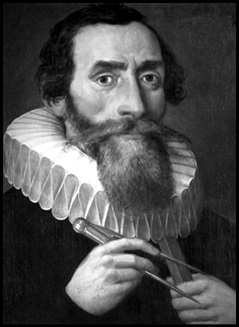
Gezegenlerin dairesel değil, elips şeklinde bir yörüngeye sahip olduğunu ortaya çıkararak insanoğlunun uzaya bakışını değiştiren bu eşsiz astronom, aynı zamanda astroloji ile de uğraşmıştı! 1602’de kralın astroloji merakına cevap verebilmek için Astrolojinin Kesin Dayanakları Üzerine (On the More Certain Foundations of Astrology) isimli bir kitap kaleme almış, astrolojiye ilişkin olarak da, “Her canlıya varlığın anlamını veren doğa, bir yardımcı olarak astrolojiyi armağan etmiş ve onu astronomi ile birleştirmiştir.” demişti.
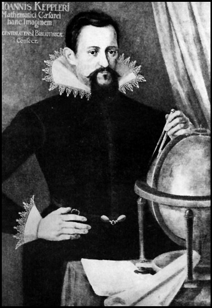
Evrende matematiksel bir uyum olduğuna inanan Kepler, ilk kitabında bu görüşünü temellendiriyordu. Kopernik’in teorisinde; her biri bir küre üzerinde dolanan altı gezegen vardı. Kepler, bu altı gezegenin üzerinde dolandığı kürelerin aralarında ‘Platon Cisimleri’ olarak bilinen beş düzgün prizmanın bulunduğunu öne sürdü. Kepler’in bahsettiği bu yetkin simetrik nesnelerin her biri, tüm köşelerinin dokunduğu bir küre içine yerleştirilebilirken, aynı şekilde her biri tüm yüzlerinin orta noktasına dokunan (teğet olan) bir daireyi çevreleyebiliyordu. İki boyutlu bir düzlemde istenilen sayıda çokgen şekil çizilebilirken, üç boyutlu uzayda ise sadece beş çok yüzlü düzgün nesne oluşturulabiliyordu. Bu beş prizma şunlardı:
Dört yüzlü (yüzleri dört eşkenar üçgen olan piramit), Küp (altı kare yüzlü), Sekiz yüzlü (sekiz eşkenar üçgen yüzlü), On iki yüzlü (on iki eşkenar beşgen yüzlü) ve Yirmi yüzlü (yirmi eşkenar üçgen yüzlü.)
Yazdığı ilk kitabı, ona büyük bir bilim adamı olmasını sağlayacak kapıların açılmasını sağladı. Kitabını dönemin ünlü astronomi uzmanlarından Tycho Brahe’ye gönderdi. Brahe, kitaptan etkilendi ve Kepler’e asistanı olmasını teklif etti. Kepler, bu teklifi kabul ettiğinde 29 yaşındaydı. İmparatorluk Matematikçisi Brahe’nin kendisine verdiği ilk iş, Mars’ı incelemek olmuştu. Ancak Tycho Brahe, bir yıl sonra öldü. Bunun üzerine Kutsal Roma İmparatoru II. Rudolf, Brahe’nin yerine Kepler’i İmparatorluk Matematikçisi olarak tayin etti.
Unvanı ile birlikte Tycho Brahe’nin astronomi alanındaki çalışmalarının ve gözlem kayıtlarının tamamı Kepler’e miras kalmıştı. Kepler, bu alandaki çalışmalarının büyük kısmını, daha önce Brahe’nin açtığı yoldan giderek, onun notları üzerinden sürdürdü. Ustasının notlarını, gözlemlerini ve eserlerini inceledi. Bütün bu çalışmalarını yaparken de Kopernik’in teorisini temel alıyordu. 1601’de ‘Astrolojinin Güvenilir Temelleri’ (De Fundamentis Astrologiae Certioribus) adlı ikinci kitabını yayınladı. Bu kitabında yıldızların, insanların yaşamlarını yönlendirdiği yolundaki inancı reddetmekle birlikte; insan ve evren arasında bir uyum olduğunu öne sürüyor ve astroloji ile ilgili önermelerde bulunuyordu.
Mars’ı incelemesi istendiğinde, uzaydan gelen ışınların yeryüzüne girdiğinde nasıl kırıldığı üzerine araştırmalarda bulunan Kepler, sonuçları 1604 yılında ‘Astronomideki Optik Konuların İncelenmesi Hakkında Vitellio’ya Ek’ (Ad Vitellionem Paralipomena Quibus Astronomiae Pars Optica Traditur) adlı kitabında yayınladı. Bu eserinde ışığın kırılmasından başlayarak sürdürdüğü çalışmalarının yanı sıra, insan gözünün yapısı ve nasıl çalıştığı hakkında da bilgiler veren Kepler, her ne kadar gözlük, o zaman için 300 yıldan beri kullanılmakta olan bir alet olsa da, bu eğri camların düzgün görmeyi nasıl sağladığını ilk açıklayan bilim adamı olmuştu.
Kepler, Mars, Satürn ve Jüpiter gezegenlerinin güneşin karşında aynı hizaya gelmelerini incelediği sırada, 1604 yılının Ekim ayında ortaya çıkan bir süpernovayı5 da 17 ay boyunca izleme şansı yakaladı. Antik çağdan bu yana, yıldızların, dolayısıyla gezegenlerin yer değiştirmediğine inanılıyordu. 1606’da yayımladığı ‘Yılancı Takımyıldızının Ayağındaki Yeni Yıldız’ (De Stella Nova in Pede Serpentarii) adlı kitabında gezegenlerin yer değiştirebileceğini ve hareket edebileceğini öne sürdü.
Kopernik ve Brahe’nin göremediğini gördü
Kepler, Brahe’nin notları üzerinde yaptığı incelemelerinin sonunda Brahe ve Kopernik’in o zamana dek göremedikleri bir sorunu keşfetti. Gezegenlerin güneşin çevresindeki yörüngesi, sanıldığının aksine daire şeklinde değil, elips şeklindeydi. Bilim dünyasında çığır açan bu kuramını, 1609’da 38 yaşındayken yayınladığı ‘Yeni Gökbilim’ (Astronomia Nova) adlı büyük eseriyle bilim dünyasına duyurdu.
Dönemin bir diğer önemli bilim adamı Galileo, 17. yüzyıl başlarında teleskopu keşfetti. Aynı alanda çalıştığı bilim adamının bu icadını inceleyen Kepler, teleskopun çalışma prensiplerini anlatan bir eser kaleme aldı ve 1610 yılında bu kitabı yayınlayarak Galileo’ya gönderdi. Ancak Galileo, bu çalışmayı önemsemedi. Bunun üzerine Kepler, “Eserimi çağdaşlarımdan veya gelecek kuşaklardan kimler okuyacak umurumda değil. Tanrı nasıl bunların öğrenilmesi için altı bin yıl beklemişse, eserim de okunmak için yüz yıl bekleyebilir.” açıklamasını yapacaktı. Hemen akabinde teleskop üzerine çalışmalarına başlayan Kepler, bilim dünyasına bırakacağı bir diğer önemli mirası, Kepler Teleskopu’nu geliştirdi. 2 yakınsak mercekten oluşan bu teleskopun büyütme oranı, Galileo’nunkinden daha yüksekti. Bu icadını 1611’de yayınladı ‘Kırılma’ (Dioptrice) adlı kitabıyla bilim dünyasıyla paylaştı.
Optik ve teleskoplar üzerine yazdığı Dioptrice ve Ad Vitellionem adlı eserleriyle, bu fizik dalının kurucusu olarak da kabul edilen Kepler, Kutsal Roma İmparatorluğu’ndaki iktidar çekişmelerinden de etkilendi. II. Rudolf’un tahtı bırakmaya zorlanması üzerine 1611’de Kraliyet Matematikçiliği görevinden ve Prag’dan ayrıldı. Her ne kadar Rudolf’un yerine geçen kardeşi, imparator olduktan sonra görevine devam etmesini istese de, bunu kabul etmeyerek Linz’e yerleşti. Burada yaşadığı on dört sene boyunca çalışmalarını aksatmadan sürdüren Kepler, 1619’da ‘Dünya’nın Uyumu’ (Harmonice Mundi) ve ‘Kopernik Astronomisinin Özeti’ (Epitome Astronomiae Copernicanae) adlı kitaplarını yayınladı. Dünyanın Uyumu’nda Kepler Yasaları’ndan üçüncüsü olan “Gezegenlerin Güneş’e olan ortalama uzaklıklarının üçüncü kuvveti, yörüngedi dolanma sürelerinin karesiyle orantılıdır.” kuramını ortaya koyuyordu.
1626’da ‘Rudolf Cetvelleri’ (Tabulae Rudolphinae) adlı eserini tamamladı; ancak aynı yıl içerisinde, Katolik olmaya ve ağır vergiler vermeye zorlanan köylülerin, ayaklanarak kenti kuşatmaları ve kentin bir bölümünü ateşe vermeleri yüzünden kitabını bastıramadan Linz’den ayrıldı. Kitabını 1627’de Ulm’da bastırabilecekti. Kepler, Rudolf Cetvelleri’nde Brahe’nin o güne kadar tespit ettiği ve incelediği 777 yıldızın üstüne 228 yıldız daha ekledi. Bu yıldızlardan bazılarının konumlarını birkaç derecelik açı kaymasıyla tespit etmeyi başarmıştı. Kepler, bu yüzden o dönemin ve dahi sonraki yüzyılın en geniş ve doğru içerikli eseri olan bu kitabında, ışığın atmosferde kırıldığı gerçeği göz önünde bulundurularak hesap yapılması gerektiğini savunuyordu. Bu gerçeği kullanarak yeni hesaplamalar yaptığı ve bu açıdan ilk katalog eser olma özelliğini de barındıran bu kitapta, logaritma cetvellerini de kullanmıştı.
Avrupa’yı kasıp kavuran 1618 ile 1648 yılları arasındaki Otuz Yıl Savaşları, bilimi de kötü etkiledi. Bu savaşlarda komutanlık yapmakta olan Friedland ile Zagan Dükü Albracht Von Wallenstein, 1628 yılında Kepler’i Zagan’a yerleşmeye davet etti. Daveti kabul eden Kepler, burada kendine ait bir basımevi kurdu. Ancak Zagan dükü Wallenstein’ın 1630’da imparator tarafından görevinden alınmasının ardından ailesini burada bırakarak Regensburg’a gitti. Burada kendisine 12 bin Florin borcu olan imparatorla görüşmeyi beklerken, geçirdiği ateşli bir hastalık sonucu, 15 Kasım 1630’da öldü. Son çalışması; bilim kurgu türünün ilk örneklerinden sayılan ve Ay’a hayali bir yolculuğu anlattığı kitabı ‘Düş’ (Somnium) adlı romanı, ancak ölümünden sonra, 1634 yılında ailesi tarafından yayınlandı.
Kepler Yasaları
Kepler, bilinen her şeyi kapsayan ve bunlar arasında mutlak bir uyum sağlayan bir sistemin var olduğunu düşünüyordu. Brahe’nin notlarını ve gözlemlerini inceledikten sonra gezegenlerin dairesel yörüngeler üzerinde ve muntazam hızla dolandıklarını öngören temel prensibi terk ederek, kendi adıyla anılan üç yasayı ortaya koydu.
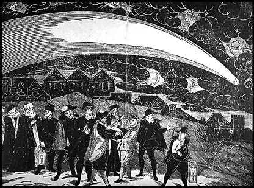
1577 yılında Avrupa semalarında kendini gösteren kuyruklu yıldız, birçok Avrupalı astronomla birlikte, o zamanlar henüz çocuk olan Kepler’i de fazlası ile etkilemişti.
Birinci yasa: Gezegenlerin yörüngeleri elips şeklindedir
Brahe’nin verdiği görevle ilk çalışmalarına Mars üzerine başlayan Kepler, gezegenin dönüşünü dairesel bir yörüngeye oturtmaya çalıştığında Mars’ın sadece iki kez bu yörünge üzerinde bulunduğunu; ancak diğer konumlarda Mars’ın yörünge içerisinde olduğunu belirledi. Bunun üzerine daire dışındaki eğrileri kullanmaya başladı ve Mars’ın, güneş etrafında bazen yavaş bazen de hızlı dolandığını keşfetti. Ancak dairesel bir yörüngede gezegenin hızının tüm konumlarda aynı olması gerekiyordu. Buna göre Mars’ın yörüngesi daire şeklinde değildi. Bunun üzerine Kepler, Mars’ın ve dolayısıyla diğer gezegenlerin yörüngelerinin eliptik olduğunu buldu ve ilk yasasını belirledi: “Yerküre de dâhil olmak üzere tüm gezegenler, odak noktasında Güneş’in bulunduğu bir elips yörünge üzerinde dolanmaktadırlar.”
Kepler bu ilk yasası ile o zamana kadar daire olarak bilinen gezegen yörüngelerinin elips olduğunu ortaya çıkardığından, daha önce buna göre yapılan hesaplamalardaki tüm sapmalar artık tamamen ortadan kalkmış oluyordu.
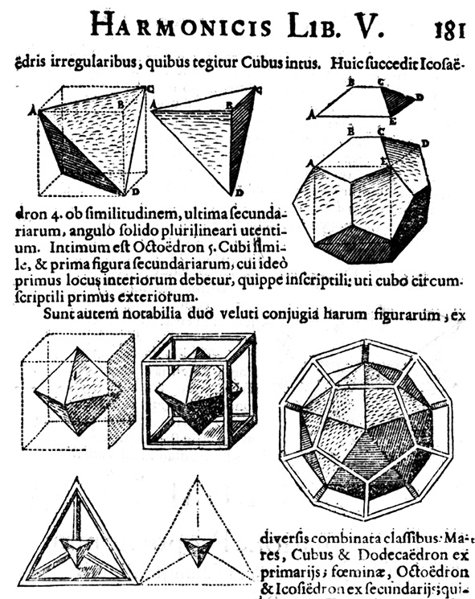
Kepler’in Kainatın Sırrı isimli eserinde kullandığı orijinal çizimleri.
İkinci yasa: Gezegenler, eşit zamanlarda eşit alanları tarar
Kepler’in eliptik yörünge kuramı, gezegenlerin bu yörüngelerde hangi hızla yol aldığı sorusunu da beraberinde getirdi. Buna göre yeniden yaptığı hesaplamalarda gezegenlerin, Güneş’e yakın olduklarında hızlı, uzak olduklarında ise yavaş hareket ettiklerini belirledi. Kepler, böylelikle gezegenlerin, eşit zamanlarda eşit alanları taradığı şeklindeki ikinci yasasını da böylece belirlemiş oluyordu: “Güneş’le gezegeni birleştiren doğru parçası, eşit zamanlarda eşit alanlar tarar.”
Üçüncü yasa: Gezegenlerin periyotlarının karelerinin, Güneş’e olan uzaklıklarının küplerine oranı birbirlerine eşittir
Kepler iki önemli yasasını 1609 yılında Yeni Gökbilim adlı eserinde yayınladı. Çalışmalarını sürdüren ünlü astronom, gezegenlerin periyotları (güneşin etrafında bir kez dönmeleri) ve uzaklıkları arasında da bir ilişki tespit etti. Armonik Yasa olarak da bilinen üçüncü yasa da böylece ortaya çıkmış oluyordu: “Bir gezegenin Güneş çevresindeki dönüş süresinin karesi, o gezegenin güneşe olan ortalama uzaklığının küpüyle orantılıdır. Bu oran her gezegen için sabittir ve r3/t2 değerine eşittir.”
Kepler üçüncü yasasını da 1619’da ‘Dünya’nın Uyumu’nda yayımladı. Bu yasası, Newton’un genel çekim yasasını bulmasını sağlayacaktı. Kepler’in bulduğu yanıtlar ve ortaya koyduğu yasalar, gezegen sistemiyle ilgili kuvvet yasalarının saptanması için kılavuz olmuş ve Kopernik’i haklı çıkarmıştı.
NOTLAR
- Kendine özgü bilimsel tutku ve dehası ile astronomiye modern niteliğini kazandırdı.
- Kopernik’in hayran olduğu Güneş’e adeta ‘taptı.’ Evrendeki tüm cisimlerin en yücesi, en büyüğü olarak Güneş’i kabul ediyordu.
- Newton buluşlarında kendisinin ortaya attığı yasalardan yararlanınca, öldükten sonra da olsa ‘Astronominin Prensi’ unvanını aldı.
- Gözün ve teleskopun çalışmasını inceleyerek kendi adıyla anılan teleskopu geliştirdi.
- Çağının çoğu bilim adamı, gökcisimlerinin dünyanın çevresinde döndüğüne inanırken, Kopernik’in Güneş’in merkez olup, dünya gibi gezegenlerin onun etrafında hareket ettiği kuramını temel aldı.
- Kopernik, güneşin merkezi konumunu matematiksel bir kuram olarak sunarken, kendisi bunu fiziksel bir gerçeklik olarak tanımladı.
- Yasalarını şekillendirmede kullandığı zor ve uzun matematik işlemlerini, hesap makineleri olmadığı halde, büyük bir yetkinlikle gerçekleştirdi.
- Bilim kurgunun ilk örneklerinden sayılan Düş isimli eserinde Ay’a yapılan bir yolculuğu anlattı.
- Uzayın derinliklerinin keşfedilmesinin kapılarını açan bu eşsiz bilim adamının mezarı, Otuz Yıl Savaşları’nın karmaşasında kayboldu.
Kalbin içine girdi; dolaşımın sırrını çözdü ve adını tarihe ‘kan’ ile yazdırdı / WILLIAM HARVEY
(1578-1657)
“Tüm vücudu besleyeni coşturan ve harekete geçiren ve bu
yönüyle ilahi olanın merkezinde bulunan kalp, gerçekten de
yaşamın temeli, tüm eylemlerin kaynağıdır.”
William Harvey
Servetus’un din alanında, Kopernik’in ve Galileo’nun astronomi ve fizikte, Antoine Lavoisier’in ise kimyada öncülüğünü çektiği devrimin tıp alanındaki kahramanı ise İngiliz William Harvey olmuştu. Harvey, antik Yunan’dan kalma yerleşik düşünceleri değiştirerek; kalp, kan dolaşımı ve embriyo konusunda yaptığı çalışmalarla tıp alanında yeni bir dönemin kapılarını aralayan isim olarak tarihe geçti.
Harvey’in bu başarıları elde etmesindeki en önemli etken, yerleşik düşünceye ve önyargılara karşı yürüttüğü deneysel mücadele oldu. İlk kez kadavralar üzerinde çalışma fırsatı bulan, hayvanların göğüslerini canlı canlı açarak ilk ‘açık kalp incelemelerini’ gerçekleştiren ve ilk kez dört günlük embriyolar üzerinde çalışmalarda bulunan Harvey, devrin otoriter düşünce yapısının da kırılmasına yol açmıştı. O bir tıp devrimcisiydi.
1 Nisan 1578’de İngiltere’nin küçük bir kasabası olan Folkstone kentinde doğdu. Babası bu kasabanın belediye başkanıydı. İlköğretimini Folkstone’da tamamladı. Arkadaşlarının kendisine ‘Nisan Balığı’ lakabını takarak dalga geçtiği Harvey, Canterbury Lisesi’ne girdi. 1593’te girdiği sınavlarla ünlü Cambridge Caius Koleji’ni kazandı ve burada edebiyat ile tıp alanında eğitim aldı. Altı yıl burada eğitim gördükten sonra Cambridge’den ayrıldı ve 1599’da tıp eğitimini tamamlamak üzere, dönemin tıp alanındaki ünlü isimlerinden Fabricius ile birlikte çalışacağı Padua Üniversitesi’ne girdi. 16. yüzyılda anatomi alanında söz sahibi olan Michael Servetus, Andreas Vesalius, Realdus Columbus ve Hieronymus Fabricius gibi isimlerin hepsi bu üniversitedeydi. Mezun olduktan sonra İngiltere’ye döndü ve Londra’da pratisyen hekim olarak çalışmaya başladı. Hastalarının arasında Francis Bacon gibi ünlü isimlerin bulunduğu Harvey, zamanla kazandığı başarılarla adından söz ettirdi.
1609’da Saint Bartolomew Hastanesi’nde doktorluğa başlayan Harvey, 1615’de de İngiliz Kraliyet Tıp Okulu’nun anatomi ve cerrahi kürsüsüne öğretim üyesi olarak atandı. Bir yıl boyunca burada eğitim görevlisi olarak çalıştı. Bu dönemde okunması güç bir el yazısıyla İngilizce ve Latince olarak yazdığı eğitim notları, bugün ünlü British Muesum’da sergilenmekte olan Harvey, ileride bir çığır açacağı kan dolaşımı konusundaki ilk tespitlerini de bu notlara kaydetmişti.
Başarıları, zamanla adının saraya kadar ulaşmasını sağladı ve 1618’de İngiliz Kralı I. James’in özel doktoru oldu. 1628’de en ünlü eserlerinden biri olan ‘Hayvanlarda Kalbin ve Kanın Hareketleri’ (Execitatio Anatomica de Motu Cordis Et Saguinis In Anibalibus) adlı kitabını yayınladı. Sarayda kendisine sağlam bir yer edinen Harvey, 1632’de Kral I. Charles’ın özel doktoru oldu. Kral tahtından feragat ettikten sonra Londra’da emekliye ayrılan William Harvey, 1657’de yaşamını yitirdi.
Peki bu tıp devrimcisi, tam olarak ne yapmıştı?
Adını ‘kan’ ile tarihe yazdırdı
Yaşadığı dönemin en önemli fizyologlarından olan William Harvey, özellikle kan dolaşımı ile ilgilenmiş ve bu alanda ortaya çıkardığı bulgularla tıp tarihine adını yazdırmıştı.
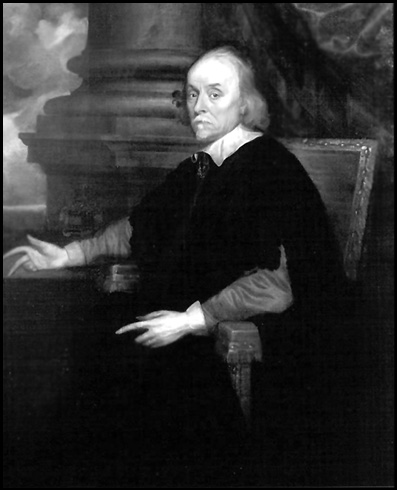
Shakespeare döneminin ünlü bilim adamı Harvey, saraya da oldukça yakın bir isimdi. Kral ve kraliçenin hemen yanı başında dönemin ünlü tiyatro oyunlarını izliyor, el üzerinde tutuluyordu. Tabi ki bunda Kraliçe’nin doktorunun kızı ile evli olmasının da payı büyüktü. Kendisi de sonradan, iki İngiliz kralının özel doktorluğunu yapacak olan Harvey, insanoğlunun o güne dek kalp ve kan üzerine bildiği her şeyi radikal bir şekilde değiştirecek, diğer bir deyişle vücudumuzdaki motorun sırrını çözecekti.
O devirde kimya, fizik ve astronomi gibi diğer birçok alanda olduğu gibi tıpta da antik Yunan döneminden kalma yerleşik düşünceler bilimin otoritesi konumundaydılar. Kan dolaşımı konusunda, Milattan Sonra 131 – 201 yılları arasında yaşamış olan Bergamalı Galen’in düşünceleri kabul ediliyordu. Yaşadığı dönemde Roma imparatoru Auerius’un özel doktoru olan ve anatomi alanında çalışmalarda bulunan Galen’e göre vücutta dolaşan kan, gittiği yerde emiliyor ve vücuda karışıyordu. Galen, yaşadığı dönemde insan vücudu ve kadavralar üzerinde çalışma yapması yasak olduğundan, çalışmalarını maymun, köpek ve domuz gibi hayvanların cesetleri üzerinde yapmak zorunda kalmıştı. Bu yüzden elde ettiği bilgiler hep eksik kalmış; hatta Rönesans döneminde kadavra üzerinde çalışma yapılmasına izin verilmiş olmasına rağmen, dönemin tıp âlimleri Galen’in çalışmalarını daha ileriye götürememişlerdi.
Galen’i aşmaya yönelik ilk girişimi Padua Üniversitesi’nden Andreas Vesalius gerçekleştirdi. O dönemde 23 yaşında olan genç Vesalius, çalıştığı üniversitede ceset çalışmalarını asistanlarına bırakan Rönesans döneminin bilim adamlarının aksine kadavra çalışmalarını bizzat kendisi yürüttü. Galen öğretisindeki yanlışları tespit eden Vesalius, bu bilgileri 1543’de yayınlanan ‘İnsan Vücudunun Yapısı Üzerine’ adlı eserinde aktardı. Vesalius, bu kitabında kalp septumunun (kalbi ortadan ikiye ayıran doku) çok kalın ve kaslı olduğunu da kaydediyordu.
Ancak Vesalius’un açmaya çalıştığı bu çığır, kendinden sonrakilerin bu çalışmaları sürdürmemesinden dolayı yarım kaldı. Vesalius ve Galileo gibi bilim adamlarını yetiştiren Padua Üniversitesi, Vesalius’un ardından yeniden Galen’in öğretilerini temel almaya başladı. İşte Harvey, Padua’ya geldiğinde antik Yunan döneminden kalma düşünceler hala otoritesini sürdürüyordu. Ancak Harvey, üniversitede öğrenimini sürdürdüğü sırada, belki de tıp alanında yeni bir sayfa açmasını sağlayacak bir olay gelişti. Deney ve gözleme fazla önem verilmeyen bir dönem olmasına rağmen, devrin idarecileri, idam edilen iki kişinin cesetleri üzerinde inceleme yapılmasına izin verdi. Harvey, bu cesetler üzerinde yaptığı incelemelerle kalp ve kan dolaşımı konusundaki çalışmalarını daha da ileri götürerek, ilk kez canlı hayvanlar üzerinde çalışmalar gerçekleştirdi. Böylelikle kalp ve kan dolaşımı konusunda bir devrim başlamasını sağladı.
Harvey, Galen’in teorisinin temelsiz olduğunu savunuyordu. Ona göre eğer kan dolaşımı gerçekten onun dediği şekilde gerçekleşiyor olsaydı, yeni kan elde edilmesi için insanların durmaksızın yemek yemesi gerekecekti. Böyle bir şey söz konusu olamayacağı için de kanın kalbe geri dönmesi gerekiyordu.
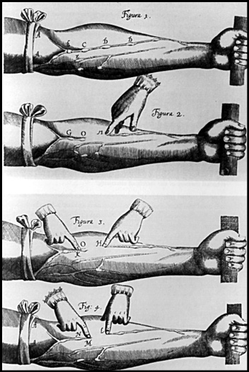
Harvey’in kan dolaşımı deneyini tasvir eden bir tasarım.
Harvey, hayvanlar ve kadavralar üzerindeki çalışmalarında kalbin yapısını, kan dolaşımını ve kapakçıkları ile ven kapaklarını inceledi. Araştırmalarında kanın akışının tek yönde olduğunu ve damarların kanın akışına tek yönlü geçit verdiğini tespit etti. Bu geçitler ‘çek-bırak’ işlevi gören kanatlarla donatılmıştı. Bu kanatlar, kanın atar damarlar vasıtasıyla vücuda dağılmasını, toplardamarlar yoluyla da kalbe geri dönmesini sağlıyordu. Harvey, sonuç olarak bugün büyük kan dolaşımı olarak bilinen, kanın kalbin sol karıncığından aort damarı ile çıkıp bütün vücuda yayılması ve toplardamarlar vasıtasıyla kalbe geri dönmesi şeklindeki kan dolaşımını tespit etmiş oldu.
Harvey’in diğer önemli çalışması ise bizzat kalbin kendisiyle ilgiliydi. Yerleşik düşünceye göre kalpte iki farklı sistem olduğu varsayılıyordu. Damarlardaki kanın mavi, arterlerdekinin açık kırmızı olmasının sebebi de bu iki sistem olarak gösteriliyordu. Galen’in düşüncelerini kabul edenler, ince gözenekli bir doku olan septum sayesinde bu iki kan sistemi arasında geçiş olduğunu düşünüyorlardı. Ancak Harvey, septumun hiçbir şekilde geçişe veya sızıntıya olanak tanımayan bir yapıya sahip olduğunu keşfetti. Harvey’e göre kalp ‘içi boş bir pompa’ gibi çalışıyordu. İç boşluğu daraldığında kan kalpten dışarıya çıkıyor, kaslar gevşediğinde ise kan genişleyen bu iç boşluğa dönüyordu. Kalbin bu kasılma hareketleriyle atar damarların, kan taşıma dışında nabız atışı verdiğini de keşfeden Harvey, bu şekilde damarların taşıdığı kanın miktarını da ortaya çıkardı. İlk yaptığı hesaplamalarda kalbin her atışta otuz gram kan pompaladığını belirledi. Bu rakam, kalp bir dakikada 72 kez attığı varsayıldığında dakikada 5 litreye, günde 6 bin 200 litreye denk geliyordu.
Harvey’in araştırmaları sonucunda değiştirdiği diğer bir yanlış düşünce de, kan akışını sağlamak için kalple birlikte arterlerin de genleştiği inancıydı. Kan dolaşımı hipotezinin doğrulanması ancak mikroskobun icadıyla oldu. İtalyan bilim adamı Malpighi, 1661’de kurbağaların akciğerlerinde mikroskopla yaptığı incelemede atar damarlarla toplardamarların, kılcal damarlar aracılığıyla birbirine bağlı olduğunu keşfedecekti.
Harvey, kan dolaşımına ilişkin araştırmalarını 1628’de Latince yazdığı ‘Hayvanlarda Kalp ve Kan Dolaşımına İlişkin Anatomik Bir Tez’ adlı kitabında yayınladı. Embriyoloji hakkında çalışmalarda da bulunan bilim adamı, ceset ve hayvanlar üzerinde yaptığı çığır açan çalışmalarına, dört günlük embriyolar üzerinde yaptığı incelemeleri de ekledi. Araştırmalarının sonunda ‘bir canlının ancak başka bir canlıdan meydana gelebileceği’ sonucuna ulaşan Harvey’in 1651’de yayımladığı embriyoloji alanındaki ikinci kitabı, Antik Çağ’dan sonraki iki bin yıllık dönemde, bu alanda yapılan en önemli incelemeydi. Kalp ve kan dolaşımı konusundaki bulgularıyla Galen’in otoritesine meydan okuyan Harvey, embriyo alanındaki çalışmasıyla da Aristo’nun‘canlıların kendinden üreme ile çoğalabileceği’ şeklindeki düşüncesini ortadan kaldırıyordu.
NOTLAR
- Arkadaşları onunla, “Nisan Balığı” lakabını takarak dalga geçti.
- Francis Bacon gibi ünlü isimlere doktorluk yaptı.
- İngiliz Kraliyet Tıp Okulu’nun anatomi ve cerrahi kürsüsünde öğretim üyesi iken okunması güç bir el yazısıyla İngilizce ve Latince olarak yazdığı eğitim notları, bugün ünlü British Muesum’da sergilenmektedir.
- İngiltere’nin iki kralına özel doktorluk yaptı.
- Kan dolaşımı konusunda görüşleri temel alınan Bergamalı Galen’in (M.S. 131 – 201) düşüncelerini kökten değiştirdi.
- İlk kez kadavralar üzerinde çalıştı ve canlı hayvanların göğüslerini açarak kalplerini inceledi.
- Atar damarların kan taşıma dışında nabız atışı verdiğini keşfetti.
- İlk kez embriyolar üzerinde araştırma yaparak, 4 günlük embriyoları inceledi.
- Araştırmalarının sonunda ‘bir canlının ancak başka bir canlıdan meydana gelebileceği’ sonucuna ulaştı.
Yerçekiminin teorisyeni; modern fiziğin babası / ISAAC NEWTON
1642-1727
“Dünya beni nasıl görüyor bilemem; ama ben
kendimi, henüz keşfedilmemiş gerçeklerle dolu bir
okyanusun kıyısında oynayan, düzgün bir çakıl taşı
ya da güzel bir deniz kabuğu bulduğunda
sevinen bir çocuk gibi görüyorum.”
Newton
27 yaşında Matematik profesörü olması günümüz şartlarında şaşırtıcı olsa da, kendisini tanıyanlar için bu olması gereken, hatta olmaması durumunda şaşırtıcı olabilecek bir şeydi! Zira söz konusu kişi, daha küçük yaşlardan itibaren kafayı gezegenlerin hareketlerine takan, ilk aynalı teleskopu geliştiren, renk ve ışığın niteliklerine dair sarsıcı açıklamalar yapan ve her şeyden önemlisi de, yerçekimi olarak bildiğimiz evrensel kütle çekimi yasasını ortaya atan Isaac Newton ise, her şey mümkündü! Neden mi? Zira, o güne kadar şaşkın gözlerle kavranmaya çalışılan fizik, onun oyuna girmesi ve yaptıkları ile birlikte; büyük bir doğruluğa dayanan matematik kanunları ile açıklanabilir bir bilim olmuştu. Newton, doğduğunda bilimsel devrim çoktan başlamış da olsa, bulgularıyla modern fizik biliminin temel entelektüel enstrümanlarını oluşturmuştu.
Her ne kadar popüler bilim tarihinde ‘kafasına elma düştüğü için yer çekimini bulan adam’ olarak anılsa da, kazın ayağı hiç de öyle değildi. Zira onun kafasına elmalar düşmeden önce de yer küre, kütleleri kendine çekiyordu. Kaldı ki kafasına elma düşmesi hadisesi de, masumane bir şekilde bilimin halk diline indirgenmesi çabasından başka bir şey değildi. Zaten, sıklıkla dile getirildiği gibi, yer çekimini bulmamış, zaten var olan bir şeyin temel prensibini ortaya koymuştu!
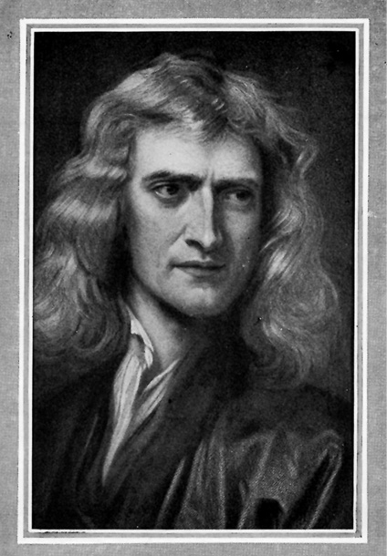
Daha önceki dağınık ve kopuk haldeki çalışmalar Newton’un katkısıyla kuramsal bir sisteme oturmuştu. Fizik (evrensel çekim yasası ve optik), matematik (türev ve integral hesapları) ve astronomi (gök mekaniği) alanlarında çalışan Newton, henüz 26 yaşında iken matematik profesörü olmuştu.
Yaşadığı dönem zor bir dönemdi ve Newton da bu zorluktan payına düşeni almıştı. Genç yaşta yetim kalması, hayata tutunmak için yapılmak zorunda kalınan farklı işler, ardından veba salgını gibi üst üste yaşanan sıkıntılara rağmen akacak bilim kanı damarda durmayacaktı ve durmadı da. Nefes kesen bilim yolculuğuna erken yaşta başladı. Zaten okulda tuttuğu not defterlerinden birine “Platon benim arkadaşım; Aristo benim arkadaşım; ama en iyi arkadaşım gerçek.” notunu düşen birinden de farklı bir şey beklenemezdi.
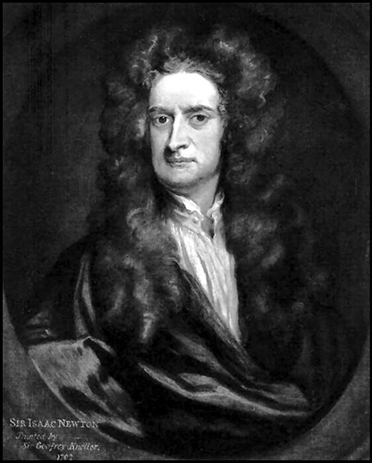
Kendisinden önce gelen Kopernik, Kepler, Galileo gibi alimlerin buluşlarını disipline etmesi ile sivrilen Newton sadece yer çekimi kavramının mimarı olmakla kalmamış, aynı zamanda, sonsuz küçükler hesabını bularak, matematikte de çığır açmıştı. Mekanik, hidrodinamik, optik ve matematik gibi dallarda yaptığı çalışmalarla insanoğluna yeni pencereler açmış, eşsiz eseri Principia’da güneş ve gezegenlerin kütlelerinin hesaplanmasından, sıvı ve gezegenlerin hareketlerine, yine ayın hareketlerinden gel git olaylarına varıncaya kadar onlarca konuya ışık tutmuştu.
Optik üzerine çalışmaları
Henüz öğrenci iken İngiliz fizikçiler Robert Boyle ve Robert Hooke’un optik ve ışık üzerine yaptığı çalışmasını, Fransız matematikçi ve düşünür René Descartes’ın matematik ve fizik notlarını okumuş ve onlardan aldığı ilham ile prizma sahnesinde ışıklara dans ettirmiş; o meşhur prizmalı ışık kırılması deneylerinden hatırladığımız üzere; yaptığı çalışmalarla, farklı renklerin farklı açılarda kırıldığını ortaya çıkarmıştı. Bu çalışmaları ile beyaz ışığın, diğer renklerin ışınlarından meydana geldiğini ortaya koymuş; ışığın, çok hızlı yol kat eden parçacıklardan oluştuğu sonucuna varmıştı. Aynı zamanda uzayın da bu parçacıklarla dolu olduğunu savunuyordu. 1704’te kaleme aldığı, ışık dünyasını masaya yatıran ‘Işık Bilimi’ (Optics) isimli eseri, bu alandaki en büyük referans kaynağı olacaktı. Lakin ışığa ve optiğe olan ilgisi bununla sınırlı kalmadı. Aynı dönemde mercekleri de elinden düşürmeyen Newton, aynalı bir teleskop da yaptı. Tüm ışığı aynı anda yansıtan parabol biçimli bir ayna ile görüntü bozukluklarının önüne geçen Newton, bu icadının getirdiği prestijin keyfini çıkartacaktı.
Türev ve integral
1661’de girdiği Trinity College’e 1667’de öğretim görevlisi olarak geri dönerek matematik üzerine yoğunlaşmıştı. Bir zamanlar matematik hocası olan Isaac Barrow, döneminin önde gelen matematikçilerinden biriydi ve geometri derslerindeki alan hesaplamalarında kullandığı yöntemler, Newton’un içindeki matematik canavarını ortaya çıkardı. Türev ve İntegral hesaplarının temellerini böylelikle atan Newton, büyük fizikçilerden Berkeley’in, “Diferansiyel ve integral, her kapıyı açar. Bu sihirli anahtar sayesinde matematikçiler, geometrinin, dolayısıyla da doğanın sırlarını keşfetmiştir.” diyerek hakkını teslim ettiği şekilde, bilim tarihinin önde gelen üç matematikçisinden biri oluyordu. Lakin ilginçtir; bu katkısını açıklaması 38 yıl sürecekti.
Yaratıcı gücünün en son noktası
1696’ya kadar ders verdiği Cambridge’deki yıllarını ‘yaratıcı gücünün en yüksek noktası’ olarak tanımlayan Newton, haksız da sayılmazdı. Bu zaman diliminde üzerinde nerdeyse iki yıl kadar kafa patlattığı Doğal Felsefenin Matematiksel Prensipleri ya da yaygın olarak bilinen şekli ile Prensipler- Principia (Philosophiae Naturalis Principia Mathematica) ile fiziğe ilk unutulmaz katkısını yapıyordu. Ama kendi içinden! Zira bu eserini nedense, 1687’ye kadar raflarda tutacaktı. 1714’e gelindiğinde kıta Avrupa’sına görece bir barış havası hakimdi ve Newton, bu dönemin en saygın doğa felsefecisi olarak sahnedeydi.
Fiziğin Maradona’sı: F = G ((m1m2)/r2)
Newton’u, tabiri caiz ise, fiziğin Maradona’sı yapan katkısı, çekim kanunlarını adeta baştan yazmasıydı. Daha önce Aristo ve Galileo de bu meseleye kafa yorup, fiziğin bu alanının temellerini atmışlardı, lakin, gök mekaniği ile ilgili çözümlenmemiş sorular da ortada duruyordu. Galileo ‘eylemsizlik ilkesi’nin fikir babası olarak büyük sükse yapmıştı ama gök cisimlerinin hareketleri arasındaki tezadı açıklayamamıştı. Bu ilkeye göre; kendi haline bırakılmış bir cisim, herhangi bir dış güce maruz kalmadığı sürece, o halini korur. Diğer bir deyişle; hareketsiz cisim harekete geçirilmedikçe sonsuza kadar hareketsiz kalacağı gibi, hareket halindeki bir cisim de, dışardan bir müdahaleye maruz kalmadığı sürece hareketini devam ettirecek, düz bir hat üzerindeki sabit hareketini koruyacaktır. İyi ama o zaman neden gezegenler sabit bir hat üzerinde ilerlemek yerine, diğer bir deyişle, güneşten uzaklaşmak yerine, dairesel hareketler çiziyorlardı? İşte bu sorunun cevabını, Galileo’nun öldüğü gün doğan Newton veriyordu. Sihirli kelime; çekim idi! Bir taşın (ya da elmanın) yere düşmesine neden olan neyse, bu, aynı zamanda gezegenleri de güneş etrafında tutuyordu. Gezegenlerin güneş etrafında döndüğünü ilk öne süren Kopernik de bu dairesel dönüşe açıklık getirememişti. Gerçi bunu ilk dillendiren Newton değildi; söz gelimi Fransız astronom İsmail Boullian 1645’te, iki cisim arasında bir çekim olabileceğini, 1666’da da İtalyan Giovanni Borelli, bir uydunun merkezkaç kuvvetinin, uyduyu gezegene doğru çeken kuvvetle eşit olduğunu öne sürmüştü ama tüm bu bilgilere yasa elbisesi giydiren Newton olacaktı. Böylelikle F = G ((m1m2)/r2) olarak bilinen, evrendeki hareketleri disipline sokan, evrensel çekim yasasına imzasını atıyordu.
Bu yasa ile birlikte gezegenlerin, daha geniş manada, gökcisimlerinin manevraları anlaşılmış, hatta ünlü astronom Halley, bu yasa sayesinde 1531, 1607 ve 1682’de kendisini gösteren ve her defasında farklı bir yıldız olduğuna inanılan, kuyrukluyıldızın aynı yıldız olduğunu öne sürmüş, Aralık 1758’de tekrar ortaya çıkacağını iddia etmiş, son tahlilde de haklı çıkmıştı.
Sonuç olarak Newton, eylemsizlik ilkesini de işin içine katarak, meşhur hareket kanunlarını bilim dünyasına armağan etmişti. Buna göre;
Herhangi bir cisim üzerine bir kuvvet etki etmiyorsa, ya da etki eden kuvvetlerin bileşkesi sıfırsa, cisim durumunu değiştirmez; yani duruyorsa durur, deviniyorsa yani hareket ediyorsa, devinimini bir doğru boyunca devam ettirir. Ki buna eylemsizlik kanunu da denebilir.
Cisim üzerindeki itiş gücü, uygulanan kuvvetle doğru orantılıdır ve kuvvet yönündedir. Cismin momentumunun zamana göre değişiminin oranı, cisme uygulanan kuvvetle doğru orantılıdır.
Doğadaki bütün cisimler birbiri ile etkileşim içindedir. Bir cisim diğer bir cisme bir kuvvet etki ettirdiğinde, diğer cisim de bu cisme bir kuvvet etkiler. Herhangi bir etkiye karşı her zaman bir tepki vardır; yada iki cismin karşılıklı etkisi daima eşit fakat zıt özelliklidir. Buna kısaca etki-tepki kanunu da denir.
Gücü düşüncesinde yatıyordu…
Newton, bu kanunları ile temeli Aristo’ya kadar uzanan yaklaşık iki bin yıllık fizik kuramlarına mekanik bir boyut katmış, Galileo’nun mimarı olduğu eylemsizlik ilkesini, kütleyi de hesaba katarak, soyuttan somuta taşımıştı. Bu, aynı zamanda yer çekiminin de birinci yasası olacaktı. Büyük usta, kuvvet, kütle gibi kavramları hayata geçirerek, fiziğin o zamana kadar yakasından düşmeyen belirsizlikleri de ortadan kaldırmış oluyordu.
Her ne kadar bazı hesaplamaların içinden çıkamayınca kendi formüllerini haklı çıkartan ve ilerleyen yıllarda yanlışlığı tespit edilen bir takım varsayımlar geliştirmiş olsa da, başarılarının yanında bunların esamisi bile okunmayacaktı.
Bilim tarihi, matematik, mekanik, yerçekimi ve optik gibi alanlarda büyük sıçramalar yapan bilim adamları ile doluydu. Newton ise, bu alanların her biri ile ayrı ayrı uğraşıp, adeta destan yazmış; kendisinden iki yüz yıl sonra gelerek fizikte bir başka çığır açacak olan Albert Einstein’ın “Bilim adamı otuz yaşına kadar hayal ettiklerini gerçekleştirememişse, o saatten sonra bir şey beklemesin.” sözünü tasdik edercesine, otuzuna gelmeden birçok alanda ses getiren işlere imza atmıştı. Bunun sırrını soranlara ise “kendisinden önce gelen bilim adamlarının omuzlarından ileriye bakabilmek ve çözümü bulmak için sürekli düşünmek” cevabını veriyordu.
NOTLAR
- Küçük yaşta, el becerisini kullanarak yaptığı su ve güneş saati ve yel değirmeni modelleri ile dikkat çekti.
- İlk aynalı teleskopu geliştirmiş, renk ve ışığın niteliğine açıklık getirdi, Evrensel Kütle Çekimi Yasası’nı ortaya atarak fizikte devrim gerçekleştirdi.
- Hasta, zayıf bünyeli, içine kapanık ve kavgacı bir kişilikti. Sıklıkla bunalıma girerdi, çağdaşı bilim adamları ile sürekli atıştı.
- 1705 yılında da Kraliçe Anne tarafından ödüllendirildi (İngiltere’de bilimsel çalışmalarından dolayı onurlandırılan ilk kişidir.)
- Genellikle buluşlarını paylaşmada gönülsüz davrandı. Diğer bilim adamlarının fikirlerini çalacağından endişe ederdi. Haksız da sayılmazdı. Çekim yasasını daha önce bulduğunu iddia eden Robert Hooke ve matematiğin önemli bir ayağı türev ve integrali kendisinden önce geliştirdiğini iddia eden Alman filozof Gottfried Wilhelm Leibniz ile yaşadığı kavgalar dillere destan olmuştu.
- Bilimin yanı sıra, simya, mistizm ve teoloji ile de ilgilendi. Yahudi’ydi ve İncil’deki teslis inancını eleştiren bir eser kaleme almıştı.
- Başına elma düştüğü için yerçekimini bulduğu yönündeki iddiayı ilk olarak Fransız yazar Voltaire dile getirdi. Voltaire, bu iddiası için Newton’un yeğenini kaynak göstermişti.
- Oldukça mütevazi bir yaşam sürdü. Hiç evlenmedi. Belki de bilim ile evli idi dense, yalan olmazdı. Ölümünden sonra, yaklaşık 300 yıl boyunca modern fiziğin kurucu babası olarak anılacaktı.
1 İspat edilmeksizin doğru olarak benimsenen önerme, ön doğru.
2 Yalnızca belli sayıda müride açıklanan, halkın düzeyine inmeyen ya da inmemesi gereken gizli doktrin.
3 Sanatta uyum ve oranlama konusunda en yetkin ölçüleri verdiğine inanılan formül. Altın kesim, bir doğru parçası ikiye bölündüğünde küçük parçanın büyüğe oranının, büyük parçanın bütüne oranına eşit olması olarak tanımlanabilir. % 61.8 en yaklaşık değerdir.
4 Alimin felsefi çalışmaları ile ilgili bölüm, serinin bir diğer kitabı olan ‘Tarihi Değiştiren Filozoflar’da ele alınacaktır.
5 Dev bir yıldızın büyük bir patlama ile kendisini yok etmesiyle birlikte, kendisini oluşturan maddeler de, büyük bir hızla dört bir yana dağılır. Bu patlama sırasında yayılan ışık, yıldızın normal zamanlarda yaydığı ışıktan binlerce kat daha kuvvetlidir. Bu şekilde bir yıldızın patlayarak dağılması, süpernova olarak isimlendirilir.